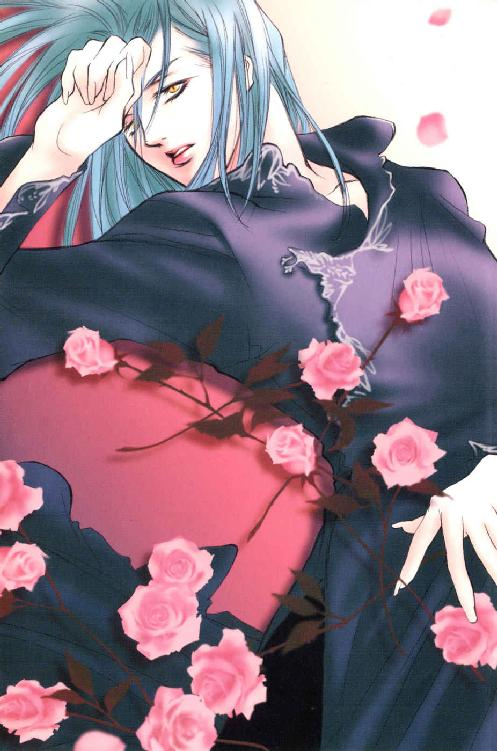
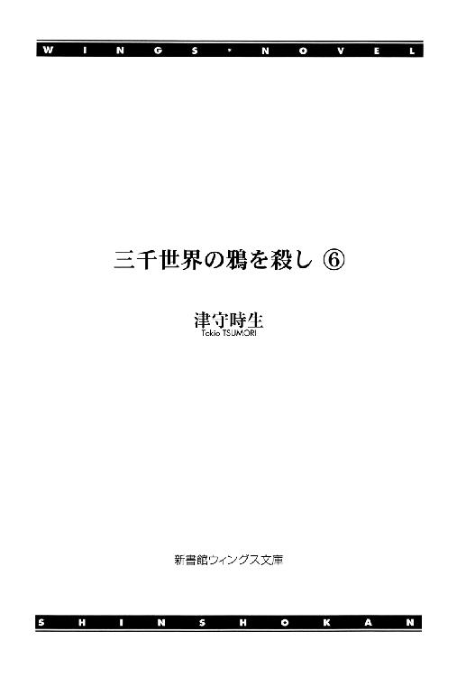
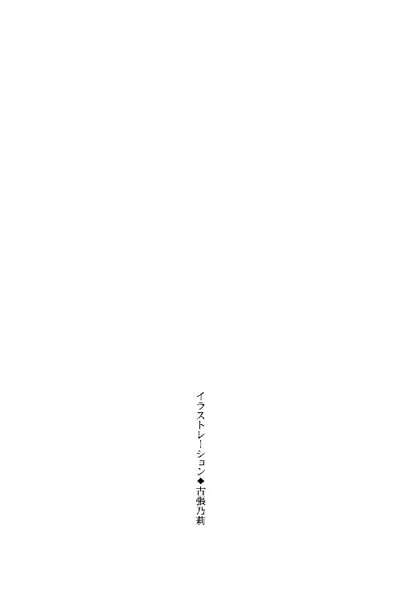
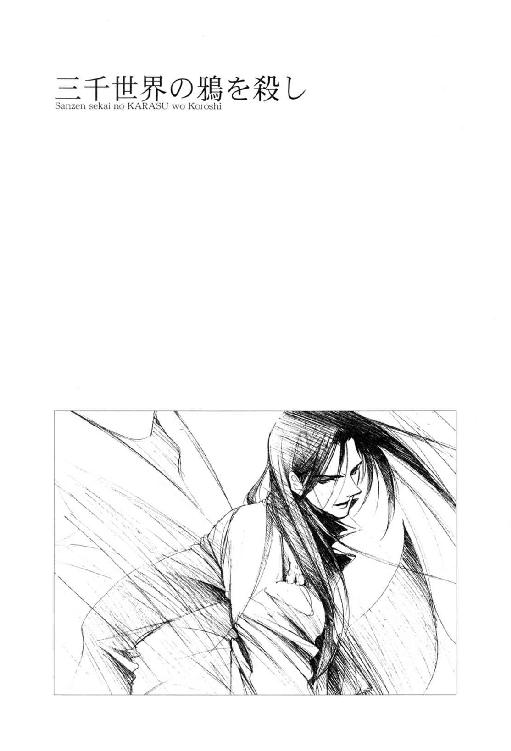
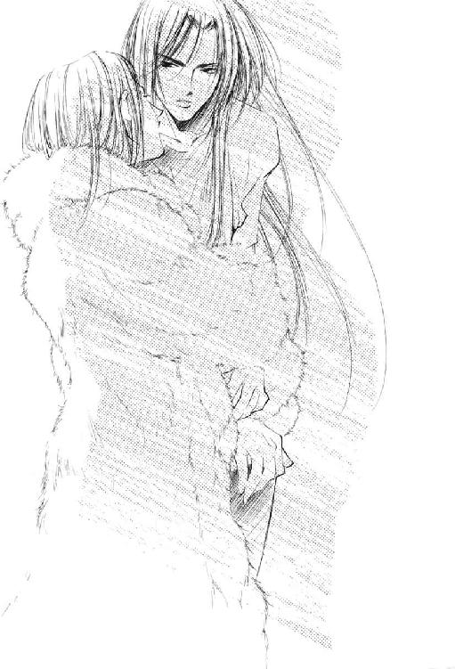
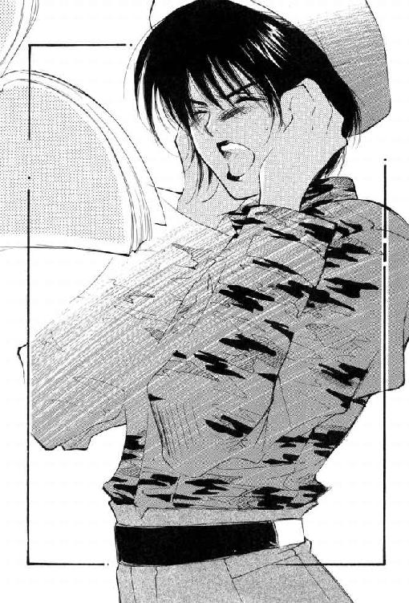
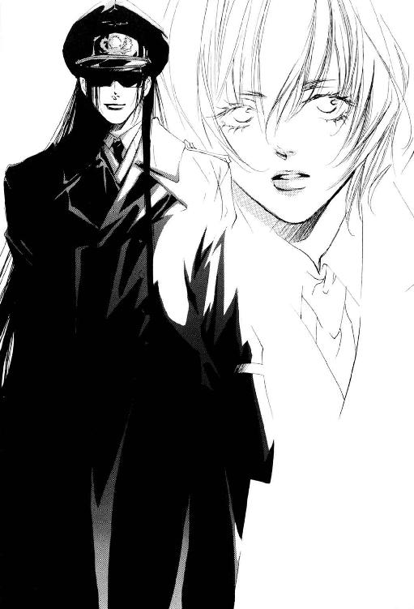
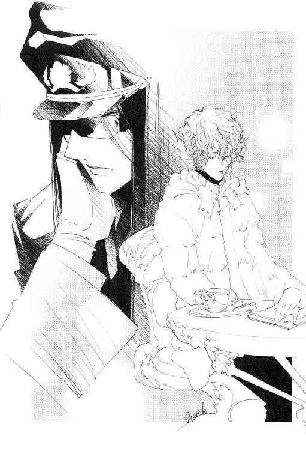
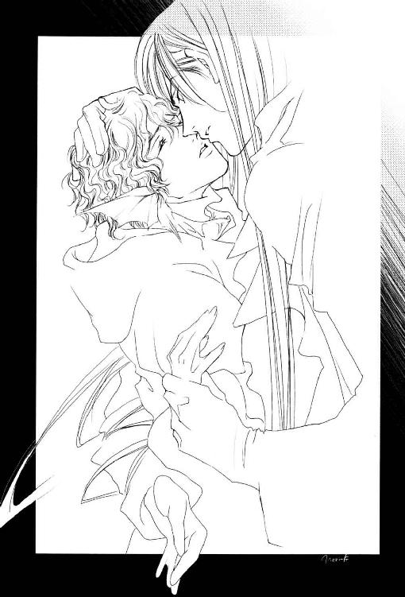

| 三千世界の鴉を殺し(6) (ウィングス・ノヴェル) | |
| 津守時生 | |
| 新書館 (2002) | |




１
軍病院の付属施設である食堂が一番混むのは、外来患者や見舞い客が加わる昼だった。朝食時は完全に職員しか利用客がいない。
深夜勤務明けのナースや衛生兵、医師たちのほか、日勤の独身者たちも早めに出勤して食堂のお世話になる。
まして多忙を極める独身の医師たちにとって、食堂は必要不可欠な存在だった。勤続四十年の外科主任サラディン・アラムートも、その例外ではない。
「アラムート先生、お隣の席に座ってよろしいでしょうかっ」
食事のトレイを手にし、通路を小走りにやってきた心療内科のマイケル・ダンカン医師が、勢い込んでたずねる。
細長いテーブルの端の席に座る外科医は、顔も上げずにそっけなく言った。
「お好きにどうぞ」
「ありがとうございますっ。アラムート先生とご一緒できるなんて、今日は朝から最高についているなぁ！」
顔を紅潮させたマイケルは、興奮気味にまくしたてながらイスを引く。
途中の通路で彼に追い越され、ねらっていた席を奪われてしまった婦人科のユン・ミンレイ医師は、いまいましげに身のほど知らずな男をにらみつけたが、それにたじろいで席を譲ってくれるほど初心な相手でもない。あきらめてサラディンの正面の席に変更しようと向き直る。
泌尿器科のフランシーヌ・デュトワ医師が、直前まで空いていた場所にすべり込んだ。
女医たちの視線が火花を散らす。そっくり同じメンバーによる先日の席取り争いとは逆の結果になったが、今日は姿を見せないだけで、ほかにも彼女たちのライバルは多い。
しばしば見られる朝の光景を遠目にながめていたナースたちが、意地悪く笑い合った。
彼女たちの手元には、サラディンにモーションをかけているものたちが毎朝くり広げる席取り争いの戦績記録帳がある。
「最近、麻酔科のイチカワ師長が参加しないわねえ」
「アラムート先生をあきらめて、同じ科のクーパー先生に乗り換えたって話よ」
「なにそれ。クーパー先生って女房子持ちでしょ。不倫なわけ？」
「別居したらしいわよ。ねらい所としては、そう悪くないと思うけど」
「まぁねー。アラムート先生じゃ高嶺の花すぎるもん。最近はすごい有力候補も出てきちゃったしさ」
病院の敷地内全域に張りめぐらされた彼女たちの情報網は、この食堂で昨日の午後にサラディンとルシファード・オスカーシュタイン大尉が、食事を一緒にとった事実をつかんでいる。
もっとも提供された情報は、大尉の副官も同席していた点が都合よく消去され、一方向にフィルターのかかったかなり恣意的な代物だった。
「でも内科にいる友達から聞いたんだけど、うわさの彼はニザリ先生とキスしてたって。そのシーンをバッチリ見ちゃった同僚がいるらしいから、本当みたいよ」
「えーっ。やっだー、内科と外科の主任を二股愛？ それって面白すぎ！」
「その話くわしく聞かせてよ」
ほかのナースたちが目を輝かせて身を乗り出す。彼女たちの口は、食事とゴシップ・ネタのために休む暇がない。
口の休む暇がないのはマイケル・ダンカン医師も同じだった。
食事中のサラディンのほうは、いくらマイケルに話しかけられようと完全に無視している。
彼の冷淡な態度も意に介さず、内科医は強いストレスが患者の脳に与える影響について最新の学説と自分の患者の症例をからめつつ、熱心に語り続ける。マイケルは自分の話が相手の職業意識を刺激するはずだと信じてやまなかった。
実際、仕事人間の外科主任の関心を引きたいという下心を持ったものは、皆その手を使って成功している。
そして、美しき外科医の関心は見事なまでに話の内容にしか向かず、時には会話した相手がだれだったのか記憶にすらとどめないという点は、あまり知られていない。
サラディンは自分が地球系人類の恐怖の的になっている自覚はあっても、恋愛対象になりうるとはまったく考えもしなかった。
これだけ多くの人間がいれば種族的本能を超越する特殊な趣味を持つものも存在する。そして大多数の地球人は、どこかしら本能が壊れているという不思議な種族だった。
自分に迫る危険を察知した動物は、当然ながら身を守る本能に従ってその場から逃げ去る。なのに地球人の中には、好奇心にかられて自ら危険の迫るほうへ出向くという理解しがたい行動を取るものがいた。
地球人たちに人気のあるスプラッター映画は、危険に引き寄せられて真っ先に惨殺される本能の壊れた人間が必ずといっていいほど登場する。
そんな好奇心の強いタイプに属するものは、命を危険にさらしても解き明かしたい神秘的な謎をサラディンから感じていた。危険は興奮を呼び、彼らはそれを恋だと錯覚する。
スプラッター映画の描く恐怖自体を偏愛する特殊な趣味の持ち主の目には、美貌の外科医がゴシック・ロマン風ホラーとスプラッターを融合させた恐怖映画の化身と映った。
さらに最初から本能の警告が存在しないか、警告を意に介さないタイプもいる。前から見ても横から見ても掛け値なしの変人たちだった。
そもそも優秀な医師ほど変人が多いという法則は、ほとんどの病院に当てはまる。その連中が外科主任に恋愛感情を抱く理由は多種多様であり、簡単に分類できない不可解なものもあった。
変人というベン図の中にひとくくりにされようと、変のベクトルが違うサラディンと彼らとの間に意志の疎通はない。
ホラー映画のマニアであり、カーマイン基地一のディスク・コレクションを誇るマイケル・ダンカンは、外科主任をホラーの神様が熱心な信者である自分にくだされた恩寵だと固く信じている。ベン図にすると、ホラー好きと変人の円が一部重なっている部分に分類される少数派だった。
ドクター・ダンカンが奇怪な妄想に浸るのは勝手だが、ホラーの神様なる存在と一面識もないサラディンがその妄想実現に協力しなければならない義務はない。
目下のところ恐ろしくも美しい外科主任医師の個人的関心は、神様ならぬ悪魔王の名を持つ男の上にあった。
芸術品と呼べるほどの美貌を持ちながら飛び切りの変わりもので、似ている人間などどこにもいないあの男が現れて以来、仕事だけで埋めつくされた単調な毎日に楽しい変化が生じた。
そう、楽しい。あの男が自分のそばにいる時間はとても楽しい。
隣の席に座るドクター・ダンカンの熱弁にもかかわらず、今のサラディンは半分上の空で食事をしていた。
昨夜から今朝にかけてルシファードと一緒だった記憶をたどる彼は、恋するものの幸せをソーセージとともに嚙みしめる。
特別任務成功の祝賀会に参加したものの、明け方近くに急患で病院へ呼び戻された彼を主賓自らが祝賀会を抜け出して車で送ってくれた。そうまで特別扱いされて気分の悪いわけがない。
ハンサムな全校一の人気者にダンス・パーティのあと家まで送られて（しかもおやすみのキスつき）、すっかりのぼせ上がってしまったハイティーンの小娘のような自分の立場は不愉快だった。それでも相手がルシファード・オスカーシュタインとあれば、自分の浮かれ具合を多少大目に見てやるべきだろう。
それだけの価値のある男だし、特別な夜だった。
祝賀会の会場で呼び出されてから病院に帰りつくまでの出来事を反芻する。
全科のナースたちが注目する華麗な三角関係の当事者のひとりにされかけていることを、今のサラディンは知るよしもなかった。
基地の街で行われた祝賀会は、基地副司令官アンリ・ラクロワ中佐がリーダーを務めた儀式〝気合い入れ〟を境にして、異様なまでに盛り上がった。
照明を落とした店内では酔った兵士の群れが踊り狂い、罵声、怒号、嬌声、笑い声に大音量の早いビートの音楽が加わる。無秩序な騒乱は祝宴というより、もはやサバトと称するほうがふさわしかった。
さまざまな種類の酒の香りと男たちの体臭や女性兵士の香水が、熱気とともに広いホールへ充満している。空調装置はフル稼働していたが、空気は悪くなる一方だった。
サラディン・アラムートは何杯目になるのかわからない水割りを、隣の席に座るラクロワ中佐から受け取る。彼はアルコールに極めて強い。ほとんど酔った経験がなく、おそらく麻酔も効かない体質だろう。麻酔の効かない体質の患者が外科手術を受ける場合、極めて深刻な問題に発展する。治療の苦痛が原因になってショック死する危険があった。
だが、脳と心臓さえ無傷なら即座に肉体組織を再生できる蓬萊人が、外科手術を必要とする日は永遠に来ない。
新しい水割りのグラスを口に持っていきかけた時、携帯端末が振動してメールの着信を告げた。外科主任の彼でなければ対処できない事態が発生した場合のみ呼び出せと言い置いてきたので、無視するわけにはいかない。
取り出した携帯端末は、周囲の環境に反応し自動的に表示画面の光度を上げる。
着信の段階で覚悟したものの、すでに軍病院から迎えの車がこちらに向かっているというメールを読んでため息が出た。脳の手術では、もうここに戻ってこられない。
本日の当直になっている医師たちの顔を思い浮かべる。経験の浅い若い医師なら手遅れで患者を死なせる可能性もあったが、ベテランの彼らは間違いなく患者を救うだろう。
ただし彼らだと患者が死なないというだけで、軽微を問わず後遺症まで完全になくしたいなら魔術師の異名を持つサラディンの腕が必要となる。
携帯端末を服の隠しに戻し、祝賀会の主役を顧みた。
ルシファード・オスカーシュタインは座ったイスの端に両足を乗せ、片腕で膝をかかえながら缶ビールを飲むという、かなり無理のある奇妙な格好をしていた。
そのすぐそばでは、白氏とラフェール人という仲の悪い種族を代表するふたりが、どちらがルシファードの膝の上に乗るかで言い争っている。
黒髪の大尉の姿勢は、野郎なんぞ絶対俺の膝に乗せないからなっ！という強い意思表示だったが、酔ったカジャとニコラルーンにまともな抗議は通用しない。
サラディンはルシファードの肩に軽く手をかけて注意を引き、声が店内の喧騒にまぎれないよう彼の耳元へ唇を寄せた。
「病院に戻らねばなりません。今夜は呼んでくださってありがとうございます。久し振りに、とても楽しい時間を過ごさせていただきました」
「それじゃ送るよ」
「とんでもない。今夜の主役が中座しては興醒めでしょう。基地のはずれまで、ナースがリニアカーで迎えに来てくれますから」
「そこまで歩くんだろ。冗談じゃねえな」
医師の気遣いをにべもなくはねつけた男は立ち上がり、上機嫌で飲んでいるカーマイン基地の副司令官に話しかけた。
「ラクロワ中佐殿。ドクターを基地のはずれまでお送りしてきます。俺の代わりにそこの席へ座っていていただけますか？」
「うむ、お安いご用だ。──ご機嫌よう、ドクター。お気をつけて」
「お休みなさい、アンリ」
ふたりを送り出した副司令官は、本日の主役代行としてルシファードの席に座ると、両膝を平手でたたき、口論をしていたカジャとニコラルーンに言う。
「さ、どちらからでもかまわないから、遠慮なく小父さんの膝にきなさい」
「私よりはるかに年下の分際で、図々しくも小父さんを名乗るなっ」
酔って目が据わっている白氏が嚙みつくと、赤い顔をしたラフェール人が無意味に笑う。
「私とは同い年くらいかなー、あははー」
「はーいはーい。私、おじさまのお膝に乗せていただきたいでーす！」
目の前にワインのボトルを数本並べたライラが勢いよく挙手すると、その隣で笑い転げていたメリッサが続く。
「おほほ～。それでは私、二番目～」
「よっしゃー、ロザリンド・バーガー大尉。副司令官殿のお膝に三番行きますっ！」
「許可する。いくらでもきなさい」
魅力的な彼女たちをひとつのテーブルに集め、ずっと独占していたワルター・シュミットがショックを受けるのもかまわず、席を立った女性士官たちは嬌声を上げて、ロマンス・グレーの副司令官に殺到する。
無礼講の店内では、一般人の想像を絶する自堕落な光景が展開されていた。
フロアの中央では、さきほどまでストリップまがいのことをして喝采を浴びていた筋骨たくましい男たちが、ほとんど全裸に近い格好のままラインダンスを踊り出す。
サラディンは床に転がっている空き瓶や兵士を踏まないよう注意深く歩きながら、進路を確保してくれる男に大声でたずねた。
「酔っていらっしゃいませんか？ 無理はなさらないでくださいね」
「大丈夫だ。ビールなんぞ水も同然だよ。よっぽど体調が悪けりゃ別だが、たいして酔わねえ体質だから」
黒髪の大尉は、飛んできた缶ビールを受け止めて器用に投げ返してから、こちらも大声で答える。
飲みかけの缶を下手に受け止めると中身が周囲に飛び散り、腹立たしくも悲惨な状況に陥るものだが、彼は開いた口の方向を見極めて空中で缶をつかみ、飛んできた勢いを殺さずＵの字を描いて投げた。遠心力を利用したおかげで、やっかいな液体は一滴もこぼれていない。
素直に感心する。ストロボ照明の中では、夜目の利くサラディンでさえ直撃を避けるのがやっとだった。
一瞬で飛行物体をとらえる動体視力と正確な進路予測、それを捕捉するのに最適な位置とタイミングの素早い算出。どれも優秀な戦闘機乗りに要求される能力だった。
「大尉殿～。あなたの××を××させてください～」
「××××っ！ 死ね、クソ野郎」
ルシファードは自分に抱きつこうとした半裸の酔っ払いを即座にけり倒し、容赦なく軍靴の底で踏みにじった。
ためらいのない暴行には、さすがのドクター・サイコも驚く。
だが、周囲で見ていた酔っ払いたちは、それがまるで名誉ある特別扱いだったかのように、踏まれた男をうらやましがっている。
どれほど近代的な組織の軍隊でも、この手の野蛮な風潮はなくならない。攻撃的な精神と行動は、戦闘集団において基本的に〝善〟だと認識されるのだろうか。
四十年軍医を務めてきたサラディンは、初めて軍人について深く考えてみる。
人殺しが仕事の軍人と人助けが仕事の医師では、暴力に対する感覚がずいぶん違うのは当然だった。かといって、殺人も辞さない犯罪者と軍人のそれも全然違う。
軍人に求められる攻撃は、正確かつ迅速であること。敵を行動不能に陥らせなければ、自分のみならず所属する部隊まで全滅する可能性がある。
まして士官は、部下に命令を下さねばならない。状況を把握し、最適な攻撃方法を選択して決断するまでの時間が短いほど、優秀な指揮官と言える。
ルシファードがどんな指揮官なのかは、授与された三個の第一等勲章が物語っていた。
それを踏まえた上で病室でニコラルーンに向けた彼の言葉を思い出すと、うすら寒いものがあった。
〝──ニコラルーン。忠告しておくが、俺は相手がラフェール人だろうと白氏だろうと、敵ならためらわず殺す。だからちょっと俺をからかうつもりで、うかつに敵に回ったりするなよ〟
ようやく気がつく。この男の子供っぽい部分ばかりを見て、愛すべき人間だと思い込むのは大変危険なことだった。
そんなことを考えながら、なんとか魑魅魍魎のうごめくフロアを抜けた。
遮音性を高めた分厚い扉を押し開け、人気のない玄関ホールに出たふたりは、清浄な空気を吸って表情をやわらげる。
「やれやれ、だ。ドクター・サイコのご威光も、酔っ払って理性が飛んでいる連中には通用しないからな」
「ご先導ありがとうございます。助かりました。今になって自分が野獣の群れに迷い込んでいたような気がしてきました」
「決まった時期にしか発情しない獣たちのほうが、中の連中よりずっと礼儀正しい紳士だよ」
ふたりはクロークに行くと、医師はあずけてあった毛皮のコートを受け取り、大尉は送迎用に使う店のエアカーのキーを借りる。
振り返ったルシファードは毛先が金色に光輝く暗青色のコートをしばし無言でながめた後、あたりをはばかった小声でたずねた。
「......なあ。それって、ラシュガナークの毛皮か？」
「さて。そんな名前でしたかね？ まだ軍医になる前、私の患者だった方に命が助かった感謝の気持ちだからと強引に渡されまして。奥様の形見を男の主治医に渡す感覚が私にはよくわかりませんけれど、毛先がキラキラ星のように光るのが気に入ってありがたくいただきました」
「その親父の感覚は正しいと思うぜ。よっぽどの美人じゃなきゃ、その毛皮に負けるもんな。ドクター以外の人間が着られるとは思えねーほど、すげぇ似合ってるよ」
美貌の蓬萊人は毎度ながら率直すぎる男の称賛に対し、あでやかな笑顔で礼を言う。
「──それにしてもお金のあり過ぎるのは考えものですね。その方は助かったために、遺産の当てがはずれた親族たちと退院なさってから、色々とあったようですよ」
「......うん。色々あっただろうな。そのコートがなくなったとわかっただけでも、結構な騒ぎになったと思うぜ」
「これは......それほど特別な生きものの毛皮だったのですか？」
「うーん。たとえばバーミリオン星で一番の資産家でも、この毛皮のコート一枚のために肉親同士で殺し合ったって、全然不思議じゃないって程度には特別かな」
外科医は動くたび金粉を振りまくように表面が輝く毛皮をなでつつ、困惑気味につぶやく。
「それほど高価なものでしたら、お返ししたほうがよろしいでしょうか。当時すでにかなりのご高齢でしたので、おそらくご本人はもうご存命ではないと思いますが......」
そばにいる男をたじろがせないため、主治医の彼より年下だった点には言及しないでおく。
「別に返さなくてもいいんじゃねえの。その親父は、女房の形見を一番似合う人間に着てもらいたかったんだろ。第一、毛皮より中身のあんたのほうが、何倍も価値があるって」
ルシファードは肩をすくめると、自明の理とばかりに軽く言ってドアへと歩き出す。
相変わらず率直な言い方にサラディンのほうが赤くなる。話のなりゆきから判断して、外科医としての優秀さを言ったのだろう。いかに高価な毛皮でも人間の命は救えない。
そう厳しく自分に言い聞かせなければ、とんでもない勘違いをした恥ずかしいうぬぼれ屋になりそうだった。
しかし、ふと足を止めて肩越しに顧みた男は、勘違いしたほうが正しかったと思える内容の忠告を口にする。
「この基地内で着る分には、ラシュガナークの毛皮なんぞ見たことも聞いたこともねえ連中ばかりだからいいが、ここ以外の場所で護衛もつけず人前で着るのは絶対にやめろよ。コートを奪われて終わるならまだマシだ。その追い剝ぎ野郎が一般的な美的感覚を持っていたら、間違いなく中身のあんたも頂戴してすげえ高値で売り飛ばすぞ」
「ご忠告感謝いたします」
礼を言う自分の笑顔が、引きつって見えないことを願った。
相手が蓬萊人のなんたるかを知らずに言っているのだと頭では理解できても、警戒心が頭をもたげてくる。凶暴な感情に沸騰した血液が、冷たくなった肉体の中を爆発的な勢いで駆けめぐる──そんな錯覚が生じた。
防衛本能から発生する攻撃衝動を抑えつけ、平静を装ってたずねる。
「ところで大尉。その上になにも着ないで、このまま外に出ていくつもりですか？ 明け方近くは一番寒いですよ」
「ん？ 上着はラジにビールをかけられて濡れちまったんだ。帰るまでにクリーニングしておくって話だったが、だれに聞けばいいのかわからねえし、駐車場の往復程度なら、ちびっと我慢すりゃいいだけの話だ」
「とかく軍人は自分の体力を過信する傾向がありますね」
「過信じゃねえよ。こうして死なずに生きていられるんだから」
医師の言外の忠告を軽く受け流す言葉の裏に、生死を賭けた過去の戦いに生き残ってきた自負がのぞく。
本人が平気だと主張する以上、押し問答をしても意味はない。医師は毛皮のコートの肩をすくめ、一足先に外へ出る。
吐く息が白くなるのは当然のこと、むき出しの耳が痛くなってくる気温だった。
彼のあとに出てきたルシファードは、外気温の低さに眉をしかめたものの、我慢すると言った手前、コメントを控える。
店の派手な照明に照らし出された相手の腕を見て、サラディンが笑った。
「すごい鳥肌ですね。駐車場は、この店の並びのはずれでしょう？ やせ我慢はやめて、着るものを取りに戻りませんか？」
「鳥肌は気温差による反射的なモンだから、しようがねえだろ。歩いているうちに慣れるさ」
「やめてください。半袖のＴシャツ姿だなんて、見ているほうが寒い」
サラディンは黒髪の大尉の片腕に毛皮を着た自分のそれをからめ、半分かかえるような格好で腕を組む。

「歩きづらいよ、ドクター」
「文句を言うなら鳥肌を引っこめなさい」
「うわ、医者のセリフとは思えねえ。ライラ並みの理不尽さだ」
普段から副官に小言を言われている男は、彼女を思わせる医師の言葉に力なくぼやく。
医師は皮肉っぽく返した。
「腕を組む相手が女性でしたら、あなたも文句を言わなかったでしょうね。わざわざ送っていただくというのに、妙齢の美女ではなくて、大変申し訳ございませんでした」
「高齢の美人ではあるな」
「信じられない......！ 私に向かって、よくもそんな失礼なことが言えますね。あなたでなかったら、翌日ここで惨殺死体が発見されているところですよ」
ルシファードは爆笑する。何軒かの飲食店は営業しているらしく、まだ照明をつけているが、人通りの絶えた石畳の道にその笑い声はよく響く。
長身をふたつに折って豪快に笑う彼を見ているうち、本気で憤慨していたサラディンの怒りも苦笑に変わった。
スクリーン・グラスをはずし、手の甲で涙をぬぐう男は、笑いの余韻を残す声で言う。
「つい惨殺死体を自分の姿で想像しちまった。ライラの裸ネクタイよりはマシっぽくて助かるけど。最近、パープル・ヘヴンを愛読しているおかげで、愉快なことにはしっかり反応できるようになったんだ」
「あんな俗悪雑誌を愛読して、そんな効用のある人間は特異体質のあなたくらいです。普通の男性は、精神にダメージを受けて軽度の鬱病になるという話ですが」
「今のは〝結構〟面白かったぜ。やっぱり他人のジョークを正しく評価して笑わねえやつは、きらわれるもんな」
「私は別にジョークを言ったつもりはありませんよ」
「うん、わかっている。それとは別の話。──妙齢の美女なんか送ってもつまんねえよ。下手すりゃ送り羊にされるしさ。俺は断然ドクターのがいいや」
たたんだ黒眼鏡のつるをシャツの胸元に差し込みながら、ルシファードはなんの迷いもなく、世の中の男がくだす結論と百八十度違う結論を出す。
ドクター・サイコの機嫌は大いに改善された。が、とある一点が気にかかる。
「送り羊というのは、つまり──」
「そうそう。カクテルを飲み過ぎて気分が悪くなったから、部屋まで送ってくれと言った人妻に押し倒されたのが十三の時でさ。以来、メス狼さんたちを巣に送っていった善良な羊くんは、何度喰われちまったことか......。ペットの犬が可愛い子供を五匹も生んだから、ちょっと見ていかない？で喰われて、パソコンの調子が悪いんだけど直してくれないかしら？で喰われ、ねずみ捕りを仕掛けたんだけど死骸がこわくて触れないの、何かに包んでゴミ箱に入れてくれる？で──......俺、よく女性不信にならねえよな」
指を折って話していた男は、いまさらながらに物悲しくつぶやくと、それから先の告白を中止した。
サラディン以外の男が聞き手だったら、今の話を単純にうらやましがるか、笑い飛ばして終わっただろう。語り手以上に性的に淡泊な蓬萊人は、警戒心の薄いハンサムな羊の災難に対し、深い同情を寄せる。
「なんてお気の毒なのでしょう。そんなひどい目に何度も遭っていたのですか。よこしまな劣情にとらわれて他人の善意を踏みにじるとは、許しがたいひとたちですね。不心得なものには必ず相応の報いがあるはずです」
しばしば善悪の彼岸を簡単に超越するドクター・サイコに、果たして断言する権利があるか否か微妙なところだった。
それでも相手を励ましたいという誠意は伝わる。
「ありがとう、ドクター。やっぱり、こーゆー話は男同士でするべきだよな。ライラに話したら、鼻で笑って『お子ちゃまね』なーんて言いやがるんだぜ」
その通りかもしれない。
サラディンは、ルシファードの優秀な副官の慧眼につい感服した。
十三歳の時から進歩していないと言おうか、学習機能がついていないと言おうか。
「......少なくとも私は、送ってくださるあなたのご親切に感謝こそすれ、押し倒して既成事実を構築しようなどという野蛮な野心は持っておりませんから」
「ドクターが俺を押し倒した場合、どっちが攻？」
外気より冷たい沈黙が降りる。
ルシファードが遠慮がちな小声でわびた。
「......ごめんなさい、ドクター。反省しております。最近、反射的になんでも受と攻に分けるクセついちまってさぁ。ナイフとフォーク、どっちが受だと思う？」
反省とは口ばかりの男の問いに、さすがのドクター・サイコもため息が出る。
「銀河連邦宇宙軍はこんな男に三つも第一等勲章を与えて、律儀に給料を払い続けているわけですか。ヒヨコの鑑定士を雇ったほうが、まだしも役に立つ気がしますね」
「うっ。首にならないようにヒヨコの鑑定士の資格も取得しとこーかな」
「大尉。私は医師として、あなたに忠告いたします。あの俗悪本を読むのは、最低でも三日に一冊の割り合いに減らすべきです。あなたの精神に悪影響を与え、妄想の症状が出ていますよ。愛読者の女性たちのように、男ふたりが立っているとホモに見えるなどという幻覚症状が出た場合、病気はかなり進行して深刻な状態に陥っていますから、即座に使用を中止し、専門医に相談してください」
「アイ・サー。ご忠告感謝いたします。ちなみに相談すべき専門医とは、眼科のドクターでしょうか精神科でしょうか。それとも内科で頭部を精密検査されたのち、脳外科に回されることになるのでしょうか？」
真面目にたずねているようでもあり、ふざけているのかもしれない男に対し、外科主任も恐ろしい答えを返す。
「なんでしたら直接私のところへきてくださっても、一向にかまいませんよ。緊急に開頭手術をして、脳のシナプスに手を加えて差し上げましょう。多少脳の配線を変えるだけで、別人になれます」
「今日から生まれ変わったワ・タ・シ♡ 悪くないですねぇ。でも、それ、どう聞いても銀河連邦法違反なんですけど？」
「......手術室という密室ではね。執刀医の私が神であり、私が法律であり、私が裁判官なんですよ。助手も麻酔科医もナースも、皆私のしもべ」
「きゃー、いやー、おステキー、サイコー。カッコいいなぁ。俺、マジでドクターに惚れ直したよ。でも私が死刑執行人って言われちゃったらどーしよーかと、ちょっとドキドキしちゃいました」
「医師が患者を殺してどうします。ま、裏を返せば殺さない限り、なにをしてもいいということになりますがね。ふふふ......」
不穏に微笑むドクター・サイコの答えは、ルシファードに大ウケだった。
ゲラゲラ笑っているうちに整地した場所をただ舗装しただけの駐車場に到着する。四方の端に配置された照明が、うっすらと砂ぼこりのかかった十数台の浮遊型乗用車を照らし出す。
基地内に配備されたリニアカーと武骨なフォルムの浮遊型装甲車しか目にする機会のないサラディンは、物珍しげに優美な流線型のボディを有するそれらを眺め遣った。
空気抵抗を極力減らすべく設計された車体だったが、どの車にもかなり目立つへこみとこすった傷が散見する。
圧縮した空気を噴出することで空中に浮かび上がり、噴出の角度を調節して望む方向に進むシステムだと、確かに先行車がはね上げた小石で車体に傷がつく場合もあるだろう。
だが、それだけでここまでひどいへこみが生じるとは思えない。
「ここのひとたちは日常的にカー・レースでもやっているのでしょうか？」
「ん？ ああ、そうかもな。浮遊型の車体が高速で接触すると、とんでもねえ方向にスッ飛ぶ危険がある。幸いここの周辺は沙漠だから、どこかに激突することもなく横転程度ですむだけだろう」
ルシファードは手にしたカード型キーをドアに軽く接触させる。カードが発する固有の信号に反応し、助手席のドアが開く。
「横転程度？ どう考えれば程度という単語が出てくるのでしょう」
「シートベルトをしていれば死なない程度の程度さ。対ショック吸収構造が規定に満たない安物の座席だと内臓破裂を起こすが、少なくともこの車のオーナーは、自分の身の安全に充分金をかける主義のようだぜ」
先に医師を助手席に座らせたあと、前を回って運転席に乗り込んだ大尉は、座席の座り心地から質と安全性を判断した。
カード・キーを指定位置に差し込んでエンジンをかけ、てきぱきと車の性能や運転方法、ナビゲーション装置に入った情報などを調べ始める。
「......ほー。金をかけているのは安全ばかりじゃなかったな。こいつは面白い」
ひとりごちる声が妙にうれしそうだった。
機械を扱い慣れた大きな手の長い指。
無駄がなく繊細な動きを見るとはなしに目で追うサラディンは、その指が同様の動きでだれかの肌を愛撫するさまをふと想像する。
つねにどこか事態を楽しむ余裕があって、無粋な性急さとは無縁の男だった。運転席に座って車の性能を調べつくすがごとく、ベッドの中では相手の肉体から引き出せるすべての反応を丁寧に探るだろう。
次の瞬間、我に返ったサラディンは、自分がふけっていた性的妄想に啞然とした。いまだかつて、だれかについてそんな恥知らずなことを夢想した経験はない。
自分では大丈夫だと確信していたが、ひょっとして酔っているのだろうか。手術に影響するなら病院でアルコールの分解促進剤を飲む必要がある。
狼狽のあまりみじろいだ医師の急な動きに注意を引かれたのか、ルシファードは顔を上げずにたずねた。
「どうした？」
「......いえ。その、あなたに対し、初めてお会いした時からずっと不思議に思っていることがあるのですけど......」
「ふーん。どんな？」
「私が本音を言うと周囲はこわがるものばかりでした。なのにあなたは、さきほどのように平然と笑っている。どうしてですか？」
「そうか。やっぱり本音なのか。......ま、別にいーんじゃねえの、個性的でさ。きれいなドクターがすげえこと言うから、よけいこわがるんだろうし。──『君の美しさは恐ろしいほどだ、フッ』って感じ？」
「その最後の『フッ』とはなんですか？」
笑う医師の問いかけは、車の噴出する空気の音にかき消される。赤い車体が浮き上がり、駐車場からゆるやかにすべり出した。
コンピュータ制御のリニアカーにまさる快適な発進に感心している医師に向かって、臨時の専属運転手が簡単に告げた。
「舗装されていないが、近道を飛ばす。少し揺れるのは勘弁してくれ」
「......お任せします」
ふたりきりで話す楽しい時間をもう少し引き延ばしたくても、手術台に患者の待っている事情が許さない。
カーマイン基地の外にある市街地と反対側の土地は、緑化も開発もされていない広大な荒野だった。ルシファードが口にした沙漠という呼び名も似合う。
各大隊が交代で演習を行なっている場所と違法な歓楽街も離れていた。流れ弾やミサイルが飛んでくる距離では、おちおち商売もしていられない。
相互の位置関係を頭の中で再現した医師は、この車が直接病院に向かっていることに気づく。
「オスカーシュタイン大尉。リニアカーが迎えにくるそうですから、わざわざ病院に送って下さらなくても結構ですよ」
「病院に行くには遠回りだ。早いほうがいいんだろ？ 浮遊型ならリニア・システムが埋設されていないところを走れるし、多少の悪路も大丈夫だ。迎えの車に連絡して、引き返してもらえばいい」
「しかし、祝賀会は......。あなたが主役でしょうに」
「俺が抜けても同じだと思うぜ。みんな酔っ払って、勝手に楽しくやっていただろ？」
確かにその通りだったので、これ以上固辞する理由が思い浮かばず、サラディンはためらいながらも迎えの車に連絡するはめになった。
医師が通信を切ると、ルシファードはさきほど熱心に調べていた結果を報告する。
「燃料はほぼ満タンで車体は最新型。暗視装置搭載、ナビ・システムには通過予定地点の地形が全部入っている。これのオーナーは相当荒れ地を飛ばすのが好きらしいな。願ったりかなったりだぜ。ついでに最新のエアカーの性能がどんなものか、限界まで見せてもらおう」
「私は限界など見せていただかずとも結構です。第一、この車は送迎用に提供された店の車でしょう。事故など起こしたら大問題です。普通に運転してください」
「おや。ドクターは俺の運転の腕を信じないわけ？」
ハンドル脇のナビゲーション装置を片手で操作しながら、黒髪の大尉はわざとらしく傷ついた口調で言った。
次々と車のフロントガラスに地形や意味不明の数字が、色分けされた光で表示されていく。
医師は返事につまる。完全に信じていないわけではないが、百パーセント信頼しているとも言い切れない。
「万が一ということもあるでしょう」
「ドクターは万が一手術に失敗して患者を死なせたら、なんて考えて手術する？」
「一緒にしないでください！ 手術しなければ患者は確実に死ぬケースがほとんどです。私は深刻な後遺症が残るかもしれない患者を、手術台に待たせています。あなたの遊びにつき合ったあげく、事故で到着できませんでしたではすまないんですよ！」
ルシファードは本気で嚙みつく医師の剣幕に軽く肩をすくめた。
「イエス・サー。ご希望通りの安全運転でお送りいたしましょう」
２
原始的な宇宙船を作り、自分たちの所属する太陽系内を頻繁に調査し始めた頃から、地球人は急激な人口の増加に悩んできた。
強制的な産児制限は何人もの為政者たちを失脚させ、官民挙げての熱心な啓蒙活動も、増加率を多少低く抑えられただけだった。
惑星上で増え過ぎた人口を平和的に調節する手段は、別の惑星かスペース・コロニーへの移民しかない。
最初は膨大なコストと時間をかけて、同じ太陽系に属する惑星をなんとか居住可能な環境に改造していたが、ワープ航法を発見したあとは、ごく初期のお粗末なワープ航行用エンジンでたどりつける限りの近場の太陽系をしらみつぶしに調べて回った。
それなりの犠牲とかなりの時間をついやした探査の結果、調査隊が地球型の惑星を〝発見〟するとすぐに地球人たちは大挙して押しかけた。そして、今度はその惑星を足場にして新たな惑星を探す。
発見した惑星のいくつかに知的生命体が存在していた事実を、地球人の指導者たちはあえて無視した。
何千年もかからなければ自分たちのレベルに達しないそれらの存在が、一体なんだというのだろう。すでに莫大な資金と貴重な時間を費やした自分たちは今、移住する惑星が欲しいのだ。──今すぐ。
強引に居座った移民たちの大半も、遠い将来その惑星の〝主権者〟になるはずの生物など気にかけず、またたく間に繁殖することで自分たちが主権者にすり替わった。
地球人銀河系移民史初期から中期にかけて、十二の種族が地球人のもたらしたさまざまな災厄によって滅亡した。
そのうち、この段階のほとんどの種族が経験する宗主星と植民惑星政府の主権をめぐる争いが発生し、移民どころではなくなった。互いを滅ぼしかねないテクノロジーを有する彼らは、一時期かなり深刻な状況にも陥ったが、双方が妥協できる案をひねり出して決着した。
同じ原因で同種族同士が殺し合い、滅んだり文明が退行したケースも珍しくない中、地球人は自身の命に対してはかなり聡明にふるまったほうだろう。
致命的な結果を招きかねない内輪もめをなんとか切り抜けた彼らは、その間にもっと短時間で長距離を航行できる宇宙船のエンジンを開発していた。
それによって銀河系での活動範囲を飛躍的に広げた彼らは、ついにファースト・コンタクト──自分たち以外の種族の人間が乗った宇宙船との出会いを果たす。
地球人は期待と警戒心を抱きつつ平和的な交流を重ねたのち、銀河連邦に加盟しているその種族の仲介を受けて、銀河連邦議会を構成する惑星政府のひとつとなった。
加盟を承認されるためには、銀河連邦議会が決めたいくつもの法律──その中には宇宙船建造技術どころか家を建造する技術もない他種族が、自分たちの住む惑星に対する主権を尊重するルールも含まれていた──を遵守するという宣誓の文書への署名が不可欠になる。
当時の地球政府は、加盟によって高度な惑星改造技術を有する会社をいくつも紹介され、高性能のワープ航行用エンジンを搭載した宇宙船も入手できることを知らされた。連邦加盟文書への同意に悩んだはずがない。
連邦に加盟するほかの種族たちとの交流から、段階的に高度な科学技術を学んだ地球人たちは、すぐに連邦の平均的文明レベルにまで達した。
規定の厳しい審査を受けてから議会で承認されると、許可された惑星の改造を行なって移民ができる。現在では惑星改造を請け負う業者や公団の中に地球系の団体も多い。
地球系人類が百パーセント近くを占めるバーミリオン星の学校は、生徒たちに地球人の歴史を教える。子供たちは自分の先祖が連邦加盟以前に行なった他種族への非道を知って驚き、善き銀河連邦市民として二度とそのような愚行をくり返すまいと固く誓った。
彼らが生まれ育った星は、主権を持つ他種族を皆殺しにして乗っ取った惑星ではなく、正式に連邦議会から改造承認の許可を得ている。
バーミリオン星は、人間が比較的楽に居住できるよう環境を整えられてから移民されるまで、あまり時間を置かなかった惑星だった。改造前の過酷な自然環境をうかがわせるものが、身近な場所に多く残されている。
多大な費用と労力をかけて改造されたというのに、銀河系の端に位置するせいで大半の土地は有効活用されていない。
まだまだ未開発地域の残っているこの惑星を発展させるのは、未来をになう君たちの役目だという教師の言葉を、子供たちは誇りで胸をいっぱいにして聞いていた──。
ルシファード・オスカーシュタインが車を乗り入れた場所は、カーマイン基地が演習に使用している荒野より、はるかに起伏にとんだ地域だった。
激しい風雨にさらされ続けた岩山が、侵蝕されて小規模な峡谷になっている。
だが、峡谷の範囲が狭いというだけで高低差は大きく、複雑な地形は奇妙な彫刻をおびただしく並べて組み合わせた迷路のようだった。
「大尉。まさかあなたは、こんな場所を通り抜けるのが近道だなどと主張するつもりではないでしょうね？」
ナビゲーション装置がフロントガラスに表示する地形データを、信じられない思いで見つめながら、サラディンはつとめて冷静な声を出した。彼が激怒したために運転手がハンドル操作を誤るようなことになれば、即事故につながる。
速度表示の数字に目を走らせて深く後悔した彼は、意識して前方だけに視線を向けた。
地形データから急な進路変更を予測し、遠心力によって受ける肉体へのダメージを少しでも減らせるよう、その時々に身構える。いきなり右や左に進路を変えられると、首に負担がかかって、むち打ち症になりかねない。
「早いぜ。ここの周囲を回っても、たいして変わらねえけど」
「あなたというひとはっ！ 安全運転をすると言いませんでしたか？」
「安全運転しているよ。こうして会話できる程度のスピードしか出していねえもん。これだけの性能とナビ・システムがあれば楽勝さ。心配せずに楽しめばいい。あんたひとりだったら、絶対にこんなところへ来ねえだろ」
サラディンは到底納得しがたい回答を聞いてから、おのれの心に芽生えた疑いを口にした。
「私を送るとおっしゃった時から、そのつもりだったのですか？」
「いや。この車を調べていた時にグラディウスの──俺の部下で酒飲み仲間でもある六芒人の軍曹なんだが、彼女の話を思い出したんだ。休日に一般車を借りて、ここを通り抜けるタイムを競って遊ぶらしい。軍の浮遊型装甲車だと幅があるせいで通り抜けられないんだとか。たぶん駐車場に止められていた車に傷やへこみがあったのは、カー・レースじゃなくて通り抜け競争のせいだろう。でなければ、こんな場所のデータがナビ・システムに入っているワケねえもんな」
「性能を調べた時にはここを通ろうと決めていたくせに、よくもヌケヌケと......。よろしいですか、私は仕事で戻るんですよ」
サラディンはとげとげしく言った。
「うん。だからこそ近道しようと決めたんだけど？」
肉眼ではライトに照らされた範囲しか確認できないが、昼間でも進路に悩みそうな場所だった。そんなところを夜に走ろうと考えたこの男は、無謀を通り越して自殺願望があると疑われてもしようがない。
いくら驚異的な肉体再生能力を有する蓬萊人でも、頭蓋骨が一瞬で砕けて脳が飛び散った状態から、もと通り再生できるとは思えなかった。客観的に判断して臆病者ではない自分が、この現状にかなり恐怖を感じているのは、生命の危機に直面しているせいだろう。
「あなたの危険な遊びに、仕事で戻る私を無理矢理つき合わせないでくれと言っているのです。不謹慎極まりない」
「俺は仕事も趣味も遊びも、全部真剣に楽しんでいるぜ」
「ほう、そうですか。殺し合わねばならない戦闘も？」
「もちろん。ふざけたり、嫌々ながら殺し合ったりはしねえよ。俺が自分の意志で納得して選んだ仕事だからな。医者のあんたには、理解できねえ感覚だろうが」
皮肉を簡単にかわされて、サラディンはますます不機嫌になる。
運転席の男はハンドルを操作する手をひとときも休めないまま、薄く笑って言った。
「俺は自分にできることと絶対できないことを、キッパリわけて考える。そのあいだにあるのは、運が良ければできることだ。戦場では運任せでヤバイ橋も結構渡ったが、守ると言ったあんたが一緒なのに、運だめしなんかするかよ。無事に病院に到着できるさ、絶対に。俺を信じさえすれば、滅多にできない体験を楽しめるんだがな」
どうしてこの男は毎度自分の心の急所を突くのだろうと、いまいましい思いで聞く。窓に映った自分の顔は、すでにあきらめの表情に変わっていた。
「わかりました。私も割り切って、前向きにこの事態を楽しみましょう。ただしお断りしておきますが、私は保守的な人間で、このような冒険は好みません。二度はごめんです」
「そいつは愉快だ。ドクター自身は、他人にとって冒険の塊だぜ。こんな小さい峡谷なんぞ目じゃねえくらい、ワクワクさせてくれるのに」
短いながらも魅力的に響く笑い声を上げたルシファードは、言葉通りにはずんだ口調で楽しそうに言う。
セクシーな大人の男と無邪気な子供を同時に宿した声音に惹かれ、思わずそちらを見遣った。
自分が女性だったら誘惑されたと思いかねないセリフだったが、相手は同性であるドクター・サイコを異色な存在ゆえに興味深いと述べたにすぎない。それでも耳に快い声だった。
視線の先にひとりで観賞するのが惜しいほど端整な横顔が、さまざまな装置の明かりを受けて浮かび上がっていた。薄暗い中、その横顔の目だけが金色に強く光をはじく。
なにかの光が反射しているのかと思い、それらしき光源を探したが、該当するものは見当らない。サラディンは自分が〝日蝕眼〟と名付けた大尉の目を再び見直す。
運転するため絶えず視線を移動させているが、目線を上げた拍子に間違いなく金色に光る。
気分が高揚したり意気消沈している時、目の色が変わる人間は多い。特に青や緑の目は、色の変化が顕著だった。
だが、茶系など暗く濃い色の目が、色変わりをする例に出会ったことはない。ましてルシファードの虹彩は漆黒。もっとも濃く暗い色のどこがどう変化すれば金色になるのか。
日蝕が終わり、闇から開放された太陽が放つ光のように心躍る金の輝きだった。さらに近くから観察してみたい衝動を抑えるのは、かなりの気力を要した。
この天然の迷路をかなりのスピードで運転している相手なので、注意をそらしただけでも事故につながる。
そして、この迷路を無事に抜けて心置きなく観察できる頃には、常態の日蝕眼に戻っているだろう。
ルシファードはサラディンを〝ワクワクさせてくれる〟存在だと、物好きにも言い切ったが、サラディンにも同じことが言える。これほど自分の興味を引く他者と出会ったのは初めてだった。外見も中身も次から次へと不思議を見せてくれるので、飽きる暇がない。
医師の怒りが消えたのを気配で察したのか、ルシファードはのんびりした口調で告げる。
「そろそろ少し厄介なところに到達するから、しっかりつかまっていてくれよ。そこを通り過ぎれば残りはチョロイし、出口も近い。しばらくは話しかけられても答えないが、話はちゃんと聞いている」
安全運転の約束はどうしたと詰問する暇もあらばこそ、車はスピードを上げながらカーブを切った。急いでドアの脇に取りつけられた把手をにぎる。
その直後、運転席に向かってかなりの遠心力が働く。把手につかまるのが遅かったら、脇腹に深く食い込むシートベルトのせいで、かなりつらい思いをしていただろう。
どうして難所に差しかかるのにスピードを上げるのか問いかけようと顔を上げた彼は、フロントガラスの向こうに広がる風景を目にして、小さな悲鳴を上げる。
細く曲がりくねった峡谷を走っているはずが、いつのまにか四方全部が岩肌に囲まれた洞窟に入っていた。ライトがいくつもの出っ張りを照らし出す。
──あ、ポリープ......。この程度の大きさなら、まだ薬で消せるな。
人間の大腸のスキャン映像によく似た光景が妙な錯覚を生み、職業意識を刺激する。一瞬で通り過ぎたというのに、切除を必要とするか否かの判断まで反射的に下してしまう。
ルシファードはエアの噴出力を落とし、走行時の車高を下げる。氷柱のように何本も天井からたれ下がった岩の下をすり抜けた。その直後に噴出力を上げ、車体を上昇させる。
そのタイミングが少しでも遅れたら、進路に転がっていた数個の岩に接触してはじけ飛び、岩壁に激突しただろう。わずかに車の底をかすっただけでも、場所が悪ければ噴出装置を壊す。
サラディンは身震いした。
──......なんだか今、岩のひとつが半分砕けていた気が......。いや、よく見ないうちに走り過ぎてしまったから、気のせいだろう。
取り乱さない自信がなかったため速度計は見なかったが、前方に迫った光景が瞬時に後方へ流れ過ぎて行く状況から判断して、時速二百キロは軽く越えている。
さすが教官の資格を持つ現役の戦闘機乗り。動体視力にさほど違いはなくても、それを運転に反映する反応速度は、先日三十五年ぶりに操縦桿を握ったペーパー・パイロットである自分の比ではない。
いくらこの洞窟状の通路の詳細なデータが、ナビゲーション装置に入っているとはいえ、難コースで知られる場所を夜間このスピードで初めて走る男の蛮勇にはあきれる。
この車よりずっと速い速度でＶＴＯＬを操縦していた時、今のような恐れは全然感じなかった。自動操縦や自分で車を運転する時は平気だが、他人の運転だと酔うという人間がいるのと同じく、他人の操縦や運転は不安定な気がしてこわくなるのだろう、とサラディンは冷静に自分の感情を分析した。・・──車椅子の不自由な身で、外科医の操縦するＶＴＯＬに乗せられた通信科のヘインズ軍曹が、自分は決してそんな抽象的な理由で恐怖したのではないと、心の底から強く訴えるにしても。
運転車の手元近くの表示を見ると、肝を冷やしたり言い争っているうちにコースの大半を走り終わり、確かに峡谷も残りわずかになっていた。
絶対に自分ではこない場所を楽しめと言ったルシファードの言葉に従ってみようかと、軽い気持ちで視線を上げ──フロントガラスに投影された進路の地形に驚愕する。
これほど驚いたのは、何年か前に初執刀した新米の医師が、至極簡単なはずの手術で患者の動脈を傷つけ、大量の血が吹き出した手術以来のことだった。
なにしろあの時は、助手の自分の顔面に向かって飛んだため、手術用のゴーグルが血を浴びて前が見えなくなった。それでもとっさに患者の患部へ手を突っ込み、傷ついた血管を指できつく圧迫して止血する。
新人の言語道断なミスに驚いたのではない。急所である目に向かってものが飛んでくればだれでも驚く。
経験豊富なナースがすばやく彼のゴーグルをガーゼでぬぐってくれた直後、衛生兵が万が一のために用意しておいた彼の鍼を手渡したので、即座に止血のツボに鍼を打つ。両手の自由を取り戻した彼は、魔術師と仇名される手練の早業で血管を縫合した。
患者を失血死させる危機から脱するまで、顔面蒼白でパニック状態の新米はメスをにぎったままその場に硬直していた。
ほかの医師なら、その手術において新米はもはや使いものにならないと判断しただろう。自分が代わって執刀を担当し、別の医師に助手として入るように頼むのが措置として正しい。
しかし、サラディンはどんな事態に陥ろうとも自分が責任を持って全力で援助をするので、手術終了まで執刀医としての責務を果たすよう相手に命じた。
新人が未熟なのは当然。そのために自分が助手についたのであり、自分がついていながら手術が失敗するなど絶対にありえない。それを放棄するのは、負けるはずのない戦いで敵前逃亡するに等しい。
新米だからといって軍医が負傷兵の治療を拒否できると思うのか、とも言った。
精神を安定させるツボに鍼を打ってでもやらせるつもりだったが、外科主任の厳しい叱咤を受けてなんとか立ち直った新米は、不手際は多少ありながらも無事に手術を終えた。
今では若手のホープとして、日夜こきつかわれている。
──いけない。思い出に現実逃避している場合では......。
だが、その時の気持ちを思い出したのは、ムダではなかった。自分がいるのに、どうして失敗などすると思うのだという憮然とした感情は、ルシファードのものでもある。
〝俺は自分にできることと絶対できないことを、キッパリわけて考える。守ると言ったあんたが一緒なのに、運だめしなんかするかよ。無事に病院に到着できるさ、絶対に〟
仮定の話など入る余地のない、自分の中での事実を語った言葉はプロとしての自負だった。
とはいえサラディンを送り届ける途中にこんな場所をわざと通過するのは、大事なおつかいの帰りに寄り道する子供と同レベルだと、本人はわかっているのだろうか。
Ｖ字型に変化した進路を目にしてショックを受けた医師は、硬直したまま運命の瞬間を待つ。
四十年前にこの基地の軍病院に配属されて以来、リニアカーしか運転していない。本来水平方向にしか移動できない浮遊型自動車で、どう操作したらあんな場所を走り抜けられるのか、外科医には見当もつかなかった。
ルシファードはわずかにハンドルを右にきり、次に逆の左へ大きくきりながら、いきなり噴出力を上げる。
岩壁に激突する寸前に左へ大きく曲がった車体が、わずかにバランスを崩したところへ、強い噴射による反発がさらに車体を大きく傾けた。
その角度のままＶ字型通路に突入する。
第一関門は見事にクリアしたが、このまま最後まで走り続けられないのは明白だった。自動的に車体を水平に戻す機能がある上、遠心力が消えた時に下に向かって働く重力の問題がある。
だが、ふたりの乗る車は絶えず傾斜が変化する通路を同じスピードで走り続けた。岩盤の具合か、侵蝕される過程で多少蛇行が生じていたものの、走行に支障をきたす規模でなかったのは幸いだった。
あらかじめ地形を完全に調査し、作成した案内図が提供されているにしても、一体どんな方法で無理な角度での走行を続けていられるのか。
好奇心にかられたサラディンは、ななめの車体の下側になっている運転席を盗み見る。
ルシファードは、本来車のコンピュータに任されている各噴出装置の角度と出力の調節を手動で小刻みに行ないながら、片手でハンドルを動かしていた。
金色に光る双眸が進路予定図と現在走行中の通路との間を往復していることから、その地形に従い、わずかな時間差をつけて手元のパネルに入力しているらしい。
〝──しばらく話しかけられても答えないが、話はちゃんと聞いている〟
人間の音声として認識している、の間違いではないかと思う。
入力のタイミングがずれただけでも事故のもとになる。重力の法則に従った車体が落下した場合、潰れるのは運転席だった。
たかが送ってもらうだけで命がけになると知っていたら、絶対に辞退した。任務ならともかく遊びで命を危険にさらすなど、正常な精神とは言いがたい。無事峡谷から脱したあかつきには、この無謀な命知らずに精神科のカウンセリングを予約してやる。
ななめの座席に座ったまま医師が決心を固めていると、不意にライトに照らされていた岩の壁が消滅した。
フロントガラスの向こうには一面の星空。圧縮空気の噴出音の反響も消えている。──そして、まぎれもない浮遊感。
「×●○★◎☆▲▽■◇◆□▼△......っ！」
「そ～ら、フィニッシュ～」
慣性で夜空を飛ぶ車の中、声にならない悲鳴を上げている医師の横で、運転席の冒険野郎は楽しげなかけ声とともに車を操作した。
Ｖ字型の通路から空中に飛び出した車は、ななめに落下していく途中で姿勢制御装置が働き水平に戻る。
ルシファードが噴出力を最大にした。浮遊型自動車のそれは数秒しか続かないが、車体はＶＴＯＬ並みの安定感とごく軽微な衝撃だけで、平坦な大地に着地をとげる。
落下した高さ自体は数メートル程度のものかもしれない。
だが、なにも知らされず唐突に落下を体験した助手席のサラディンは、着地するまでのあいだ生きた心地がしなかった。
「ルシファード・オスカーシュタインッ！」
「イエス・サー」
無事難所を通過し、再び走り出そうとしていた男は、医師の剣幕に驚いて応答する。
上着を着ていたら胸倉をつかんで引きずり寄せていたところだが、あいにくとＴシャツではそれもままならない。なにをそんなに怒っているのだと言わんばかりの不思議そうな表情にまた腹が立つ。
「あなたは自分がどんなに危険な運転をしたのか、自覚があるのですか！」
「危険？ うーん。たとえて言うなら、一般人が三階から飛び降りるのは確かに危険だよな。よくて骨折、運が悪いと死ぬ。だけど、この基地の兵士は訓練しているから、その程度で死ぬ奴はいない。骨折もよほどのヘマだ。俺ならいつでも無事に飛び降りられる。そういう風に鍛えてきたし、そもそも地球人とは身体能力が違う。あんたの言う危険はそーゆーたぐいのモン」
それで説明終わりとばかりに車をスタートさせる男の横で、サラディンは片手に顔を埋めて嘆く。
「肉体は無事でも、精神的ショックで心停止しそうでしたよ。あなたにとってはささやかなスリルだったでしょうが、私には限界を越えたストレスです」
「どうせ人間、必ず一度は死ぬんだって、ドクターが言ったんだぜ」
「だからといって、無意味に死にたいとは思いません」
峡谷をほぼ脱しつつあるのは、ライトに照らし出される進路の地形の変化でもわかる。フロントガラスに投影された色々な表示が、いつの間にか消えていた。
「それが無意味か否かを決めるのは、残された生きている人間であって、死んだ奴には関係ねえよ。そもそも死ぬのに意味や理由が必要なのか？ 死ぬ時にドクターが一緒なのは、悪くねえとは思うけどさ」
「......私なら、愛するひとと一緒に永遠を生きたいと思っています」
「へぇー」
にぶい。
お話にならないくらい、にぶい。こちらは充分思いをこめて告白したつもりなのに、この気のない相槌はなんとしたことか。
サラディンは気分を害する。
異種族との恋愛に関し、ほとんど男女を区別して考えない蓬萊人は、隣の先ラフェール人が自分の恋愛面ではきわめて保守的な性差別主義者なのを、よく理解していなかった。
──こうなると手っ取り早く実力行使に移ったほうが......。
幸い車は密室。気分が悪くなったと言って車を止めさせ、媚香を使ってしまえば──あとはスキを見て嚙み放題。
その危険思考は、もはや送られ狼たちと大差がない。
しかし、少々うかつだが、基本的にフェミニストで善意に満ちた頭の黒い送り羊を天は憐れみ、救いの手を差し延べた。
携帯端末の呼出し音が鳴り、具体的に手順を考えていたサラディンは現実に引き戻される。
渋々応答すると、救急車に乗り込んでいる救命士といましがた交わした会話の内容を、夜勤のナースが伝えてきた。
泊まり込みの残業をしていた政府の役人が、仮眠中にようすがおかしくなった。呼ばれた救急車内で簡単な検査をしたところ、どうやら脳溢血らしい。ほかに小さな動脈瘤もふたつ発見され、緊急の治療を必要とする。
惑星政府の役人と仕事中毒者は同義語だった。定期的に行われる健康診断に引っかからなかったというより、診断結果を見た医師からの治療のすすめをあえて無視したか、いずれそのうち治療しようと思いつつ悪化させていったかの、いずれかだろう。
そんな仕事中毒者のおかげで軍病院の救急外来は、惑星政府とカーマイン市の役人たちの御用達に近い。
「あと五分で到着するぞ」
サラディンがナースから報告を受け終わったのを見計らい、ルシファードが脇から告げた。
まさかそんなに早く到着するわけないだろうと一瞬疑った彼の心中を見透かした運転席の男は、フロントガラスのすみに浮かび上がる軍病院を指で示す。
軍病院を目指してくる緊急車両の運転手に、遠くからわかるよう銀河連邦宇宙軍と病院のシンボルマークが、屋上近くに取りつけられたスクリーンに表示されている。その他、各階の非常灯、明かりがついている深夜勤務の職員たちの詰め所など、別の建物と見間違えようがない。
だまされているような気分でそれらを眺めながら、いくつかの指示を出し、あと五分で到着すると言って切った。
そして、手にした携帯端末の画面に時間を表示させる。ルシファードに送ってもらうことになり、病院から迎えの車で途中まできているナースに断わりの連絡を入れた時にも、携帯端末の時計で時間を確認した。
「二十分っ！ たった二十分で、ここまで戻ってきたのですか。......信じられません」
「だから近道だって言っただろー。しかもムチャクチャ飛ばしたし」
内容とは裏腹な間延びした口調で答えながら、黒髪の大尉は車のスピードを大幅に落とす。
基地の病院用夜間通行口は目前だった。
カーマイン基地は周囲をフェンスで囲っているが、荒れ地側の警戒はあまり厳重ではない。外部からのチェックが厳しいのは、基地内で一番一般人が多く出入りする病院側と基地の正門だった。
ルシファードは車の窓を開け、ズボンのポケットから出したＩＤを歩哨に立つ兵士のひとりへ投げ渡す。
一度も実戦に使用したことのないライフルを肩に下げた兵士が片手でそれを受け取り、コンピュータの端末に挿入する。こちらから端末の画面は見えないが、緑の光が兵士の服を染めたので、通行が許可されたことは即座にわかった。
伍長の階級章をつけた兵士は、基地内でその名を知らぬものはいない英雄に対し、愛想ではない満面の笑顔を向ける。
「お疲れさまです、オスカーシュタイン大尉殿」
「ご苦労」
差し出されたカードは、受け取ろうとした手の前ですべり落ちる。自分が歩哨詰め所の明かりに向けて素顔をさらしていることに気づいた男は、短く舌打ちし、片手で顔を覆いながら命じた。
「伍長。急いでいるんだ。カードを早く」
「も、申し訳ありませんっ、サー！」
絶世の美貌に陶然と見惚れていた兵士は、あわてて手渡し損ねたＩＤをひろうと、今度は相手の顔を直視しないように素早く手のひらに乗せる。
敬礼する歩哨たちに見送られながら、車は走り出す。
「ドクター。車はどこにつける？」
「地下駐車場に入って、Ｅブロックの第三通路へお願いします。一度医局に戻って着替えませんとね」
サラディンは珍しく不快そうに顔をしかめた大尉の横顔を見ながら言う。
彼のＩＤチェックを担当したもうひとりの歩哨は、コンピュータに照会するまでもなく助手席の人物がだれなのかを知っていた。逆側からのぞき込み、その姿を認めたとたんに顔面をひきつらせて飛びのくという、きわめて無礼な反応を示した。そして、基地司令官と同じ大佐の階級を有する軍医に対し、礼を失したおのれの振る舞いに気づくと今度は青くなって敬礼する。
着任して四十年になるが、基地の外に出たのも戻ってくるのも初めてだった医師は、歩哨の極端な反応が面白くて笑った。
ドクター・サイコの噂にはよほど恐ろしい尾ヒレがついていたのだろう。ＩＤカードを受け取って照会し、再び持ち主に返すだけという単純な作業が終わるまで、年若い兵士は震え通しだった。
愉快な体験をしたせいもあって、サラディンはいい気分でつけ加える。
「大尉。私はあなたの顔も目も好きですよ。性格はもっと好きですし」
車を駐車場に入れる最中だった運転手は、前方を見たまま破顔した。
夜目の利く医師は驚きに目を見張る。この男の素顔を見られない人間たちを気の毒に思ったほど天真爛漫な笑顔だった。
一時の衝動に負けて嚙まなくてよかったとも思う。同意を得ず〝伴侶〟にしたら、こんな笑顔は絶対に見られない。
基地内のリニアカーはほとんど共用車のため、駐車場を利用するのはわずかな外来患者と見舞い客に限られる。従って病院の規模のわりに駐車場も地下一階だけと、わずかなものだった。今は夜明け前とあって、そこすら一台の利用者もいない。
ここでも区画を無視して最短距離を走り、第三通路の奥まで乗り入れて止まった。
「こんなところで降ろしていいのか？」
「この突き当たりが、亡くなられた方のご遺体を一時的に安置する部屋になっていましてね。その脇に直通ではないのですが、医局へ行くのに便利なエレベーターがあります」
「......そのゴージャスなお姿で行かれるワケですか」
ダッシュボードに投げ出してあったスクリーン・グラスにのばしかけた手を止め、複雑な表情で顧みた運転手は、あたりをはばかる小声で尋ねる。
「ご遺体に挨拶をするわけでなし、どのような格好でも別にかまわないと思いますが。それにここにいるのは私たちだけです。小声で話す必要があるのですか？」
「......いえ。まったくおっしゃる通りでございます、サー」
黒髪の大尉はなにか別のことを言いたいようだったが、無難に同意だけですませる。医師がシートベルトの解除にてこずっていると、先に外へ出たルシファードが、反対側に回ってドアを開けた。
なじみのない型のベルトをようやくオフにして自由の身になったサラディンは、呼び止める暇もなく暖房の効いた車内から外へ出た男に眉をひそめた。
「私は女性ではありませんから、そのように毎回エスコートしてくださらなくとも結構です。加えて、あなたの鳥肌は見て楽しいものではありません」
「家に帰って寝るどころか、これからぶっ続けで仕事をする軍医殿に敬意を払っているつもりだよ。脳の外科手術なんて、すげえ神経使って疲れそうだ」
「確かに一ミリのミスも許されませんが、わずかなミスも許されない点では、あなたのさきほどの運転も同じでしょう。ハンドルを切るタイミングをわずかでもずらしたら、私たちは今ここに存在していません」
「ああ、なるほど。それが仕事っつーもんだよな」
病院の駐車場に降り立った医師は、即座に納得した男へ微笑みかける。必要とされる技術を持ち、課せられた義務を果たす。正当な理由なく戦闘を拒む軍人が罰せられるのと同様、手術を拒む外科医など存在意味はない。プロフェッショナル同士、多くの説明は不要だった。
「わざわざ祝賀会を抜け出してまで送ってくださり、ありがとうございました。これほど早く戻れたのは大尉のおかげです」
「ドクター？ ......げっ！」
サラディンは礼を言いながら毛皮のコートをまとった両腕を回し、実に寒そうな姿の男を抱きしめる。
いぶかしげな声を出した次の瞬間、ルシファードは身をこわばらせた。反射的に突き放そうとして体に手をかけ、途中で思いとどまった中途半端な姿勢で力なく言う。
「......やっぱり、俺のスリリングな運転はお気に召さなかったというわけですね、ドクター」
「もちろんですとも。遊び心を忘れないあなたは好きですが、運転で趣味と実益をかねるのは、ほかの方を助手席に乗せている時にしてください。わかりましたか？」
「アイ・サー、絶対に忘れません。しかし、それを俺にわからせるために〝媚香〟を使うというのは、ちょっと捨て身過ぎる気がするんですけれども」
滅多に本気で困らないルシファードの泣き言を聞くのは、実に気分がよかった。強硬な抗議さえ馬耳東風の相手を深く反省させるには、このくらいする必要がある。
こんなところでレイプされるのは絶対願い下げだが、蓬萊人の常識ではありえない反応を示すルシファードの特異体質を逆手に取ることにした。
媚香を嗅いでもこちらの目を見なければ正気を保っていられるし、肉体に苦痛を与えれば正気に戻る。いざとなれば袖に隠し持っている護身用のナイフか鍼で、少々痛い目に遭わせてもいい。多少傷をつけようと大尉に文句を言われない確信もあった。
「相応のリスクは認めますが、必ずしも無謀ではありませんよ。私の顔を見なければ欲情しないのでしょう？」
「だーかーらー本人の意志と性的嗜好を無視して、無理矢理欲情させるようなことをするなって！ 第一、患者が手術台で待っているんだろーが。俺をいたぶっている場合かよ」
お互いの顔を見ないよう抱き合ったまま言い争っている構図ははた目に大変滑稽だったが、どうせだれも見ていない。
外科医は相手の背中側から手を回し、首筋で脈をはかった。
「かなり心拍数が上昇していますね。いい傾向です」
「あー、そう。あくまでもそーゆー態度をとるなら、俺も勝手にするからな」
あえて自分を突きのけようとする男の動きに、今度はサラディンのほうが狼狽する。
「なにをするんです！」
「あんたのことだから、どうせナイフか鍼を隠し持っているんだろう？ 俺が痛い思いをすれば片づくんだから、さっさと終わらせようぜ」
「お待ちなさい。──こら、待てと言っているのです！ もう気がすみましたから、ここまでにしましょう。下でも横でも好きなほうを向いて、私のほうだけは絶対に見ないでください。通用口のドアの閉まる音が聞こえるまで動かないように」
医師は念を押しつつ慎重に身を離す。
「動かないでいるのはいいけど、媚香の効き目はいつまで続くんだよ。今度あんたに会ったとたん、その場に押し倒すなんてのはゴメンだぞ」
もっともな疑問だが、その答えはサラディンにもわからなかった。
生まれながらに刷り込まれている蓬萊人の種族的記憶には、ルシファードのような特異体質の人間に関するものはない。かといってそれを正直に告白するわけにもいかず、ハーブを使ったアロマテラピーの効用を念頭において答える。
「大丈夫です。二、三時間程度のものですから。それに私以外の相手には効きません」
「それなら──ん？ だれだ」
携帯端末の呼出し音が鳴り、ルシファードは迷彩ズボンのポケットへ手を入れた。無造作に取り出したせいで一緒に入っていた物が飛び出し、駐車場の床に落ちる。
金属の高く澄んだ音が、ふたりの注意を引く。
足元に転がってきたなにかの部品らしいそれをかがんでひろい顔を上げた医師と、意識せずに落下物の行方を目で追っていた大尉の視線が、そこで交わった。
──......しまった。
ふたりは同時に思う。
しかし、もはやどうしようもなかった。
「そこでですね！ 患者の母親が、こうボクの手をひしと握りまして『お願いです、ダンカン先生っ。私の坊やを──」
持っていたフォークごといきなり左手をつかまれたサラディンは、明け方の思い出から現実に引き戻された。
自分の左手を両手で握りしめ、気持ちの悪い声色を使って語る男のいかつい顔になんとなく見覚えがある。
この時間に食堂を利用するのは、病院関係者の可能性が高い。士官の軍服を着ているのは医師だった。外科以外の医師の記憶ファイルを検索した結果、自分の食事中に時折出没する心療内科の医師であることが判明する。
外科主任は度の入っていない眼鏡越しの一瞥で、おのれの優秀さをさかんにアピールしていた男の舌を凍りつかせた。
そして、冷たくにらみすえたまま、逆手に持ちかえた右手のナイフを容赦なく振り下ろす。
「ひぃ......」
ふたりの向かい側に座っていた女医たちが、顔をひきつらせた。
サラディンは手元を見もせず突き刺したロールパンを、相手の目の前にかざして言う。
「ドクター・ダンカン。これは警告です。私は今、大事な考え事をしていました。あなたはそれを邪魔しました。加えて私は他人との無意味な接触を好みません。この次に同じことをなさったら、私のナイフが刺さるものはロールパンからあなたの眼球に変更されます。ご存じのように眼球は柔らかい。このナイフでも充分役に立ってくれるでしょう」
凄みのある彼の笑顔は、内科医を顔面蒼白にする。
いかに物事を全部自分の都合のいいように解釈するトーマス・ダンカンでも、青緑の髪の医師が冗談を言って笑っているのではないことくらい理解できた。心臓が早鐘のように脈打ち、手が恐怖で小刻みに震える。
外科主任が他人の眼球にナイフを突き刺すなどという犯罪行為を、実際に行なう可能性はゼロに等しい。が、実行する場合、全然罪悪感もなく確実になし遂げるだろう。さらになぜかそれは、故意ではなく事故として処分されるか、闇に葬られる気がしてならない。
行動を抑制する倫理観を持たず、超自然的な能力を発揮する怪物。それに出会った時、人間はおのれの無力に絶望し恐怖する。──まさに恐怖映画のモンスター。
──す、すばらしい......っ！
ドクター・ダンカンはわき上がる感動と恐怖にうち震えつつ、うっすらと涙まで浮かべて外科主任を見つめる。
サラディンのほうはホラー・マニアの内科医の感激など一切関知せず、冷淡に自分の手から相手の手を引きはがすと食事に戻った。ナイフに突き刺したロールパンをはずす。実にいいところで邪魔をされ、大変不愉快だった。
だが、いざ食事と思い出の続きに没頭しようとしても、記憶のあまりの生々しさにパンをちぎる手が止まる。考えてみたらルシファードと別れて三時間もたっていない。
記憶が鮮明に甦り、左の鎖骨に幻の痛みを走らせる。軽く嚙んだ歯の感触、押し当てられた唇と舌の熱さ。──むき出しの首筋にかかった吐息だけで自分がどこにいるのか忘れかけた。
不意に体の奥深いところから発して全身を駆けめぐった衝動が、指先に強いしびれを残す。鼓動と同じリズムでズキズキと不快な刺激を訴える指先に内心で舌打ちして、拳の中ににぎり込む。
いくら我が道を行くドクター・サイコでも、朝の院内食堂で食事しながらセクシュアルな思い出を反芻したあげく、その記憶のせいで欲情するのは大変破廉恥な真似だと感じる程度の社会性はあった。
蓬萊人をこんな状態にするなど、鈍感なわりになかなか色事の才能はあるらしい。本当に行動の予想がつかない面白い男で、これから先が楽しみだった。
ライラに〝出来の悪いセクサロイド〟呼ばわりされているルシファードがサラディンの自分に対する評価を知ったら、首がもげそうになるほど必死でかぶりを振って否定しただろう。こんな面白みのない男はいないので、先を楽しみになぞ絶対にしてもらいたくないと騒いだに違いない。
〝お見立て違いです、ドクター！〟
診察台ならぬ寝台に引きずられていく黒髪の患者が悲鳴を上げようとも、天才外科医はその主張に耳を傾ける気はなかった。天性の誘惑者である蓬萊人は、おのれの下した診断に自信を持っている。
周囲にいる地球人の女性たちのおしゃべりから判断すると、地球人の望ましい色事の基本姿勢は情熱的で原始的であることらしい。道理で大変な繁殖力だと思う。
蓬萊人の色事はエレガントかつ高度に濃密なコミュニケーションであって、生肉に飛びかかる飢えた原始人ごとき態度など、おぞましいばかりで殺意すら感じる。
おそらくルシファード・オスカーシュタインとは有意義なひとときを過ごせるだろう。強引な態度も程度によっては刺激的だった。
さきほど時と場所をわきまえなければと抑制したばかりなのに、サラディンはまた明け方の記憶を呼び戻す。
一度目とも二度目とも違う。どんな抗いも受けつけない断固とした腕。それでいて決して乱暴にするまいという無意識のいたわりが感じられた。
本来の媚香の効果とはまったく違う反応を示すだけでも驚きなのに、あの男は回数を重ねるごとに変化していく。より自然な態度でサラディンを求める。媚香に慣れるなどということが果たしてありえるのだろうか。
わからない。わかるはずがない。そもそも最初からありえない反応なのだから。
類稀な容姿だけではなく、ものの考え方も行動も予想のつかないあの男を唯一意のままに操れる手段だった。媚香が効力を失うとしたら、少なくとも見かけより広くて厚みのあるあの胸の中に抱きしめられることはなくなる。
サラディンは今考えた仮定とその結果に、自分でも意外なほどショックを受けた。
他人に触るのも触られるのも大きらいな自分が、子供のように抱きしめられたいと思っている。──なぜならそこはとても暖かで心が安らぐ場所だから。
自分がルシファードに惹かれるのは、今まで意識下に隠れていたファザー・コンプレックスのせいだなどと、現在隣に座っているボンクラな心療内科医のごとき迷診断を下す気は毛頭なかった。
繁殖は義務であり恋愛は権利だと考える蓬萊人は、両者を完全に切り離している。蓬萊人の特殊能力を駆使すれば、父親がいなくても母親は育児の協力者に困らない。
そして子供たちは精神的なモデルを身近な両親に求めなくても、自分の血の中に種族の記憶を持つ。自分たちはどんな生きもので、どのように生きるべきかをよく知っている。
そもそも蓬萊人の性別は、単に遺伝子を半分ずつ交換して次世代を生み出すためのものに過ぎない。男女で異なる身体能力や適性、免疫系を獲得した地球人と違い、性差が極端に小さかった。
脳に損傷を受けない限りほとんど不老不死の蓬萊人は、地球人のように性差による多様性を獲得することで異なる環境に適応したり、疫病による種族の全滅を免れる必要もなく、長すぎるくらい長い一生を送る。
現在の男女の体格差は、自分たちの故郷の惑星を失った〝流浪の民〟として他種族にまぎれて生き延びることになってから、カモフラージュのために大きくなったのだとサラディンは推測していた。
──××っ。
今年で二百二十七歳になる蓬萊人の医師は、心の中でルシファード日常ご愛用の罵倒語よりいくぶん上品なランクの悪態をつく。
人生初めての経験に狼狽するのは仕方がないにせよ、現実を直視したくないがために種族の進化とか性差だとか、妙な方向に思考をすり替えるのは時間のムダだった。
恋に落ちたとは思っていたが、ここまで厄介な状態になっているとは。しかも厄介なのは自分ののぼせぶりだけではなく、相手の鈍感ぶりもだ。
あの男は彼の愛を熱烈に求める美女が全裸で目の前に立っても、すてきな格好だと思うけどお腹を冷やして下痢するぞ、と本気で心配そうに忠告するタイプだった。
サラディンは次の瞬間美女に拳で殴られるルシファードを想像し、笑いにゆがんだ唇を手の甲で隠した。今のは単なる仮定だが、大いにありうる事態だと思う。すでに起こっている可能性すらある。
サラディンはあの恐るべきニブチンを、女性たちの強烈なパンチを浴びるだけのセクシーな物体のまま転がしておくつもりはなかった。蓬萊人をここまで本気にさせたのだから、器用で長い指と暖かな広い胸の有効な活用のしかたを教えてやろう。
決意を新たにしたところで携帯端末が鳴った。手術室を出てから駆けつけた患者の家族に病状と手術の詳細を説明し、助手の医師に記録を頼んだあと着替えてここに降りてきた。食事をしているだけで休息も満足にとっていない彼を、早くも呼び戻そうとしている。この病院に勤務するほとんどの医師は、自分の健康と自由と幸福を金で売り渡した白衣の奴隷だった。
再び取り上げていたパンを皿に戻し、ワイシャツの胸ポケットへ手をのばす。
まだ食事は半分残っていたが、彼もほかの医師と同様に早喰いは得意だった。さすがに品位を欠くため、習い性にならないよう気をつけている。
一日の仕事が終わって休息し、また仕事。ほかに格別やりたいことはなかったし、四十年間なんの不満も支障もなく、仕事に埋めつくされた毎日をくり返してきた。
だが、今日からは違う。黒髪の大尉のスケジュールに合わせられるよう自分の勤務を見直し、多忙な一日が終わったらルシファードの居場所を探し当て、誘惑しに行く。
それは大変胸を弾ませる予定だった。
３
中隊の担当する警備地区の見回りを終え、指令室に戻ってきたライラ・キムは、床へうつぶせに倒れている上官の姿を目にして驚いた。
異常があるのは上官、横倒しに転がっているイスと離れた場所に投げ出された雑誌。戸口にたたずめば一望できる狭い室内に、上官を床に転がした曲者が潜んでいそうな気配はなかった。
即座に原因を悟った彼女のりりしい男眉が、きつくしかめられる。
「ルシファ。笑い過ぎて死んでいるなら、裸に締めるネクタイをどこからか調達してくる都合があるんだけど。まだ息があるようなら、なにか合図を出してちょうだい」
剣呑な響きを多分に含んだ問いかけに応え、床に長々とのびていた男の左手が、震えながらもわずかに持ち上げられた。
「了解」
戦闘服にベレー帽という出で立ちの女性士官は、ため息まじりに応じる。
引き起こしたイスを本来あるべき場所に戻し、投げ出された雑誌をひろう。改めて見るまでもなく広げた面を下にしていたそれは、ライラが宇宙港に向かう車中で上官に渡した〝今日の分〟としてのパープル・ヘヴンだった。
表紙には第三連隊所属の大隊長クレメンツ少佐のバスト・ショットが使われている。褐色の肌をした精悍なハンサムの彼は、目にしたこちらが驚くほど、清潔感のあるさわやかな笑顔の持ち主だった。
ライラが最初にこの号の表紙を見た時、なにもこんな少年のような笑顔の持ち主まで、女のゆがんだ性的妄想のえじきにすることはなかろうと、編集部に対し反感を持たずにはいられなかった。
──まぁ、天真爛漫な笑顔だったらルシファも全然負けていないけどね。なにしろ頭の中が本物のガキだもの。
親馬鹿ならぬ部下馬鹿なことを考える。もっともいかに『お子ちゃま』な頭の持ち主でも、よほど心を許した相手でなければ、そこまで無防備な顔は見せないのだが。
とりあえずひろった雑誌を机の上に置き、上官の机に積まれた書類の山に視線を走らせる。
驚いた。山がひとつしかない。いつもこの時間だと、まだ三分の一程度の低い山が残っているところだった。すべて決裁ずみなのを確認した上で、提出先ごとに分類するため自分の机に移動させた。
「ちゃんと内容を読んで理解してからサインしたのか、あとでランダムに確認するわよ。パープル・ヘヴン読みたさに目も通さずサインしたのなら当分バック・ナンバーは渡しません」
「......ちゃんと読んだってー......」
床に両手をついてゆっくりと上体を起こした男は、弱々しく言い返した。言うほうも言われるほうも同じくらい情けない。
「髪の毛がモップ代わりになっているわよ。もう少し短く切って、必要な時に必要な部分だけのばしたらどう？」
「ンな器用なことできるか。おまえ、俺の念動力がどんなに大ざっぱなモンか、その目で見て知っているだろうがよ」
数々の無意味な破壊を目にしてきた副官は、ほとんど居直りに聞こえる上官の言葉に諦観の境地でうなずく。
「そうだったわね。だからこそＰＣリングがいるのに、昨日からひとつもはめていないんだから気をつけないと。笑い過ぎてドアを吹き飛ばす可能性もあるのよ」
「......あー。それにしても、まいったまいった。腹筋が痛ぇ。笑いの気を散らしてくれるおまえは見回りでいねーし、呼吸はできねーし......人生最大のピンチだったな。──異常がなけりゃ別にいいぞ」
床に座りこんで腹のあたりをなでている上官に向かって敬礼し、担当区域異常なしと報告するべく歩み寄ったライラは、当てつけの機先を制された。代わりに腕組みをして尋ねる。
「今回はどんなカップルが、笑いツボにハマったの？」
「グラディウスからまとめて借りたんだろう。全然読んでいねえのか？」
「自由時間にだって色々と用事があるのよ。だれかさんみたいに仕事中読むのは、性分が許さないしね」
「今回の大当たりはマオ中佐殿とバンカー中佐殿の『恥辱にまみれて』だった。もー、タイトルからしてガツンとくるだろう。最高だぜサイコー。ぎゃはははー」
立ち上がったルシファードは、髪とズボンのほこりを払いながら笑った。
タイトルを耳にした瞬間、ライラは奥歯を嚙みしめて全身に走った悪寒に耐える。
アレックス・マオ連隊長は結局、今日の夜明け近くまで続いた祝賀会に顔を出さなかった。子供に風邪をうつされた妻が高熱を出し、容態次第では病院の救急外来に連れていくことになるので、誠に無粋で申しわけないが祝賀会を欠席させてほしいというメールが、ルシファードに送られてきた。
そんな愛妻家で紳士の中佐を、たとえ架空の話にせよ愚劣なホモ・ポルノ小説でもてあそぶなど、許されることではない。さらに相手役のミスキャストがライラの怒りを増す。
「こともあろうにマオ中佐殿の相手が、あの白ゴリラのバンカー中佐ですって！ ルシファードとならまだしも絵になるけど、まるっきり美女と野獣じゃないっ！ そんな組み合わせを考えるなんて、悪趣味にもほどがあるわ」
「もしもーし？ 貴女の主張もまともそうで、実ははなはだしく歪んでますよー。だーれが美女だって、だれが。ぎゃははは」
ルシファードは自分たちの連隊長を好ましい人物だと思っていたが、目にふらちな色のフィルターはかかっていない。
「確かにドクター・アラムートくらい綺麗じゃなきゃ、美女呼ばわりできないとは私だって思うわよ。だけど今の場合は、相対的な比喩なんだからいいじゃないの。それともバンカー中佐のほうが美女だって言うの？」
「この場合はソレだぁ」
一瞬、ライラの頭は相手の返事の理解を拒絶した。が、超絶美形台無しのチェシャ猫笑いを浮かべた親友の顔を見ているうち、否応なく認めたくない現実を直視させられることになる。
「バンカー中佐のほうが女役なのーっ？」
「そ。ブライアンくんが受」
「男のくせに一部でしか通用しない特殊な専門用語を使うのはやめなさいっていつもうるさく言っているでしょーっっっ！」
一息に長い小言を言った女性士官は、肩で息をしながらルシファードをにらみつける。
男のほうは、全身の毛を逆立てた黒猫のような彼女の剣幕も全然気にせず、嬉々として内容の説明を始めた。
「マオ中佐殿が遊び人の悪い男でさぁ。仕事しか頭にない真面目なブライアンくんを誘惑してね、あんなコトとかそんなコトとか、いけないことをたくさ～んするんだよ。ブライアンくんの体はマオ中佐殿にもてあそばれるうち、その手管に虜になっていくんだけどね──」
「あんな白ゴリラをブライアンなんて優雅な名前で呼ばないでちょうだい」
軍隊内に多数生息する典型的マッチョマンで、お約束通り男尊女卑思想のバンカー中佐が大きらいなライラは、いまいましげに吐き捨てる。
「マオ中佐殿はそのゴリちゃんの太ももにバラの刺青をしちゃったり、残酷なやり方でなぶるわけなんだけど──」
「聞かされるこっちの耳が腐るから簡潔に説明しなさい、簡潔に」
合いの手を入れる副官の声が、だんだん獰猛になっていく。
「ええと......そーゆーのを鬼畜責めって言ったっけかな。あれ、鬼畜攻かな？ ちょっと待て、見直すから」
「どうでもいいわよ、そんなこと。第一なんで私が、そんな不愉快な話のあらすじを聞かされなきゃいけないのよ」
まったくもっともな意見だったが、自分が心から楽しんだ話をぜひとも紹介したい男は、彼女の正論を無視して雑誌を取り上げ、ひっくり返るほど笑った箇所を開く。
「『ブライアン。あなたの可愛い薔薇が、濡れていますよ。ほらほら、ここもこんなにして。いやらしい身体ですね』と、優しくささやきつつ、アレックスの残酷な手は──」
「いやあぁぁぁぁぁ──......っっっ！」

両手で耳を覆ったライラは絶叫した。
日勤では隣のモニター・ルームに通信兵たちが詰めているが、準夜勤務もあと一時間を残すだけの現在、隣の部屋は無人になっている。それを承知の彼女は心置きなく叫んだ。
「聞きたくなーいっっっ！ 耳が腐る、頭が腐る、脳が耳から溶けて流れ出すうぅーっ！ バカバカバカバカ、ルシファードのバカーッ！」
半狂乱になったライラに拳で背中を乱打されながら、銀河連邦軍の英雄は爆笑する。
「可愛いバラだぜ、バラ。ただの刺青が濡れちゃうだなんてさー。実にすばらしい耽美表現っつーモンだよな。たまンねえ～」
「いやあぁーっ。ボンレスハムに刺青なんかしないでよぅーっっっ！ 気持ち悪いーっ、死んじゃうーっ！」
副官の悲痛な悲鳴が、深刻になりつつある腹筋の痛みに耐えている男の笑いをさらに誘う。
「ボンレスハムにバラ！ 淫らなボンレスハム！ ぎゃはははは......っ。だ、だめだ、俺......マ、マジに......酸欠......」
雑誌を床に取り落とし、腹をかかえたルシファードは息も絶え絶えに訴えた。
長身をふたつに折って苦しげに震える彼の背後に立ち、ライラは両手の拳を固くにぎったまま低くおどしつける。
「これ以上、その気色の悪い最低エロ話を続ける気なら今夜夜這いに行って欲求不満を解消してあげるわよ。──あら？ そういえばあなた明日非番だったっけ」
彼は即座に笑うのをやめ、あからさまに最後のくだりで真剣になった副官を顧みる。
「なんでそっちの話に転がるんだよ。明日はドクター・アラムートにＶＴＯＬの講習をするんだからだめだ。寝不足はまずい」
「だって今はＰＣリングをはめていないでしょう。第一、一日目は訓練用のフライト・シミュレーション・システムを使うって言わなかった？」
「あ、そっか。......んー。でもやめとく。今晩は調べものをしたいし。それでなくとも特別任務からこっち、無茶苦茶密度の濃い生活をしている気がしねえか？」
「この基地にくる前もこんなものだったわよ。戦艦勤務と違って移動距離が大きいから、大変な気がするだけじゃないの？」
左遷も昇進もすべて自分と一緒だった副官の答えに少し考えたルシファードは、小さくかぶりをふった。
「それだけじゃねえな。妙にうっとーしいというか、精神的な疲労感には人間関係が大きく関係している気がする」
「密度の濃い人間関係を口にするなら、原因はドクター・アラムートでしょう。さまざまな意味でドクターおひとりが十人分に匹敵するものねぇ。でもよかったじゃないの、似た者同士のお友達ができて。──さーて仕事仕事。こんな調子で遊んでいたんじゃ、あと一時間半で終わらなくなっちゃう」
耳にしたお友達という単語に猛烈な違和感を感じ、事務机へ行きかけた親友の背にしつこく食い下がる。
「おい。俺とドクターが似ているのか？ それに俺たちはお友達なのか？」
「あらゆる点において人並みはずれているというところがそっくりよ。お友達と呼ばれたのが気に入らないらしいけど、それなら恋人とでも言ってほしかった？」
「くだらねえ冗談いうなよ。ンなワケねーだろっ」
ライラの予想通り、むきになって反発したルシファードは、そのようすから彼女が判断した以上に内心狼狽していた。
堂々と事実無根をうたったパープル・ヘヴンのエロ小説は、誇張された行為のグロテスクな滑稽さに爆笑できるが、おのれがしでかした本日明け方近くの出来事は、なにひとつ笑える部分がない。ライラではないが、思い出しかけるたび反射的に悲鳴を上げたくなるマネだった。
とっさに逃げようとした医師をつかまえ、かかえ上げて車のボンネットの上に乗せると、上にのしかかって──。
──ああああ。やばいー、思い出してしまう～。
自分の脳の海馬が、あの記憶になんとインデックスをつけたのか知らない。少なくともお友達との思い出というジャンルには、分類されていないだろう。
「別に恋人だっていいわよ。幸いあちらもあなたには相当興味を持っていらっしゃるようだし。私もドクターが好きだから、あなたたちがそうなってくれるとうれしいわ」
「は？ おまえ、自分が夜這いをかけている男をホモにしよーってのか？」
「ホモじゃないわよ。バイ・セクシュアル、両刀ね。かまわないわよ。あなたのものは私のもの。あなたがドクターをゲットしてくれれば、ほかのだれかにとられる心配もなく、あの可憐で可愛いドクターを心置きなく愛でられるんですもの」
ルシファードはおのれの野望を幸せそうに語る副官の姿を呆然と見た。言っていることが、まったく理解できない。
「......なぁ。おまえの言っているドクターって、ベンのことじゃねえよな？」
「もちろんよ。ずっとサラディン・アラムート大佐殿の話をしているでしょう」
もはやついていけない。ルシファードは女性の発言の真意を理解しようとする努力を放棄した。サラディンのサイコな言動のほうが、まだしもわかる気がする。
床に落とした雑誌をひろって書類のなくなった事務机の上に投げた。ライラが起こしたイスを引いて腰をおろす。書類はすでに全部かたづけてしまったし、さすがに雑誌の残りを読む気は失せた。
副官が書類の整理をしているあいだ、相変わらず大量に送られてくるメールの整理でもしようかと思い立ち、パソコンのディスプレイを机から引き出して起動する。ＩＤをスロットに入れ、メール・ボックスのパスワードを打ち込むと、ほとんど待たされることなく本人と承認された。
機能のひとつとして事務机に組み込まれているパソコンは、送信されてきたメールの一覧を画面に表示する。縦位置の画面を埋め尽くしてもまだ続くリストを見るなり視線がうつろになったルシファードは、即座にやる気を失って横を向く。
頰杖をついた彼の目の前にパープル・ヘヴンの表紙があった。副官の口走ったボンレスハムという単語を思い出し、吹き出しそうになる。
日課としてジムに通い、マシン・トレーニングでひたすら体を鍛え上げているタイプのブライアン・バンカー中佐は、彼女の指摘通りボンレスハムのごとく固く隆々とした太ももの持ち主だろう。
──よくもまぁ女って、残酷過ぎるまでにピッタリな形容詞を直覚的に選び出せるよなぁ。
本来ボンレスハム状の太ももに似合う絵柄は、ドラゴンやドクロとか──それが描かれている光景を想像して気分の悪くなった彼は、思考を別の方向に変える。
地球人は地球原産の薔薇に格別深い思い入れがあるらしい。ほかにもっと美しい色や形、かぐわしい香りの花はある。それでも美しい花の名前を問われた大半のものが、悩むことなく薔薇の名を挙げる。地球人にとって薔薇は美と芳香を象徴する花だった。
その花の刺青がバンカー中佐に全然似合わないことくらい、だれでもわかるだろうに、あの小説の作者は見上げたチャレンジャーだった。
薔薇が似合う男といったら、ルシファードにはサラディン・アラムート以外考えつかない。あの真珠の光沢を帯びた肌理の細かい真っ白な肌は、さぞかし赤い薔薇の刺青も似合うだろう。
〝薔薇の刺青ですか？ お望みでしたら特別にお見せしますよ。ほかならぬ大尉の頼みですしね......〟
蓬萊人は蠱惑的に微笑みかけると、白衣のボタンをひとつひとつはずしていき──。
我に返ったルシファードは、頰杖をついた姿勢のまま硬直する。
──......俺、今......なんだか、すげー腐った光景を想像していた気がするぞ......。白衣の下......裸だった気が......。
あまりにもドクターに失礼な想像だった。いかにサイコな言動の目立つ彼でも、裸体に直接白衣をまとうなどという変質者であるはずがない。
──げーっ。俺ってばサイテー。いくらドクターが変わっているからって、変質者と一緒にしちまったら申しわけねーだろ～。
基本的にノーマルな男は、自分の妄想の深層心理を間違って解釈した。その発想の源が病院の地下駐車場の出来事に由来している事実にも、かたくなに目をそむける。
いくら媚香のせいとはいえ思い出したくないあれやこれやの行為があって、彼はサラディンの鎖骨まで拝んでしまった。
顔と手は人並み外れて美しくても所詮は同性、服の下まで美しいか否かなどと関心を持ったことはない。技官である軍医のサラディンは、肉体を鍛錬する義務を負うルシファードたち武官とは違うので、その意味からも服を着たラインを見て体形を推測する気にはならなかった。
目を閉じ、サラディンのあごから首筋、鎖骨にかけての線を脳裏に再現する。そこには女性の裸体とは異なる優美さが存在した。
決してラフェール人のように華奢で繊細な肉体ではないが、洗練された優雅な雰囲気を持っている。四六時中自分の周囲に群れている迷彩柄の筋肉ダルマと、同じ性別に分類されるとは到底思えなかった。
今まで出会った多くの種族と一線を画するのは、その肌──。
白い肌はやわらかな真珠の光沢を放ち、我が身に触れるようにと誘いかけた。指で触れて唇で確かめて舌で味わえと、目にしたものの心の奥底に妖しく訴えかける。
媚香をかいだ状態のルシファードは、体こそ勝手に動いてしまうものの正気は残っていた。それでもあの優美な肉体と肌の誘惑には抗しがたかった。
無意識のうちにあの肌の余韻を追って舌先で唇をなめる。
「......っ！」
その感触で我に返った。片手で口を覆い身を固くして、ライラの注意を引かぬようになんとか声を飲み込む。
──今ナニ考えてたんだ、俺ーっっっ！
まずい。絶対にまずい。もはや媚香がどうのと言い訳のきかない領域に足を踏み入れかけているのは、自分でもわかる。
ドクターには断固抗議して、今後はちょっとしたはずみや悪ふざけで媚香を漂わせるのは絶対にやめてもらおう。冗談が習慣化した末に本気になるのは洗脳のようでシャレにならない。
そこで気がつく。媚香は相手に強い好意を持った時、無意識に肌から香り立つものだと言っていた。なのに今朝は明らかに意識的に使っている。
蓬萊人の医師の言うことは、なにが本当でなにがウソなのか。おそらくその判定はだれもできないだろう。ドクター・サイコは他人がウソだと思いたいことを、本気で言っていることもままある。
ただし媚香については、あまり世間に広めたい体質ではないだろうし、とっさにウソをついた気持ちは理解できる。
──そー言えば〝強い好意〟って......具体的にどーゆー気持ちのことかな。
最初に言われた時はそれどころではなかったので軽く聞き流した。とても重大な部分のような気もするが、深く追及するとなると相手があのドクターなのでちょっとこわい。
少なくとも死後提供を約束した頭蓋骨ではなく、その中身につまっている脳によって構成されたルシファード・オスカーシュタインの人格に対して抱いている好意だろう。
ひとの視線を釘づけにする凄艶な美貌が帯びた色彩は、髪の青緑色と双眸の焰色、そして肌のパール・ホワイト。あの外見だけでもラシュガナークの毛皮より価値がある。
子供の頃から宇宙船で多くの惑星やスペース・コロニーを訪れ、さまざまな種族の人間と出会ってきたルシファードは本気でそう思う。
士官食堂でサラディンを初めて見た時、自分が今どこにいるのかも忘れ果てるほど陶然と見惚れてしまった。感情の起伏にとぼしい自分が、それほど感動して言葉を失う経験など滅多にない。
美貌以上に幻想的な色彩と雰囲気から、現実に存在するはずのない幻だと思い込んだ。しばらく眺めているうち幻にしては無粋な軍服姿に気づき、ようやく相手が生身の人間だと納得できたありさまだった。
そして──これがルシファードにとって一番重要なポイントだったが──外見と負けないくらい性格も神秘的だった。女性の内面が理解できないのとは別種の謎にいつもわくわくさせられる。
だからといって服の下の肉体にもわくわくしたいわけではない。自分と同じ性を持つ相手の肉体に神秘など──。
あるかもしれない。なにしろ媚香などという隠し技を持つ蓬萊人だ。それが大問題だった。
ルシファードは混乱した思考が錯綜するおのれの頭を持てあます。この基地に着任するまで世界はもっと単純明快だった。一体なにが原因でこんなに複雑怪奇になってしまったのか。
困惑するルシファードの目が机に置かれた俗悪ゴシップ雑誌の上に止まり、おごそかな口調でなされた外科医の忠告を思い出す。
今まで体験したことのない異常で強烈な刺激は、気づかぬうちに自分の意識に強い影響を与えているのだろう。医師の忠告通り、これ以上パープル・ヘヴン症候群が重症に陥る前に読むのを中止しようと、彼は勝手に病名までつけて決心した。
本日分の一冊を引き出しの中へ放り込むなり、顔を上げて副官に宣言する。
「ライラ。俺、しばらくＰＨを読むのやめるから持ってこなくていいぞ」
「いきなりどうしたの？」
書類を手にした副官が大きな黒い目を見開いてたずねる。
「妄想の症状が出ているから、精神に悪影響を与える俗悪本を読むのは三日に一回にすべきだと、ドクターに忠告されたんだ」
「さすがにもっともな忠告ね。私も禁読に協力するのにやぶさかではないわ」
仕事に戻った彼女は深く追及しなかったが、ルシファードはサラディンとのあいだに前向きで健全な友人関係を構築すべく努力することを、固くおのれに誓っていた。
一度挫折したメールの整理に戻る。画面をスクロールし、タイトルと差出人名から優先順位を判断していく。
相手が少しでもルシファード側の事情を知っているなら、個人的なメールは彼にではなく、彼のスケジュールを管理している副官あてに送ってくる。この時間に届くメールの大半は、都市警察の鼻を明かした基地の英雄とお近づきになりたい連中のファン・メールか、いやがらせや批判のたぐいだった。
従って、いちいち開いて読んでいられない。まして返事など論外なので、時折混じっている部下からのメールなど必要そうなものだけをひろって読み、それ以外はまとめて削除する。
マコト・ミツガシラ少尉からのメールが届いていた。タイトルの『お兄さまへ』の文字に心中でうめく。
──あああ、こいつもいたんだっけ。
犬そっくりの濡れた黒い目ですがりつかれると、どうにも邪険にできない自分が情けない。マッチョな部下どもはいくらでも殴り倒せるが、犬や猫に手を上げるのはよほどの事情がない限り信条に反する。
少尉からのメールは、近いうちにお部屋へ遊びに行ってもいいですかという可愛い内容だった。それでも本気でプロポーズしてくるような同性と、密室でふたりきりになる事態はつとめて遠慮したい。
これもいわゆる人間関係の密度にかかわるストレスだろう。
この基地に左遷される以前、巡洋艦の艦長だった彼の仕事には、艦内に乗り組んだ精神科の軍医と緊密に連絡をとることも含まれていた。
指揮官の職務にともなう重責に耐えかね、発狂する懸念を持たれたからではない。もちろんなにごとも可能性ゼロではないが、乗組員の精神状態を把握しておくのは、主砲が発射できる状態なのを常に確認しておくのと同じくらい重要だった。
宇宙船という閉鎖空間内で発生する問題は、パニックや暴動など深刻な事態に発展しやすいため、早い対処による解決が望ましい。
特に恋愛問題も含む人間関係のトラブルは、公平な第三者による仲裁や精神医によるカウンセリングなど手厚いケアがなされる。
さりとてマコトに対し、自分にストレスを与えるから軍病院の精神科へカウンセリングに行けというのも酷な話だった。
──ワンコ似の目にほだされたりせず、キッパリはねつけるべきだったかなぁ。
重度のメカ・フェチには変人が多い。それとも変人だからメカにハマるのか。そのどちらであれ、あの恥ずかしい〝お兄さま〟攻撃はその一種であってほしい。
とりあえず一言〝ダメ！〟と書いたメールを返信しておく。
そのあと返事を必要としないメールを数通読んだところで、物憂い気分を一変させるタイトルが画面に現れた。
『都市警察より』と書かれたメールの差出人は──レッド。
都市警察の関係者でレッドというなら、先日の特別任務でルシファードと熾烈な電脳戦をくり広げたガーディアン・レッドだろう。
添付ファイルはなくメール自体の容量も小さかった。仕返しにこちらへウイルスを送りつける気がないのはありがたい。もっともレッドが本気で意趣返しをしたければ、基地のホスト・コンピュータをシステム・ダウンさせるなど簡単だった。
いまさらよけいなことまで気を回すのはやめ、メールの内容を見る。
意外な申し出が書かれていた。タイトルとは相反するものだとさえ言える。
「ライラ。悪いが、ちょっと来てくれ」
上官の静かな呼びかけになにかを感じた彼女は、即座に席を立つと彼の手招きに従って背後に回った。
ルシファードはあごの先で画面を示す。
「こいつはガーディアン・レッドからだが、おまえはどう思う？」
「──来ていただけない場合は、二度と個人としてお会いする機会はないと思います......か。このくだりはほとんど脅迫ね」
「だろ。次に会うとしたら、都市警察の電脳刑事として俺を逮捕した時だぜって言わんばかりの感じだよな。今のところ都市警察のコンピュータに再侵入する予定もねえから、有効性のあるおどし文句にはならんが」
今のところなどと本気で言う男に対し、副官のほうも違法行為を慎むべきだと諌言する気はさらさらない。
上官のイスの背に軽く手をかけて身をかがめたライラは、時間と場所まで指定した文面に何度も視線を走らせ考える。
「市内で待ち合わせて会うにしても明日というのはずいぶん性急ね。たまたま明日のあなたは非番だったけれど、普通は仕事があるでしょ。仕事を休んでも出てこいだなんて、ずいぶんデカイ態度じゃないの。軍相手にあまり賢いやり方とは言えないわね」
気色ばむ彼女を上官がのんびりと抑える。
「かもしれんが、レッドが管理コンピュータにアクセスして、俺の勤務を把握している可能性のほうが大だぜ。仕事のアドレスに基地外からメールが送信された時は、ホスト・コンピュータが自動的に内容をチェックすることになっているだろう？」
「なるほど。チェックずみの記号が入っていないのは、どこかに侵入して基地内から送信した形にしたっていうことね。仕事用のアドレスだから、こちらも毎日メールには目を通すし。言えた立場じゃないけれど、ウチの基地もハッカー対策がザルだわねぇ。宇宙軍共通の攻撃防壁ソフトを使っているはずでしょう？」
ルシファードは苦笑する。彼女の言葉通り、先に都市警察のコンピュータへ侵入したこちらが苦情を言える立場ではない。
「どんなソフトにも言えることだが、あれも万能じゃねえからな。ブレイン・ギアのノーマル・モードの俺と互角の実力があるテレパシストだ。侵入したレッドが俺にメールを送っただけですませてくれたのは、ありがたく思うべきだろう」
「他人に法律を守らせるのが仕事の警察関係者が、自ら電脳犯罪を犯しちゃいけないわ」
「遵法精神皆無の俺やおまえにそれを言う資格はねえぞ」
上官の指摘にまったくだわと笑って、ライラは肩をすくめた。
彼らの法律に対する立場は、決して第三者に公言できるものではない。平時において支障がない場合、一応守るべきなのが銀河連邦法。戦時において支障がない場合、極力守るべきなのが軍法。それすら戦闘時に支障があれば軍法も連邦法も知ったことではなく、自分の判断がすなわち法律という言語道断な主義だった。
その主義のおかげで今、ふたりは生きてここに存在していられる。
「行くの？」
「ああ。できれば敵に回したくねえ。個人として会いたいと書いてあるから、相手の出方を探るにはちょうどいい機会だろう。今後の状況次第で都市警察と協力する可能性もあるしな。ニコルに情報収集を任せるにしても調べるポイントを絞れたほうが効率よく時間を使える」
「それと、レスのことも話して──」
彼女がその名を口にしたとたん、ルシファードは悲痛なうめき声を発した。
「おまえ～。なんでそんなヤなコト言うんだよぉ。俺の気分ドン底に落として楽しい？」
「あー、はいはい。嫌なオバちゃんのことを思い出させちゃってごめんなさいね。──この左遷でなにが一番キツかったって、あの変態女と再会したことかもね」
「......同感でございます」
「軍の犯罪者データ・バンクに照合してみたら、私たちが捕まえて引き渡したあと護送途中で十一人殺して逃げていたのよ。そのあとも順調に犯罪を重ねて、現在は銀河連邦警察の手配レベル２という見事なご出世ぶり。捕縛せず撃ち殺しても勲章がもらえるんじゃないかしら。あの時、取り逃がしたのは本当に惜しかったわ」
舌打ちせんばかりの口ぶりは、レスに負けない猛女のそれだった。
「頼む。あの女の話はマジにやめてくれ。ＰＣリングをはずしているし、今夜夢に見ちまう」
「バカねぇ。そんなにきらいなら、どうしてあそこまで怒らせるようなことを言ったの」
「蛇ってさー、見かけると棒でつついてみたくならねえ？ 逃げ込んだ草むらを棒でたたいて追いかけ回しちゃったり。おまえはそーゆーのしなかった？」
ささやかなスリルと冒険に胸弾ませるやんちゃ小僧の口調だった。なかば同意を求めるルシファードの問いに対し、副官は額に手を当ててつぶやく。
「......聞いた私もバカだったわ」
毎度のことなのですぐに気を取り直す。
「明日外出するなら総務に外出許可を申請しておくわ。面倒だから帰隊予定時刻は門限でいいわね？」
「ああ。そうだ、ドクターに予定変更を連絡しねーと」
急いで残りのメールの一覧を見た彼は、開く必要がないと確認した上で未読メール全部を削除し、画面を切り替えた。
自分の机に戻りかけたライラが振り返り、通信科のメリッサ・ラングレー大尉から聞いたきり今まで忘れていた話を口にする。
「ねえ、ルシファ。ブレイン・ギアを使って、レッドと頭の中でセックスしたって聞いたけど、どういう感じなの？」
「......げーっっっ！ どうしておまえはさっきからヤなコトばっかり言うんだっ！ ひとが極力忘れようと努力しているのにっ」
「しようがないでしょう、たった今思い出したんだもの。それで、どうなのよ？」
激しい反発を聞き流し、重ねてたずねる。
「だから、ひとが忘れようとしていることを聞くなっつーんだ」
「脳ってダイレクトに感じちゃうわけ？ それとも未知の快感だとか？」
「ひとの話を聞けよぉ......。自分が嫌なことをしつこく言われたら怒るくせに。──自他の別なく溶け合って、感覚のすべてを共有するんだ。そーゆーのを一番わかりやすいたとえで言うと、つまりがセックスなんだよ。ある種の未知の快感かもしれないが、おまえは行きずりの人間の前で全裸になって、そいつと思い切り濃厚なセックスをしたいか？」
覚悟を決めたルシファードは早口で話し始めた。
全面降伏するか完全黙秘する以外、好奇心にかられた女性からのがれる道のないことを、彼は経験によって知っている。しかも相手がライラとあっては、選択肢すら残されていない。さっさと白状してしまったほうが、早くドクターに連絡ができるという賢明な判断だった。
メリッサから彼の狂乱ぶりも聞かされていたライラは、彼の説明に何度もうなずく。
「それは災難だったわね。そんなものなら、テレパシスト同士って可哀想かも」
「普通の接触は自然に自我の防壁を張るから、そんな気色の悪いことにはならねえよ。俺とレッドはお互いなんの覚悟もなく無防備に接触したから、あんなことになったんだ。ブレイン・ギアがテレパシーにも関係するなんて、俺は知らなかったしな」
この一件で自分に精神感応力があると知ったルシファードは複雑な心境だった。
ニコラルーンはＯ２が息子の能力を封印したと思って憤っていたが、ルシファードはそれが母親のＦＭ──フリーダム・マリリアードの行為であることを確信している。
人間に対して発揮できないものが機械に対しては発動可能なのも、複雑な人間の内面に対応できない息子の特殊な精神のありようを理解し、深く危惧していた彼女らしい配慮だった。
どうせ封印するなら一緒に念動力も封じてくれればサイキック・コントロール・リングを腕にはめて生活する必要もなかったし、そもそも暴走しやすくなった原因の事件も起きなかったのだが──。
超能力など一般人が思うほど便利なものでもすばらしいものでない。特に超Ａクラスの精神感応力は絶対に欲しくない。
誘拐されていたあいだに投与された薬物の影響で廃人寸前だったルシファードの精神を救うため、Ｏ２は防壁なしで息子と精神を連結するという暴挙に出た。二十四時間監視し、息子が精神を破壊する妄想に引き込まれるたび、それを妨害して正気に引き戻す。超人的なまでに強靱な精神を持つＯ２だからこそ、可能な治療だった。
精神をつないでいた二ヵ月間、病院の個室に軟禁されていたルシファードは、父親が世界をどのように認識し、なにを考えてどう感じるのかを我が事として感じた。
あの時の体験を思い出すと、Ｏ２のマリリアードに執着する理由のいくらかがわかる。
超Ａ級テレパシストのＯ２が見ている世界は、幼い頃からルシファードが肉眼で見てきたものと大きく異なっていた。
消失点のない三百六十度の〝認識視野〟の限界は惑星規模にとどまらない。加えて肉眼には見えない紫外線や赤外線を探知し、最大から最小まで焦点の変化は自在。瞬時に個体認識できるか否かは別として、Ｏ２はその場にいながら惑星上のあらゆるものを自身の力で走査できる。
その力が得る膨大な情報量は、ルシファードの見慣れた世界の密度を一変させた。今まで粒子のあらいモノクロの二次元で認識していたものを、三次元の細密なフルカラーで見直す感覚に近い。情報の〝濃度差〟に酔って気持ち悪くなった。同一の存在だと頭で理解できても感情が認めるのをためらう。
自分を取り巻く世界すべてにすさまじい違和感があった。そして、その違和感はそのままＯ２の他者に対する違和感でもある。
自分が見た世界と同じものを見て、同じ感覚で語れる相手のいない孤独は、いかに強靱なＯ２の精神も疲労させた。
テレパシーという第六の感覚に無意識のレベルで触れ返してくれるものがいたら、濃密で広大な世界にいても孤独を感じずにすむ。ましてそれが心を許した友の〝手〟なら、どれほど心安らぐことか。
──そんな親父の感覚はシンプルで、すげえ共感できるんだけど......。
九年間ずっと一緒だった母親は、擬似人格のフリーダムだった時間が多くて、マリリアードの本音にほとんど触れたことがない。どちらの精神が表面に出ていても、息子を心から愛しているのだけはわかる。
そして、その息子も父親と母親の両方の心を持つフリーダム・マリリアード・ゼロという複雑な存在を尊敬し心から愛していた。単に保護し養育する親であるというだけでなく、あらゆる知識と技能の教師であり、危険な仕事の頼れる相棒であり、いい遊びと悪い遊びの両方を教えてくれた人生の先輩でもあった。
そこまで考えて不思議に思う。
──なのになんで俺は、ガキの頃からＦＭより親父のほうが好きなんだろう。あの言葉のせいってワケじゃねえよなぁ......。
宇宙船ペルセフォネ号にフード・ディスペンサーは装備されていたが、仕事のない時はマリリアードに教えられながらふたりでよく料理を作った。食事は生命の基本という〝彼〟の持論のもとに料理以外のこともたくさん学んだ。
〝親父ってあんなに頭がよくて器用なのに、どうして目玉焼ひとつ作るのに爆発させたりするんだろう？〟
〝料理を覚える気がない上に調理中も注意を払う価値のないことだと思い、食事には必要カロリーの摂取という意味しか認めていないからです。間違いなくオリビエは、消化器官に障害さえ発生しなければ必要なカロリー摂取は錠剤ですませたいと思っていますね〟
〝もったいないよな、作るのも食べるのも楽しいのに。料理は科学と芸術と快楽の合体した創造的な作業だぜ。おまけにうまくて体のためにもなる。食わせてやれば他人も喜ぶ。いいことづくめじゃねえか。強いて欠点を挙げるなら、食ったあとだとなぜかひどく面倒に感じる後片づけくらいだな〟
食べざかりだった少年時代のルシファードは、丁寧に鳥肉から筋を取りのぞきながら信じられない思いで相手が語る父親の話を聞いていた。
ムダのない動作でまたたく間に野菜の皮をむいていたマリリアードが手を止め、優しい笑顔で言う。
〝料理好きはあなたが私に似てくれてうれしかったところのひとつですね。単なる食いしん坊かもしれませんけれど。なによりもあなたはオリビエと違って自分を愛している〟
〝逆だろ？ あんなに人間嫌いで自分本位の男はほかにいねえぞ。マリリアードのことは例外的に大好きで、俺のこともちょっとは好きみたいだけど〟
〝自分を愛していないから他人も邪魔なのです。彼にとって世界はいずれ消え去るもので、他人は雑音をまき散らしてものごとを複雑にする厄介者にすぎず、自分とは生きている限り我慢して義務を果たす存在──〟
淡々と並べられた言葉にＯ２の息子は短く口笛を吹いた。
〝信じられねえ。不毛のひとことだぜ。だけど、そもそもなんで自分を愛せないんだ？ 大抵の人間があこがれるものを全部持っているのに〟
〝彼はそれを時限装置付きの作りものだと感じていました。くわしいことは本人からお聞きなさい。──ルーシー。オリビエを愛してあげてください。あなたは他人ではない。消え去る彼の世界に打ち込まれたくさびとなって、必ずあなたは彼の救いになります〟
〝なにを言っているのか意味がわからねーよ。......それにさ。親父は俺なんか......いらないって言ったんだぜ。マリリアード以外だれも必要じゃないって。忘れたのか？ ふたりして家出した原因なのに〟
〝子供同士の口ゲンカ程度のことで、いつまでも根に持つものではありませんよ。あなたを大泣きさせた罰として、オリビエにはちゃんとお仕置きをしてあげたでしょう？〟
〝親父は大人じゃん！〟
ルシファードはショックを受けて叫んだ。しかも〝お仕置き〟？ あのＯ２に！
当時まだ自分より背の高かったＦＭを呆然として見上げると、たいそう美しい女が男にしかできない笑いで唇をゆがめ、実に男っぽく鼻でせせら笑った。
〝私に言わせれば、他人への嫌がらせが大好きなひねくれた悪賢いガキですね。大きくなったら自分でいじめられた仕返しをしてやりなさい〟
偉大なるＦＭ。いつも相手を思うその言葉が間違っていたためしがない。そしてルシファードは今も、辛辣なブラック・ユーモアのかたまりのような父親を愛している。
全然料理のできない父親が爆発させた目玉焼きは、幼い彼の朝ご飯になる予定のものだった。──父と息子が共謀した悪さに世をはかなんだＦＭが、夜中に窓から家出をしてしまったので、自力でなんとかするしかない。
父と息子はみじめな思いでシリアルを食べ、ルシファードは幼稚園に長期の休みを申請した父親に手を引かれて首都行きのシャトルに乗った。
勤務先近くにある父親のコンドミニアムでの暮らしは快適だったと記憶している。老執事が奥方に逃げられたことで、毎晩主人を遠回しに責める場面を見るのも楽しかった。
それでも一ヵ月後、再び人生の試練に立ち向かう決心のついたＦＭが迎えに来てくれた時は、彼女を女神のようだとたたえる老執事の言葉に心から共感したものだった。
「あなたにとって思い出したくない体験だったのはわかったけど、レッドには違ったのかしら。わざわざ個人的に会いたいって連絡してきたのは、どんな意味があると思う？」
答えを充分検討したライラが、少し間をおいて再び無遠慮な質問をぶつけてきた。
おかげでルシファードは現実に立ち戻る。
──いかんいかん。また親父たちの葛藤に巻き込まれちまうところだった。
一方で安堵しつつも不機嫌に答えた。
「ンなコト知るかい。単純に職業的好奇心だと考えたほうが、お互いのためじゃねーの？ 都市警察と宇宙軍の立場で会うと、こじれたら引っ込みがつかねえだろ」
「そうね。都市警察側がなにか小細工をしても、あなたなら切り抜けられると思うけれど、どうしようもなかったら携帯端末で緊急コールして。幸い警備中の宇宙港では輸送艇もすぐそばにあるし、部下を乗せてすぐに飛んで行けるから」
「駐屯部隊が地元警察と戦争やらかしたら、外交問題だろーがよ」
ルシファードは苦笑して、そこまで具体的に考えていた副官の発言をたしなめる。
「ケンカは先に手を出したほうが悪いのよ。都市警察ごときにナメられてたまるもんですか」
「......上官の暴走を食い止めるのが、副官の仕事のひとつだって知ってる？ たき火にミサイル打ち込むような行為は、絶対に慎んで欲しいの」
「万が一の緊急事態を想定しておくのも副官のつとめでしょう。ま、同じ殺すにしてもあなたが片づけてくれたら、双方ともに被害がなくてすむけれど」
「殺すのに被害がない？」
彼女の矛盾した言葉に首をかしげる。
「だって、ガーディアン・レッドは紫の宝石で作った魚みたいに綺麗なんでしょう？ あなたがそう言っていたって聞いたわ」
「ああ。黄昏色の人魚っつーか幻想的で──......ライラさん。それはつまり、あなたが日頃私に対しておっしゃるところの、男殺しとか男タラシとか男コマシとか、そーゆー意味をこめた発言だったんですか？」
「男コマシは使ったことがないわね。手強い敵なら味方に引き込みましょう。あなたの得意技を使わない手はなくってよ」
腕組みしたライラは事もなげに言ってのけ、自分の言葉にうなずく。
イスを回して彼女のほうに向き直った男は、真剣に問いただした。
「本気で聞くが、おまえは俺がゲイだと思っているのか？」
「全然。その問題であなたが何人も病院や医療室送りにしているのを見ている私が、そんな疑いを持つはずないじゃない。でも最近、本当に不思議な現象だけど、あなたの奇妙な魅力が美形の男たちに特異な威力を発揮しているのも事実でしょ」
「ルックスならまだしも、奇妙な魅力ってのはなんだよ奇妙な魅力ってのは」
「言っちゃっていいの？」
片手で口を覆った副官が、ぷぷっと吹き出す。
「いえ、あえて教えてくださらなくても結構です。仲がいいならワーくんだってラジだっているじゃねえか。ワルターは男前だが、ラジが美形に見えるなら眼科に行けって言われるぞ。ドクター・アラムートとだって別に美形だからつき合いができたワケじゃねえよ。そりゃ、ドクターはすげえ美形だと思うけどさ。俺としては──」
「ぶつぶつ言っていないで、ドクター・アラムートに連絡を入れなさいな。いくら起きていらっしゃる時間でも、勤務中に私用で呼び出すのに適さない時間というのはあるでしょう」
「おまえがよけいなことをアレコレ言ったんじゃねえか」
うなって抗議し、わだかまりをかかえたまま視線をパソコン画面に戻す。通信科を通すのが面倒なので直接軍病院の外科を呼び出すと、まだ若いナースが応答した。
「第六連隊のルシファード・オスカーシュタイン大尉だ。忙しいところ申しわけ──」
『アラムート先生ですねっ！ 少々お待ちくださーい』
満面の笑顔でルシファードの言葉を明るくさえぎったナースは、即座に画面の前から姿を消し、離れた場所から取り次ぎを実行している声だけを送ってくる。
『アラムートせんせー！ いつもの美形の大尉さんですよぅ。ハンサムさんを画面いっぱいに見ちゃったでーす。超ラッキー！』
まくしたてるテンションの高さと口調から、入院中のヘインズ軍曹を特別任務で一時退院させる交渉をしていた時、サラディンと画面の外で会話していたナースのミズ・バーレイそのひとだとわかった。
集音マイクの性能がいいため、明瞭に聞こえてしまう。
漏れ聞いたライラが小さく笑ったあと、軽く眉を寄せてつぶやいた。
「いつもの？ ナースにいつもって言われちゃうほど、いつも？」
また話が不本意な方向に流れそうで、ルシファードはげっそりする。いつも物事をややこしくするのは女性だった。男同士のつき合いというのはいたってシンプルで、女性たちが気を回すほど裏があるものではない。──今回だって例外ではないはず。
画像電話の向こうに現れた白衣姿の蓬萊人は、明け方に別れた時と少しも変わらない笑顔を見せた。
『こんばんは、大尉。夜明け前にはお世話になりました』
「あ......いや、お世話ってほどのモンじゃないけど......ドクターこそお疲れさま。あれから働きづめなわけ？」
車で病院まで送った行為に対し、礼を言っているのはわかる。それでも媚香のせいとはいえ不埒千万なマネをした記憶が生々しいこちらとしては、スムーズに対応できない。
『お陰さまで午後に少し仮眠できました』
「あ、それは結構で......えっと、実は明日急用が出来ちまって外出することになったんだ。それを謝ろうと......」
『そうですか。残念ですが、お願いしている立場としては仕方がありませんね。楽しみにしていたのですよ、空の逢い引き』
心臓が強く反応する。
ランデブーという単語を最初に口にしたのはこちらだったので、自分に落ち着くよう強く言い聞かせた。
「いや、ま、その......急用は昼過ぎなんだけど、早く帰ってこられるかもしれないんで中止ってわけじゃないから。少し遅くなっても大丈夫だよな？」
『ええ。体があけばいつでもお相手をお願いします』
頼む、妙な意味に受け取れる言い方をしないでくれ、とルシファードの心の中でついに泣きが入る。
おっとりと言って幸せそうに微笑むサラディンは、いつもながら妖艶で美しい。
「明日出かける前に連絡を入れて、そっちに立ち寄るよ。今こうして話をするのはまわりに耳目があるし、お互い仕事中だもんな」
「耳目をはばかるような、なにが......？」
たまりかねて副官を振り返る。
「うるせえ。いちいちそばで茶茶だか、突っ込みだかを入れるんじゃねえ。妙に意識して変な会話になるじゃねえか」
即座に事情を察した外科医が笑った。
『私の隣でもナースが目を三日月型にして立ち聞きしていますよ。私のことでキュートな副官殿とケンカをしないでくださいね。どうせ勝てないと思いますが』
「ええ、もう。連戦連敗の記録更新中です。こんな情け容赦のない凶悪無比の生きもの相手に小心者のアタクシが勝てないことなんて、骨の髄まで思い知っておりますよ。最近は敵前逃亡か不戦敗という体たらく」
「こら。よけいなことを言うと犯すわよ」
「ああ、ドクター！ 今の恐ろしい脅迫をお聞きになりまして？ アタクシこわいわ、どうしましょう」
ルシファードは重ねた両手を胸元に持っていき、忠告という名の副官の恫喝にすっかりおびえる可憐な上官を演じる。
サラディンは目を輝かせて身を乗り出す。
『キム中尉。彼の両手は私が押さえて差し上げますからご存分にどうぞ。もてあそんだあとの死体の処分もぜひ私にお任せを』
『ダメですね。先生のセリフは全然シャレになっていませーん』と、ミズ・バーレイの厳しい批評。
心外そうな表情の外科医は、画面の外にいる彼女をきっと見返す。
『失敬な。死体の処理で私の右に出るものはいませんよ』
今の反論でルシファードには医師が半分本気だったことがわかってしまった。
人間嫌いな蓬萊人の半分本気で半分冗談という言動が、周囲を混乱させて無意味におびえさせる原因だった。ムダに振り回されたくないので、ルシファードはいつも自分に面白いほうを選択している。
『するとひょっとして外科医は暇つぶしだったんですか？』
『死体がなくて退屈な時には、まだ生きている患者の脳や胸を切り開いて再びまともに機能するようにいじっていますね』
『すばらしい余暇の過ごし方ですぅ。盆栽をいじるように人間の脳をいじる！ 私も先生みたいに豊かな老後を過ごせるように努力しまーす』
ルシファードとライラは同時に吹き出す。聞きようによっては外科主任にものすごく失礼な冗談を、豪快に言ってのけるミズ・バーレイがすっかり好きになってしまった。
『ここだけの話ですが、年金の代わりに給料をもらえるのです。こんなおいしい生活、あと三、四十年はやめられませんよ』
『ああ、アラムート先生。アタシ、先生についていきますぅ──定年まで』
『おや。今あなたの言葉で気がつきましたよ。この病院に就職した時、すでに私は定年を過ぎていたじゃありませんか。──大尉、この事実を総務に指摘するべきでしょうか？』
「連邦宇宙軍の定年は人種ごとに定められているが、混合種についての軍の規定では、肉体年齢と精神年齢が必要な基準を満たしていればいいことになっている。定年は必要な基準に達しなくなる平均的な年齢で決められているから。ドクターの肉体が外科医のハードワークに耐えられて、その頭脳が明晰でいるうちは、好きなだけ死体を解剖していられるぜ。その調子だとあと三、四十年は軽そうだな」
個々に体質や能力の異なる混合種は、軍の同一規格からすでにはみだしている。普段は異端者に厳格な軍があえて特例を設けているのは、大半の混合種の兵士の能力が純血種の兵士のそれを上回っているためだった。
もちろんそれが短絡的な異種族間結婚の奨励にはつながらない。軍隊に入隊を希望する人間は健康体だった。幸運に恵まれたものの陰には、特異な体質で苦しんでいる混合種の子供たちも大勢いる。
特に自分やサラディンのような外見と能力を有するものが、混合種を偽装するのは異種族間結婚の誤った幻想を広めるもとだった。
だが、異種族の男女が本人の意志で結婚したなら、ふたりのあいだに生まれる子供に対しての責任もふたりにある。おのれの問題で手一杯なルシファードたちの知ったことではない。
『ええ、私も三、四十年は楽勝だと思います。カジャとともにヴァン・ユー病院長の後釜をいたぶってやる時間はたっぷりあるということですね。お楽しみは長く続くに越したことはありません』
この上なく意地の悪い口調で宣言した美貌の外科主任はにんまりと笑い、さすがのルシファードもまだ決まってもいない次期病院長に同情を覚えた。
もっとも彼は現在タフな憎まれ役をつとめるヴァン・ユー病院長が、外科と内科の主任に痛めつけられて恐怖と屈辱に震えながらひそかに涙していた過去を知らない。
地球人は抜群に高い環境適応能力を誇る種族だった。そして扶養家族のいる男は、そう簡単に仕事を投げ出しはしない。
サラディンの背後でブザーが鳴り、応答するべく小走りに移動する靴音が聞こえる。入院患者のナース・コールか、救急車の救命士が急患の搬送を打診する通信だろう。
すべてを把握している医師は愛想よく通話を切り上げた。
『それではまた明日。キム中尉にもよろしく──』
「仕事中すまなかった」
通話を切ったルシファードは深いため息をつく。
ともかく明日サラディンと会ったら、自分たちの間に前向きで健全な友人関係を構築し直す努力をしようと思う。このままズレが大きくなったら、パープル・ヘヴンを笑えない事態になりかねない。
そうなれば一部の女性たちの思うつぼというものだった。
４
一般的に病院は午前中が診療時間、午後二時からが面会時間と入院患者の診察にあてられている。
連邦宇宙軍カーマイン基地の軍病院も同様のタイム・スケジュールで動いていたが、立地その他の事情で民間と違う点は多い。
民間病院では窓口で渡された処方箋を持って近所の薬局に行き、医師の指示通りの薬を求めるが、三交代勤務の都合がある兵士たちは、必ずしも居住区にある薬局の営業時間内に行けるとは限らないため、軍病院ではすべて院内薬局で処方していた。診察を終えた医師の指示を受けた医療秘書が、コンピュータのカルテに診断と薬の処方を打ち込む。
全部機械処理で行われるため、一階にある薬局へ行った患者が窓口の職員から薬を受け取るまで、ほとんど時間はかからない。
それでも受け取りの際、職員から口頭で使用上の注意を聞く窓口では、多少待ち時間が生じる場合があった。
午前中の診療時間が終了してからも、患者の多い科は時間を延長して診察を行なっている。全部の科が終了しなければ薬局も窓口を閉められない。
その日もすでに一時近かった。
訓練中の事故なのか、迷彩服の袖口から真新しい包帯をのぞかせた兵士が、閑散としている薬局の待合室に入ってくる。
ちょうど薬を受け取ったばかりの下士官の軍服を着た兵士が、入ってきた顔見知りの相手に片手をあげた。
「よう、久しぶり。なんだ、らしくねーな。訓練中にヘマしたのか」
「俺じゃなくて部下がな。巻き添えになったこっちはこの程度ですんだが、ドジ踏みやがった間抜けどもは入院したよ。そっちの調子はどうだ？ 一時期より顔色もずいぶん良くなったようだが」
「お陰さまで今日で最後だとさ。──なんだよ、ニヤニヤして」
迷彩服の兵士は角張ったあごを手でなでながら、白い歯を見せて言った。
「ウワサのオスカーシュタイン大尉殿がちょうど玄関から入ってくるのに出会ってよぉ。いやぁ、聞きしにまさる男前だな。制帽とコートがまたすげぇ似合っているんで、しばらく見惚れちまった」
「へえ、そんなに」
薬の袋を手にした兵士の軽い相槌は、若い女性たちの叫びにかき消される。
「生大尉ですってぇっ！」
「きゃーっ、カメラカメラッ」
院内薬局の出入り口から走り出ていく。
窓口にいる職員は全員が薬剤師の資格を持ち、特殊な処方の薬を調剤することもあった。彼女たちがいないと薬が受け取れない。
待合室に残されたふたりの兵士は、しばし啞然としたのち顔を見合わせる。
「生大尉って？」
「写真じゃない、生身のオスカーシュタイン大尉殿って意味なんだろう」
「映画スターじゃあるまいに、カメラまで持って追っかけるか」
「......でも、俺だって今の大尉殿の写真なら欲しいかも。本当にカッコよかったなぁ」
「気色悪い。いつ宗旨替えしたんだ」
軍服の兵士が夢見るような遠いまなざしで言った男から一歩しりぞく。
「そーゆー目で俺を見る前に生を見て来いよ、生を！ 彼女たちが引き止めに成功していれば、まだエレベーター・ホールにいるぞ」
「だれがわざわざ野郎の顔なんぞ拝みに行くかい」
鼻で笑って肩をすくめ待合室を出たものの、うわさの英雄に対する好奇心のまさった男の足は、玄関とは逆の方向に向かった。
診療時間の午前中、つねに遠い潮騒のようなざわめきに満ちていた中央ホールは、おのれのたてる音さえ気がとがめるほど、厳粛な静けさを取り戻している。
自然光を模した照明が吹き抜けの高い天井から注がれる空間は、明るく柔らかな色調の内装とあいまって、穏やかな癒しの雰囲気を漂わせる。
エレベーター・ホールでは数人の人影があり、予想に反して低い男の話し声が聞こえてくるだけだった。いくらミーハーな女性たちでも、こんな場所で黄色い悲鳴を響き渡らせるほど考えなしではなかったということか。
だが、近づくうちに伝わってきた不穏な空気が、若い女性たちをおびえさせていることに気がついた。
銀河連邦宇宙軍の将校の制帽と長いコートを着た長身の男は、膝裏まで達する黒髪から目指すオスカーシュタイン大尉だと一目でわかる。
その彼と向かい合い、なにやら争っているふたりの男は、見覚えのある揃いのジャンパーを着ていた。
──あれは......げっ、都市警察じゃねーかっ。大尉殿に偶然出会ってインネンつけてやがるのかっ！
うわさの男前を見物にきた兵士は、そこで俄然闘志を燃え上がらせ、大尉に加勢すべく歩を早める。ケンカの相手が都市警察とあっては、奮い立たない兵士はいない。
「ザケんじゃねえぞ、若造が。こっちが下手に出てりゃつけ上がりやがって......っ！」
縦も横もある五十代の男が、黒ずくめの相手の胸倉をつかんでおどしつける。
兵士の頭に血が昇り、数メートルの距離を一気に駆け寄って叫んだ。
「大尉殿っ！ 自分になにかお手伝いできることはありますかっ」
ちらと肩越しに顧みた大尉は、黒革の手袋をはめた片手を上げて制する。
「必要ない。ここは病院だ、場所をわきまえろ」
「ア、アイ・サー」
兵士は信じられない思いで上官の背中を見ながら反射的に敬礼した。
脳裏に焼きついた美貌を反芻する。ほんのわずか垣間見えただけの横顔に、拳で殴られたような衝撃を覚えた。
スクリーン・グラスで目を隠していても、直線と曲線で構成される精妙な美しさは少しも損なわれていない。映画スターどころか、芸術品レベルの顔だった。自分と同じように言葉を話し食事をする生身の人間の顔だとは、にわかに信じがたい。
その生きた芸術品は、顔面を紅潮させて自分をにらみつける都市警察の男に辛抱強く言い聞かせる。
「お聞きのようにここは病院だ。あなたも見かけ通りの年齢なら、相応の分別を持っていただきたい」
「部長。頼みます、落ち着いてください」
部下らしき男がルシファードの言葉に呼応し、憤然としている上司の肩に手をかけて哀願する。口の両端をななめにかすめる形でヒゲをはやしたその男は、先日、宇宙港まで犯人を追跡してきたあげくルシファードとトラブルになった二人組の刑事の片割れだった。
面会時間にまだ少し早いが、今も入院中の同僚を上司とともに見舞いに訪れたらしい。
「うるせえっ」と、一般人としては大男の範疇に入る部長は、横殴りにふるった片手の一撃で部下の体を吹き飛ばす。
眼前に立つ軍人の胸倉を両手でつかみ直し、息がかかるほど間近まで顔を寄せてうなる。
「いいか、色男の兄ちゃん。俺たちは長年カーマイン市の治安を命がけで守ってきたんだ。塀に囲まれた陣地の中で戦争ごっこをしている宇宙軍風情にしゃしゃり出られちゃ、迷惑だって言ってんだよ。まともに頭のハエも追えねえガキが他人の縄張りを荒らすんじゃねえ！」
「ご存じないようだが、カーマイン市に駐屯している我が軍の任務は首都の治安維持と防衛、つまり管轄はカーマイン全市におよぶ。強盗や殺人など民間の犯罪を取り締まるのはそちらの仕事だが、連邦手配の麻薬をあつかう売人の捕縛となれば別だ。何事も手ぬるい都市警察に任せてはおけない。たかが都市警察の一刑事風情が、宇宙軍の任務に口出しできると思うなど、思い上がりを通り越して滑稽な妄想だな」
一方的に熱くなっている刑事に対するルシファードは、あくまで紳士的かつ冷ややかな侮蔑をこめて言い返す。
部長と呼ばれる男の反応は早かった。片手を固めて拳をにぎるや否や、その大きな拳骨を生意気な若造の顔めがけて叩きつける。
薬剤師の女性たちが悲鳴を上げた。
ほかに何基かあるエレベーターのひとつが一階に到着し、ちょうど降りてきたナースや外来患者たちが悲鳴に驚いて立ちすくむ。
殴りかかってきた刑事の腕をつかみ、ひねり上げたルシファードが苦々しく言った。
「しつこく言うがここは病院だぞ。都市警察の人間がずいぶん非常識な真似をする」
「てて......っ！ きさまが都市警察を侮辱したからだろうがっ」
「侮辱したのはそっちが先だろう。それより俺は急いでいる。同じ外科に見舞いに行くなら、さっきから目の前に来ているエレベーターに乗れ。話はその中で聞いてやる」
邪険に押しやられた男がたたらを踏み、チョビひげの部下があわてて追いかける。
「大尉殿、密室では危険です！ 私もお連れくださいっ」
薬袋を手にした兵士は進み出ると、直立不動の姿勢で進言した。
黒ずくめの大尉は小さくかぶりをふり、笑って断わる。
「大丈夫だ、ありがとう」
「あの......大尉。外科でしたら私たちが連絡しておきますから、なにかありましたら衛生兵の応援を──」
「心配しなくていい。主任のドクター・アラムートには連絡ずみなので、改めて連絡する必要もない。ふたりともこわい思いをさせてすまなかったな」
「そんな......言いがかりをつけてきたのはあちらですわ。本当に場所をわきまえない粗野で乱暴なひと！ どうぞお気をつけて」
院内薬局の窓口係の女性たちは交互に大尉の身を気遣う。
エレベーターから降りてきたばかりの人々も、厳しい非難のまなざしを向ける。
なにしろ人相の悪い赤ら顔の巨漢親父対絶世の美男子の争いだった。わずかなやり取りを耳にしただけで、すっかり都市警察の刑事たちを悪者だと決めてかかっている。見た目の威力は大きい。
実際は守護天使たちの上司と悪魔王の異名を持つトラブル・メーカーとのいがみあいで、特別任務で一方的にケンカを売られたのは、都市警察のほうだった。
笑顔で礼を言われた兵士と優しく気遣われた職員たちは、感激の面持ちで基地の英雄を見送る。ドアの閉まる直前、彼らの視線に気づいたオスカーシュタイン大尉は、肩越しに小さく手を振った。
「......なんてステキ......」
「カッコいい......」
だれの口からともなく吐息がもれる。
自分の助力を余裕で断わった大尉の態度を思い返し、兵士は自分に深くうなずく。都市警察ごときにおくれをとってはならない。それどころか栄光ある銀河連邦宇宙軍は、一惑星の都市警察など見下すくらいの気概を持つべきなのだ。
「写真何枚撮れた？」
「十枚くらい。でもベスト・ショットは自信ないな～」
「大尉が写っているならどんなのでもいいわ。データ頂戴ね」
手の中に隠れてしまう小さなカメラを見せて、院内薬局の職員たちがはしゃぐ。あのトラブルの最中でも隠し撮りしたとは、見上げた女のミーハー根性だった。
しばし兵士はあきれたが、すぐに思い直して声をかける。
「あの......よければ俺にもメールでデータを送ってくれないかな。これは俺のアドレス」
「いいですよ。一件も二件も同じですし」
「あ、じゃあ私も！」と、通りすがりのナースや診察が長引いていた外来患者までが、わらわらと彼女を取り囲む。
さっさと頼んでしまった男はミーハーの集団から離れながら、ほくそ笑んでいた。彼女が隠し撮りのデータを送ってくれたら、彼女のアドレスがわかるので、そこへデートを申し込むメールを送ろう。
油断がならないのは男も同じだった。
自分に対しての隠し撮り盗み撮りの類が日常茶飯事という男は、支障がある時以外、まったく気にしないようになっていた。
エレベーターのドアが閉まるなり、憎々しげな視線を向けている都市警察の刑事部長に向き直って謝罪する。
「ムカつくことを言ってすまなかった。だれが見ても、都市警察と軍は仲が悪いと思わせておく必要があるからな。つるんでいると疑われるのはまずい」
「黙れっ。これからだってつるむ気なんぞない！ ルシファード・オスカーシュタイン。貴様自分が都市警察に対して、なにをやったかわかっているのかっ！ よくもいけしゃあしゃあと......っ」
肩の骨を粉砕骨折し現在入院中の三課の刑事も、包囲したビルから犯罪組織に人質に取られていた麻薬の売人を奪還された四課のものたちも、ハッカーを追跡しながら結局手玉に取られた五課のガーディアンたちも、全員部下だった。
ルシファードは相手の激しい糾弾を平然と受け流し、前を開けて着ているコートのポケットに手を入れたまま軽い口調で暴露する。
「まあ、聞けよ、熱血親父。例の五基の攻撃衛星が破壊されたのは知っているか？」
「なんだとっ！」
「昨日の夜、俺が調べた時には破壊されて跡形もなかった。回収される前に証拠隠滅をはかりやがったわけだ。政府と軍の両方が攻撃衛星を打ち上げられたのも、破壊されたのも把握出来ねえ。この惑星は異常過ぎる」
「よく言いやがる。宇宙軍の仕業なんだろうが。この前に流民街で使って存在がバレたから、あわてて始末したのがオチだろう」
ルシファードばかりでなく、チョビひげの部下までがあきれて部長を見返す。
勢いで言ってしまった本人は、分厚い唇をきつく引きむすび視線を脇に泳がせた。
「いくらなんでもそんな信憑性のねえコトぬかすなよ、親父。日頃は貧乏基地を笑いものにしてやがるクセに」
別人のようにくだけた口調は、モデル顔負けに美しい将校の印象を一変させていた。安全な場所で部下に命令をくだすエリートから、現場で自分の命を危険にさらして部下と一緒に敵と戦ってきた男へと。
自分と通じ合うものを認めたくなくて部長はわめいた。
「うるさいっ。親父親父と言うな。俺にはスノーリ・ウンセットという名前があるっ」
「今のところはどんな方法で始末したのか不明だ。俺が変更したパスワードを再度変更して自爆装置を作動させたのか、惑星政府と軍の偵察衛星のコンピュータに侵入して目隠ししているあいだに、仲間が攻撃したのか──。どっちにしても偵察衛星は攻撃衛星消滅を察知できなかった。それから導き出される不愉快な結論は、こちらの偵察衛星が謎の組織のハッカーどもに侵入され放題ってことだ」
「......確かに気に入らんな。言っておくが、ガーディアンは何もしておらんぞ。ガーディアンの職務はあくまで都市の治安維持だ」
階数表示のパネルを見ながら、ルシファードは斬り込む。
「だからやられ放題なんだよ。これからは偵察衛星もガーディアンたちに監視させるんだな」
「ふざけたことを抜かすなっ。法律──」
「親父。あんたが命がけで守ってきたカーマインという美女は、知らねえうちに金持ちのヤバイ野郎がヒモについていたんだぞ。法律なんぞ守っている限り、そのヒモは女を食いものにして肥え太っていく一方だ」
彼の卑俗なたとえ話は、卑俗なるがゆえにウンセット部長の胸に響いた。外科の入院病棟に到着したエレベーターを降りながら、ルシファードは紙片を突き出た部長の腹に押しつける。
「俺の個人用アドレスだ。基地のホスト・コンピュータを通さずに届く。出来る限りのセキュリティ対策も講じた。そこにあんたの一番安全な連絡先を送ってくれ」
「待て待て。なんでおまえと俺が個人的に連絡を取り合う話になるんだ」
急いであとを追った部長の大きな手が、軍人のコートの肩にかかって引き止めた。
エレベーター・ホールの近くに人影がないことをすばやく確認してから、ルシファードは声をひそめて言う。
「上の連中に任せたんじゃトロ過ぎるからだ。軍の中枢を動かすにしても、派遣された捜査官がこんな辺境まで到着するのに時間がかかりすぎる。しかも捜査官の質は、御偉方がこの惑星の問題をどれだけ真剣に考えてくれたかに左右されるだろう。賭けてもいいが、敵がどれだけ先んじているかもわからねえってのに、そいつが即戦力になるかどうか怪しいもんだ」
「こんな辺境で悪かったな。知らないようだから教えてやる。ものには真ん中があれば必ず端っこもあるんだ。真ん中だけでできているものなんぞ存在しない。真ん中に生きているやつの問題だけが深刻で、端っこの俺たちの問題を犬のクソだとぬかすつもりなら、そいつの頭の中には犬のクソがつまっているってことなんだからな」
〝銀河連邦軍なんぞクソ喰らえ〟と顔に大書した部長が、ルシファードの胸元に太い指を突きつけて一気にまくしたてた。文句があるなら言ってみろとばかりに見上げる。
長身の連邦宇宙軍大尉はコートのポケットに手を突っ込んで、にやにやしていた。
「軍の御偉方の大半が犬のクソづまり頭だってことは極秘事項なんだぜ。大変だ。どこから漏れたんだ？」
「ああ、そうかい。ヘマをしでかして端っこに飛ばされた下っ端の坊やに当たった俺が、大人げなかったってわけかい。──で、おまえは一体何をする気だ？」
「ともかく謎の組織の痕跡を片端からひろい集めて、少しでも実体をつかまねえとな。もちろんろくでもないに決まっている目的も」
「ふん。パワード・スーツはプラカードを持っていなかったし、攻撃衛星も安売りチラシをまかなかった。少なくともあれが宣伝用にチャーターされたものじゃないってことだけはわかっている」
上司のおもしろくない冗談をなんとかフォローしようとして、チョビひげ刑事が口を出す。
「広告代理店に経費がかかりすぎてペイしないって言われた可能性もありますよ、部長」
「クライアント募集のデモンストレーションにしては物騒だったよな」と、上司思いの部下につき合ってやったルシファードは、真面目な話に引き戻す。
「ウチが貧乏基地なのは脇に置くとして、連中の武装はまともな軍隊並みだ。そいつを使ってなにをやらかす気なのか。実行に移される前に突き止めて阻止しなくてはならない。この惑星でなにか妙な動きをする連中がいないか、変なことが起きていないか。偵察衛星はなんとしてでもまともに機能させておく必要がある。それにはガーディアンの協力が不可欠だ」
ウンセット部長が嚙みつく。
「都市警察の刑事に違法行為を強要するな、この野郎。逮捕するぞ。宇宙港でモメたことといいイエロー・タウンでの大騒ぎといい、貴様はそもそも法律をなんだと思っている！」
「法律なんぞ戦場じゃ弾丸一発の価値もねえよ」
「やれやれ。俺たちが日頃思っている通り、宇宙軍の野郎どもがゴロツキだって認めるようなもんだ。ここは戦場じゃないんだぜ、坊や。まともな人間は法律を守る義務があるんだよ」
多くの戦いを生き延びてきた軍人は、小馬鹿にしながら言い聞かせる男に冷笑を浴びせる。
「甘いぜ、親父。そんなおめでたい頭でよく都市警察を仕切っていられるな。この状況のどこが戦場じゃねえんだよ。その気になれば敵はいつだって攻撃衛星を使えたんだぜ。衛星軌道上から高出力のレーザー砲を喰らってみろ。アチチと思うヒマもなく消滅だ。法律書でレーザーを反射出来るなら別だがな」
「ああ、わかったわかった、こん畜生！ 俺が悪党相手に銃をブッ放していた時、おしゃぶりをくわえていたような鼻タレガキから説教なんぞされたくないね。署に帰ったらこのアドレス宛てに熱烈なラブレターを出してやればいいんだろ」
「つまり『拝啓、最低なこのクソ野郎。都市警察をナメやがって。絶対にバーミリオン星から生かして出さねえぞ、ハニー』って？」
ふたりの刑事はしかめ面を維持できずに笑い出した。
「どうやら俺たちは相性がいいようだぞ。じっくりお互いを知り合おうじゃないか、ハニー」
「そんな殺し文句は結婚指輪をはずしてから言ってくれよ、ダーリン」
「こいつは失敗した。今までお目にかかったこともない最上級の美人を前にして、すっかりのぼせあがっちまったらしい」
ひとまず休戦した三人の男たちは、長い廊下を病室に向かって歩き出した。
「あんたもシブイぜ。すぐにカッカしてわめき散らすトコなんざ、すげータイプだ」
「調子コイてんじゃねえぞ、寝小便小僧が」
「おお。いかすセリフだ。グッとくるねえ」
ちょうど空の点滴袋を手に病室から出てきたナースが、彼らを見つけて声を上げる。
「あ、生大尉っ！」
この場にふさわしくない大声は各病室に届き、静かな病棟がにわかに活気づく。ウワサの超絶美形を拝もうとして次々に病室から顔を出すのは、ミーハーなナースばかりではなかった。
ベッドから起きて動きまわれる患者、衛生兵、医師。しかも老若男女を問わない。
「まあ、今日は帽子をかぶってる。お出かけかしら」
「いやん。一段と凛々しくてカッコいい～」
「コート姿もセクシーだわぁ」
衆目にさらされることに慣れているルシファードは平然としていたが、都市警察の刑事たちは困惑し、落ち着かない表情で周囲を見回しながら進む。
最初にルシファードを発見した年若いナースが、明るい笑顔であいさつをする。
「こんにちわぁ。いらっしゃいませ～」
「そのあとに『ご注文は何になさいますか？』って聞かれそうな気がするぞ」
「学生時代にイエロー・タウンのファースト・フードでアルバイトをしてましたから、その時の名残がちょっとあるかも。『ご一緒にポテトはいかがですか？』ですよね？」
「それそれ。ちなみにご注文はドクター・アラムート。ピクルスは抜いてくれ」
「かしこまりました。ただいますぐにお呼びいたします。『どうぞお席の方でお待ちくださいませ』」
ルシファードの冗談につき合ったナースが、笑いながら主任医師を呼びに行く。
うしろからウンセット部長が、冷やかしと皮肉の混じった口調で話しかけた。
「なんだ、坊や。ずいぶん〝顔〟じゃないか。色男はどこに行っても歓迎されて得だな」
「生まれつきの顔で損したことは多いが、得したことはとっさに思い出せねえな」
「女嫌いなのか。それともホモか？ その気になりゃあ、いくらでも女にモテるだろうにもったいない話だ」
「クソ親父。勝手に他人の性的嗜好を断定するんじゃねえ。野郎にセクハラされるとマジに殴りたくなるからやめろ。──ごく一般的な男として女は好きだが、ごく一般的な男として女が苦手なんだよ。時々言っていることが全然理解できねえ」
そう言って深いため息をつく。
実感のこもった声音とため息に今までの苦労がしのばれて、部長は思わず若い軍人の背を大きな手で軽くたたいていた。
「すまなかったな、兄ちゃん。だけど女で苦労していない男は一人前じゃないんだぜ。俺なんか女房ひとりで五十人前くらいになっているがな」
「壮絶な人生を歩んできたな、先輩」
「失敗の多い人生だったが、最大の失敗は女を見る目がなかったことだ」
チョビひげの部下も話に加わる。
「そりゃしようがないですよ、部長。女は天性の詐欺師ですからね。俺なんか、しょっちゅうダマされて財布が空です」
「暗いバーでは美人の追いはぎが出るし」
「俺は白昼堂々女房に尻の毛までむしられているぞ」
「それじゃ、親父のケツは何十年にもわたってツルツルってことか」
「おう。自慢の美ケツだぜ。くらべっこするか？」
男たちが廊下のすみにかたまってゲラゲラ笑っているところへ、入院患者の診察をしていた外科主任が、患者の一切の記録を検索する電子板を手にして出てきた。
実習医らしき年若い医師たちとベテランらしいナースや衛生兵たちが、白衣の彼のあとについている。
「ドクター・ヒル。これから先、五人の患者の診察はあなたにお任せします」
「は、はいっ」
緊張気味に返事をした医師に電子板を手渡し、一行を見送る主任医師とベテランのナースが目顔であいさつをかわす。お尻に殻をつけたヒヨコ医師が、投薬の指示を間違えたり点滴の量を間違えたりしても、彼女たちで医療過誤は食い止められる仕組みだった。
サラディン・アラムートは冷静沈着な医師の顔から蠱惑的な一蓬萊人に戻って、ルシファードのもとにやってくる。豪華な毛皮のコートを着ている時はむろんのこと、医師の白衣姿であろうと生来の優雅さが損なわれることはない。
黒ずくめの軍人はスクリーン・グラスの奥から感嘆のまなざしで眺めていた。
鮮烈な存在感と幻想的な色彩。強烈に惹きつけられて見つめているうち、幻惑されて夢見心地になっていく。人間を悪夢に引きずりこむ夢魔という魔物が実在するなら、きっと蓬萊人に似た姿をしているだろう。
本当に美しい幻を見ているようだとルシファードは思う。とても生身の人間には見えない。
「お待たせいたしました。大尉。コートと制帽が実によくお似合いですね。いつにもまして大変魅力的ですよ」
「どうも。ライラには軍服コレクターのコスプレみたいだと言われるぜ」
「髪が長いせいでしょう。黒革の手袋がまた倒錯的な雰囲気をかもし出していて。これでムチを持ったら完璧ではありませんか」
「勘弁してくれ、ドクター。俺、本当に軍人だってば。公言できないようないかがわしい趣味の持ち主に仕立て上げないでくれよ」
少しはにかんで苦笑する顔も絵になり、サラディンですら惚れ惚れと眺めてしまう。
頭から爪先までの肌をほとんど黒一色で覆い隠した服装は、禁欲的であるがゆえに見るものの想像力を刺激した。彼の美しさに心奪われたものは、軍服が惑わせる肉体の正確なラインを知りたくて無意識に彼の裸体を思い描くことだろう。
サラディンはうれしくなってくる。とても禁欲的なのにとても煽情的。多くの人間の心を堕落させながら気づきもしないこの男は、実に誘惑しがいがある。
やる気満々な医師の野望も知らず、めずらしく照れたルシファードは早口に話した。
「いつも忙しいところを邪魔してすまない。自分で言い出したことなのに予定が変更になった謝罪を、直接会ってきちんと言いたかったんだ。本当に申しわけない」
「わざわざご丁寧に痛み入ります。ですが、そもそも特別講習は大尉のご厚意ですから、そのように恐縮なさらないでください。非番は今日だけではありません。帰隊がいつになるか不明にしても、戻られましたらご連絡くださいね」
「イエス・ドクター」
深くうなずく男の少し乱れた軍服に手をのばし、整えながら優しくささやく。
「街に出て浮気しないでくださいね......」
「う、浮気ってなんだよっ！ ライラが変なことをチクッたのか？」
浮気という単語にショックを受けたルシファードは、やましいことなど何もないのにあせって声を上ずらせる。
サラディンは相変わらず穏やかに微笑んだままだった。が、度のない眼鏡の奥の目に別の表情が浮かんでいる。白い両手がコートの襟にかかり、今度は丁寧に形を整え始めた。
その手にいつ力が入って自分の首を絞め上げにかかるのか──。首に縄をかけて死刑執行を待つ古代の囚人の気持ちが、ルシファードにもよくわかった。
「どなたに会うのですか？」
「この場で名前を上げるのは......ちょっとまずいかな。別にドクターにはばかりがあるわけじゃなくてね。すぐそばにいる都市警察のおっさんが騒ぎ出しそうで」
毎度ながら心拍数と態度が連動しない男の冷静な返事を聞いた医師の手が、少し考えるように止まる。
「脳の中で特別な関係を持たれた方ですか」
「......ライラといいドクターといい、どーしてひとが二度と思い出したくないことを口にするのかなー。左様でございますよ。あちらに脅迫まがいのメールを頂戴いたしましてね。やはりこれは行くしかないでしょう」
「綺麗な人魚だったそうですね。とても気になります。ええ、本当にとても」
意味ありげにくり返した医師の両手首をつかんだルシファードは、強引に身を離して昨夜の決意を伝えた。
「ドクター。このまま女どもを喜ばせる冗談がエスカレートするのは、いささか問題があると思うんだ。前向きで健全な友人関係を構築したほうがお互いの今後のためでもあるし、周辺の環境におよぼす影響も──」
「私たちはお友達だったのですか？」
琥珀色の目を見開いた外科医は、大尉の言葉をさえぎって心底意外そうに聞き返す。自分でも納得できていない点を突かれ絶句する彼に対し、重ねて問いかけた。
「いつからお友達になったのですか？」
「いつからと言われましても......。──なぁ、親父。親しい知り合いっていうのは普通友達って呼ぶよな？」
なりゆきでその場にとどまっている二人の刑事は、超絶美形同士の妙な会話に口をはさむこともできず、当惑気味に見物していた。
ウンセット部長は犬のようにうなる。
「そんな難しい問題を俺にふるな。下手に答えたら俺の命が危ないだろうが。──あ、アラムート先生、お久しぶりです。今度はウチのマックスがお世話になっておりまして、どうもどうも......」
「こんにちは、部長。ミスター・ジャレットの術後の経過は良好ですよ。医療用コルセットが取れるまで十日、リハビリに十日といったところでしょうか」
「へえ。粉砕骨折って完治まで結構かかるもんだな」
などとやった本人がほざいたので、チョビひげ刑事は怒り狂った部長の体を全力で押し戻さねばならなかった。
「ダメです、部長っ。病院内で暴れないでください～」
「骨の破片をすべて取りのぞいた上で、培養した骨を埋め込んで接合するのです。神経の接続さえしなくてすむなら、肩と胸部の組織も骨ごと全部培養し患者の肉体に接合したほうが、いっそ早くて楽なほどですね。いくら治療技術が進歩して治癒能力を早めようとも、受けたショックから肉体が回復するのには、相応の時間がかかります」
刑事を執刀した医師は苦労の元凶にかいつまんで説明する。
「ふーん。完治に時間がかかるだけで、命にかかわるようなケガじゃねえんだ。そんなにカリカリすんなよ、親父」
「だれが言っても貴様だけはそれを言うなっ！ 上の連中が勝手に話をつけたようだが、俺は絶対に貴様と貴様のしたことを許さんからなっ」
「別にどうでもいいけど。俺の上官は親父じゃねえしよ」
「この野郎ー......っ！」
まったく悪びれない軍人の態度に部長はますます怒り狂う。
しかし、外科主任医師の言葉が怒髪天を突きそうな部長の怒りを瞬時に冷ました。
「病院内ではお静かに。当然の常識を守っていただけない方はどこかお体の具合が悪いのだと判断し、別室にてお休みしていただきますよ。部長も激務の日々で、色々とご自分をだましていらっしゃる異常もおありかと思います。いかがですか、こうして部下の方のお見舞いにいらっしゃったついでに、健康診断をなさっていかれましたら」
「えっ！ い、いや、俺はどこも......」
青ざめた部長の手が、無意識に肝臓のあたりをかばう。
ドクター・サイコの笑みが深くなる。
「治療費でしたらご心配なく。長いおつき合いです。診療報酬の明細をうまく操作して、お安くしておきましょう。あなたの内臓はなかなか私を楽しませてくれそうですね、スノーリ。どの程度の脂肪肝なのか、外科の有志のあいだで賭けの対象にさせていただいてよろしいでしょうか？」
「げ、元気です、丈夫です、どこもなんともないですっ。ドクターのご心配にはおよびませんっ。どうか俺のことなどお気遣いなく。お願いですから、決して全然まったくお気遣いなくっ。マ、マックスの見舞いをさせてもらいますっ」
サラディンの本気を感じ取ったスノーリ・ウンセットは、必死の形相で言い張りながら後ずさり、医師の返事を待たずに身をひるがえした。
ひと呼吸遅れて部下があとを追う。
ルシファードが尊敬のまなざしを向ける。
「相変わらずイケてるなぁ。カッコいいぜ、ドクター」
彼の隣にライラがいたら相変わらずイカレてるなぁの間違いでしょと、心中で鋭い突っ込みを入れただろう。
「スノーリは前立腺肥大で一度泌尿器科に受診しています。投薬治療で完治したそうですが、再発して手術が必要な時はぜひ私に知らせてくれるよう主任のドクター・アッテンボローに頼んでおきました。長いつき合いですから、私が執刀して差し上げたいですしね。睾丸癌なども可愛らしくていいかもしれません。ふふっ」
その患部を思い描いたのか、外科医は楽しげに含み笑いを漏らす。
医師の配慮を当人が喜ぶかどうか、かなり疑問だとルシファードは思った。どんな美女も顔色を失う凄艶な美貌の持ち主の手で、あらぬところを楽しそうに切られたりしたら、都市警察の部長は当分男として立ち直れないだろう。
しかもその場合、執刀したいという希望が純粋な好意から出たものか、例の〝雇ってやる〟発言に対する意趣返しという純粋な悪意から出たものか、判然としないのもこわい。
──まぁ、俺の××でなきゃ、どんな運命に見舞われようがかまわねーけどさ。
などとクールに突き放しても若干の同情と動揺を禁じえないのが、同じ男としての正常な感性だった。
「ドクターがあの親父をファースト・ネームで呼ぶほど親しいとは思わなかったな」
「おや、ヤキモチですか？」
「とんでもない。いくら俺がパープル・ヘヴンの愛読者でも、ドクターがそんなに趣味が悪いとは断じて思いませんよ。ラクロワ中佐殿ならまだしも」
サラディンは副司令官のアンリ・ラクロワを親しげにファースト・ネームで呼ぶ。医師の冗談を言下に否定したルシファードだったが、その点に無関心ではなかったことを問わず語りに白状していた。
それをあえて指摘するような愚は犯さず、蓬萊人はささやかな喜びを嚙みしめながら片手を相手の左胸にすべらせ、スクリーン・グラスの奥をのぞき込む。隠された日蝕眼を真っ直ぐ見つめ、思いを込めて真剣に命じた。
「ルシファード・オスカーシュタイン。決して人魚に魂を奪われたりしないと〝連邦軍旗にかけて〟私に誓いなさい」
冷たく堅い口調の底に耳を刺激する甘く熱い毒がひそんでいた。焰色の双眸が妖しく揺らめき相手を強烈に魅了する輝きを放つ。
本気になった蓬萊人のほうが、魂を奪うという表現がふさわしい影響力を持っていた。地球人なら媚香など使わなくても即座に虜にできる。
ルシファードは黒革の手袋をしたまま両手をコートのポケットに入れ、おのれの衝動を抑えつけるために拳を作った。
息がかかるほど間近な距離は危険だった。その気になれば即座に両腕に白衣の体を抱きすくめることができる。抱きすくめてキスをしたい。熱烈なやつを──今すぐ。
薄めの唇の感触を知っている。真珠の光沢を放つ肌の舌ざわりも知っている。知らないのは──。
さらに拳をにぎりしめたルシファードは半歩後ずさり、蓬萊人の医師からわずかながらも距離をとった。
薔薇の香りはしていない。突然自分の体を鋭い槍のように串刺しにして突き抜けたこの衝動が、媚香のせいではないことくらい男ならバカでもわかる。
恋愛関係に極めて鈍感な先ラフェール人の頭に危険信号が点滅していた。掛け値なしのニブチンだからこそ蓬萊人に本気でいどまれてもまだ正気でいられる。
──××！ ふざけて媚香をもてあそんだりするから、条件反射で変な気分になっちまうんだよっ！
ルシファードは腹の中でひとしきり悪態をついた。無意識のポーカーフェイスでも、こんな時に内心の動揺が表面に出ないのはありがたい。
生々しい昨日の記憶が自分の精神状態をおかしくしているのだと思った。こんな遊びをくり返していると笑い事ではすまなくなる。
──健全な友人関係の構築、健全な友人関係の構築、健全な友人関係の......。
昨夜誓った努力目標を魔除けの呪文のごとく心で唱え、危険な衝動をやり過ごす。
任務遂行時にはスイッチが切り替わるように感情を封じ込められるが、いくら自分が他人と違った精神構造をしていようと日常生活でそれは無理だった。しかも本能に端を発した衝動であればなおさら。
──本能？ なワケあるか、クソッタレ。
猛烈な自己嫌悪がわき上がる。見るたびに目を奪われる麗人でも、文字通り匂い立つかのごとくセクシーでも、謎めいて危険で最高にワクワクさせてくれても──自分と同じ男なのだ。
二匹の犬と二匹の猫をペットに飼うのはできるが、彼の人生に父親と母親の双方に似た男女六人のチビたちを供給してくれる相手ではない。
料理をしている彼の足元に坊主たちが飢えたけものの群れと化してまとわりつき、悲痛な咆哮にさも根負けした風を装いながらママに内緒だぞと言って、つまみ食いさせてやるのはすごく楽しいだろう。ぽちゃぽちゃのバラ色の頰をした未来の美女ちゃんから、大きくなったらパパのお嫁さんになるのが夢なのとささやかれる男親の至福の瞬間を味わうのが夢だった。
たとえライラに〝超絶美形の分際で小市民的な〟と嘲笑されようとも自分の人生なのだから、自分で計画を立てる自由がある。子供の頃から夢見たにぎやかな家庭を、一時の気の迷いで棒にふるのはおろかな行為だった。
人生の大先輩スノーリ・ウンセットがルシファードの葛藤を聞いていたら、人生を棒にふる危険があるほどの一時の気の迷いを堪能するのが、男に生まれた醍醐味なんだぞというありがたいアドバイスをくれただろう。妻に頭の上がらないウンセット部長自身、実は棒にふった人生を全然後悔していなかった。
もっとも今ルシファードの人生を危機にさらしている相手がだれかを知ったら、部長も青くなって押し黙るだろう。人生の危機どころか、おのれという存在を危機にさらしている。
引く手あまたの容姿の持ち主なのに恋愛経験皆無という恐るべき男は、にぶいなりにサラディン・アラムートが火遊びに向かない相手だということはよく承知していた。焰色の目をした男は残酷に笑って、自分を軽んじる人間を骨まで焼きつくす。
背中を向けて全速力で逃げ出すべき時に、半歩さがるだけですませた自分のバカさ加減にも自己嫌悪がつのる。その半歩も気力をふるい立たせて、やっとの思いで移動した。
一方、サラディンは相手の反応に気をよくしていた。今までの鈍感さから誘惑を無視されることも覚悟したが、自分からのがれようとした動きに多少はなにかを感じてくれたのがわかる。
多少のなにか──とは。天性の誘惑者である蓬萊人の末裔として情けない限りだった。それでも前進は前進。辛抱強く口説けばいつかは恋愛感情というものを、あのお子様仕様の頭にも理解させる日がくるだろう。
まさか自分の最大の敵が、ルシファードの小市民的人生設計だと夢にも思わないサラディンは、蠱惑的な微笑みとともにもう一押ししてみた。
「私はその人魚に好感を持っていません。それをお忘れなく」
「......なぜ？」
「理由は三つ。あなたが美しくてめずらしいものに好奇心を抱くに違いないこと。あなたが好敵手に対して敬意を払う男だということ。一番気に入らないのは、あなたと特殊な感覚を分け合った相手だという点です」
言ってはみたものの、ひとつ目はあまり脅威と感じていなかった。毛色の変わった美しい人間というだけなら蓬萊人を上回る魅力を持つ種族などいないという自負がある。
レッドが彼と電脳世界で戦った好敵手でなければ、ここまで強く警戒はしなかった。ルシファードの生きる世界では美しいより強いことに価値がある。
サラディンの警告はルシファードにとって失笑ものだった。まずいと思ったが小さな笑いが漏れてしまい、たちまち医師の微笑に剣呑なものが加わる。
「私の言葉をあなたが鼻先で笑ってあしらうとは思いませんでした。今のあなたの態度を、私はどう解釈すればよろしいのでしょう？」
「理由は三つある」
さらに医師をいらだたせようと同じ言葉を使った男は、ゆっくりと首をめぐらせて、ふたりのようすを興味津々で眺めているはずの野次馬たちの動向をうかがう。
途中から双方ともに低い声で話しているので、一番近くの部屋からでさえ会話を盗み聞きされている心配はない。それでもわざとらしく廊下で歓談している入院患者たちや、頻繁に病室の出入りをくり返すナースたちの視線は、つねに背中に痛いほど感じていた。
盗み聞きされる可能性の低さを確信してから向き直り、医師がこれ以上笑顔に険悪な気配を漂わせないうちに説明を始める。
「ひとつ目。あんたよりきれいで変わっていてスリルのある人間に出会えるとしたら、まごうかたなき奇跡だ。レッドは奇跡じゃない。ふたつ目。俺は手強い敵には敬意を払うが、敵に回したくない人間にも敬意を払う。三つ目。三回も俺に媚香をかがせた人間がよく言うぜ。電脳戦での口に出したくない事故より、ドクターが昨日の明け方やらかした嫌がらせのほうが、俺にとってはるかに切実で深刻な問題だとそろそろ気づいてもいい頃じゃないのか？」
「切実で深刻な問題？」
「同性に対する強姦の加害者になることが、切実かつ深刻な問題じゃないとでも？」
ルシファードがあまりにも情けなくみじめそうな口調で言ったために、サラディンは声を上げて笑い出した。
もちろん黒髪の軍人はにこりともしない。たかが悪ふざけをするのに一歩間違えればレイプの被害者になるリスクを冒しながら、よく笑っていられるものだと思う。
「わかったよ、ドクター。今度から俺が風上に立っている確信がない時は、あんたの声がやっと届く範囲まで離れて会話しよう」
「失礼。あなたがそこまで思いつめていたとは思わなかったものですから。そうなったとしても私の自業自得です。気に病む必要はありません。ですが、昨日のような真似はもうしないと誓います。お友達として自然な距離で交際してください」
「ありがとう。誓ってくれて涙が出るほどうれしいよ。今日は人生最高の日だ」
「あなたのほうはまだ誓っていませんが」
本気で喜んでいたルシファードは、相手のしつこさにうんざりしてうなった。
「まだ言うのか。そーゆータチの悪い冗談はやめてくれって。第一、なんでドクターがそこまでレッドのことを気にするのかな。理解に苦しむぜ」
「数少ないお友達を他人に取られたくないという感情は、幼稚園児にだってあります」
自分と幼稚園児を同列に並べる無謀を平然としてのけた二百二十七歳。
ルシファードはサラディンより年齢的にも頭の内容的にも幼稚園児にはるかに近い。あっさり得心してにっこりする。
「ああ、それならいくらでも誓いますよ。厄介なお友達はドクターひとりで充分。その代わりと申してはなんですが、今後は健全な友人関係の構築をお願いします」
「鋭意努力いたしましょう」
有意義な会見に満足した男は時間を確認するため携帯端末を取り出し、軽く眉根を寄せた。
「そろそろ出ないと待ち合わせに遅刻しちまう。ドクターも回診が残っているんだろう？」
「私抜きでも問題はありませんけれど、あなたはそういうわけにはいきませんね。いってらっしゃい。あなたは可愛いですから、ひとさらいには気をつけるように」
「護身用に大きなピストルを持ったわ、パパ。悪いひとが近づいてきたらみんな撃ち殺しちゃうから心配しないで。門限までには帰りますぅ。──じゃあな」
ドクターの冗談に愛らしい声色で返すと、黒ずくめの大尉は片手を軽く上げて背を向ける。
別に冗談を言ったつもりのなかった医師は、ルシファードの意外な演技力に感心しながら長い黒髪が揺れる広い背中を見送った。
ドクター・サイコに〝健全〟の定義をたずねなかったのは彼の落ち度であって、サラディンがウソをついたことにはならない。そして、なかばクサレ縁のカジャ・ニザリをのぞいて二百年を越える人生の中に〝お友達〟と呼べる人間は存在しなかった。
サラディン・アラムートは鼻で笑う。〝健全な友人関係〟ってナニそれ？ メスで切り刻めるモノ？──というのが正直な感想だった。
内科主任のカジャ・ニザリは病院の一階にある売店に入り、什器に並んでいた売れ残りの食品を無造作につかむと片手で持ったトレイに乗せた。
サンドイッチにライス・ロール、チーズにリンゴ、ヨーグルト飲料。毎度ながら食文化の統一をはかったり、好みのものを選択できるほど種類はない。
カジャは疲労困憊していた。
外来診療を一切行なわないサラディンと異なり、彼は一週間に三回患者の診察を行なう。内科は専門別に細かく分かれているので、ほかの医師が判断に迷う難しい患者を診察し、各専門医に回すのが彼の仕事だった。
患者が多く、ひとりに多くの時間をさけないにもかかわらず彼の指示が的確なのは、精神感応力の助けもいくらかはある。診断に超能力を利用するのは疲労が激しいため、極力控えめに使うのだが、疲労を倍加させるような相手に限って診断の難しい患者だった。
今日もいわゆる不定愁訴の症状で受診した女性に振り回された。症状はすべて心因性のものなので、心療内科に行くよう指示したのが気に入らず、居座った診察室で最初から症状の詳細な説明を始める始末。
最後は自分が口にした言葉に自分で興奮し、見かけ通りの年齢ではないと医師が最初に宣言しておいたのも忘れ、こんな子供に診察を任せるなんてあまりにも非常識だ、訴えると騒ぎ出した。バーミリオン惑星政府高官の妻でなければ、途中で衛生兵に命じて診察室から連れ出させただろう。
バランスの悪い彼女の激情にさらされて一気に疲れ果てた彼は、どんなものでも食べてエネルギーに変換する必要を切実に感じていた。
ひとりの患者のせいで時間を浪費し、食事に残された時間はあと十五分弱しかない。
昼食の入った袋をかかえてエレベーター・ホールに向かったカジャは、ちょうど降りてくる一基の扉の前に立った。地下駐車場に降りないエレベーターなので余分に待たないですむ。
到着したエレベーターの扉が開く。ただひとり乗っていたのは将校だった。
宇宙軍基地の付属病院に軍服の将校や迷彩服の一般兵士がいるのは別段めずらしいことではない。が、防寒用のコートではなく外出用のコートを着ているとなると別だった。
基地内の施設とインターネットの通信販売で、生活必需品はもとより贅沢な嗜好品も全部手に入る。娯楽もまたしかり。
唯一の例外である歓楽街も基地に隣接し、外出許可の不要な場所として存在している。なによりこんな昼間に〝基地の街〟の店は営業していない。
消去法で残るのはカーマイン市街だった。もっとも近いパープル・タウンに出るのにリニア・カーの最高速度で二十分近くかかる。
わざわざ外出許可をとってまで一体なにをしに行くのだろうと、ぼんやり思いながら長身の士官を見上げた。
内科医の手から袋がすべり落ち、床に中身をぶちまける。ヨーグルト飲料のパックが転がって、降りてくる将校の靴のつま先に当たった。
それをかがんでひろい上げる男は、カジャに笑いかけて言った。
「床にお店を開いちまってるぞ、ベン」
普段はベンの呼び名を口にすると即座に反発する彼が、今日に限って黙って立ったままだった。わずかに戸惑った黒髪の大尉は軽く肩をすくめ、全部ひろった中身を袋に戻して手渡す。
カジャはそれを半分上の空で受け取りつつ、ますます全身が黒くなった男を呆然と見上げていた。
頭は悪いものの見てくれだけは標準より上だと認めていたこの男に対し、自分が今感じている魅力をどう表現していいのか、疲れた頭では適当な言葉が思い浮かばない。
ありがちにＳＭ的とみなすのはスケールが全然違う。どんな重要な決断もためらわないだろうと感じさせる、この男が本来持っている不敵な雰囲気が前面に出ている。圧倒されて床に膝を折りたくなるのは、抵抗する気力が萎えているせいだった。

──ああ、そうか......。この男は悪魔王だものな。王者に王冠が似合うのは当然か。
とりとめもなく思っている彼の放心したようすを心配し、わざわざ手袋をはずしたルシファードが頰に手を触れる。
「大丈夫か？ ひどく疲れているようだが」
手のひらから感情というほど明確になっていないものが流れ込んできた。
神経が多く通っている人間の手は優秀なセンサーであり、目とともに意志が強く現れる器官でもある。接触テレパスは手で行なうのが、もっとも有効だった。中でも相手と自分の手を重ねる方法は、驚くほど明瞭に多くの情報を読み取れる。
日頃の触診でも無意識に行なっているかもしれない。意識にのぼらないほど手を使った意志の伝達と表現は、自然な行為だった。
カジャが感じ取ったルシファードの精神波は、午前中の診察で悩ませられた女とは正反対の非常に高いレベルで安定していた。
そして、独特のぬくもりがある。優しいというほど積極的で意識的なものではないが、相手から拒まれないという確信がこちらに安心感を与える。
女の激情で縦横無尽に切り裂かれ、傷だらけになった精神が癒されていく。それはあたかも痛みと熱を持って腫れている患部が、炎症を鎮静化させ傷口をふさいで治っていく過程に似ていた。
この男の精神波は、遠い昔にカジャが大好きだったひとを思い出させる。
──......まるでマリリアードのようだ。
ぼんやりと思ってから、ようやく我に返った。ルシファードがＰＣリングをはめていないことにも、遅ればせながら気づく。
カジャの顔に生気が戻ったのを見た男は、触れていた手を離す。
「大丈夫だな。驚かせて悪かった。食事の時間もあと少ししかないんだろう？」
「あ......ああ、そうだ。まあ、五分もあれば食べられる」
「早メシは軍人の得意技だと思っていたぜ。あんたやサラディンを見ていると、医者ってのは体に悪い商売なんだとわかるよ。他人の命を助けて早死にしそうだもんな」
カジャは相手が外科主任のファースト・ネームを口にした点を不快に思い、そう感じる自分に気持ちが暗くなった。ベンというのも一種の愛称なのかもしれないが、かつてのペットに似ているからという理由で呼ばれては、うれしく思えるはずもない。
「サボるのも仕事のうちだと思って時々は休憩しろよ、カジャ。前にも言ったように医者が倒れちゃシャレにならねえぞ」
「......よけいなお世話だっ」
「そうそう、その調子その調子。じゃあな」
ルシファードの手が白氏の特徴である白髪の巻き毛を乱暴にかき回す。
年上の人間の頭をなでるな、と怒鳴りつけようとしたが、男の手のひらを通して流れ込んできたイメージに絶句した。
純白の巻き毛に包まれた大きなウサギが、こちらを向いて赤い目を怒らせている。
カジャがショックを受けたのは、そのウサギの体毛が自分の髪の質にそっくりだったのと、顔立ち自体は愛らしいくせに邪悪な表情をしていたことだった。
男の大きな手を邪険に払い落とし、カジャはわめく。
「ひとをウサギと一緒にするなっ！ おまえの目は異常だぞっ。眼科に行け、眼科にっ」
「なんだよ、いきなり。えらい剣幕だな」
「私と貴様のペットとどこが似ているって言うんだ。バカにするな！」
「えー？ バカになんかしてねぇよ」
大尉はそう言うなり白氏の体を抱き寄せて、その頭をグリグリとなで回し、
「やっぱりそっくりだぜ、この手ざわり。一目見た時からそう思っていたんだ。性格の悪いやつだったけど、何度けられてもこの手ざわりで許せたなぁ」
「......それは、私の性格も悪いという遠回しな皮肉か？」
紙袋を両手でかかえたカジャは真っ赤になってたずねる。うつむいている彼の表情が、背の高い相手に見えないのは幸いだった。
鼓動が早い。それをルシファードに悟られるくらいなら、死んだほうがましだと思う。
「あんたの性格は全然悪いうちに入らねえよ。いろんな部隊を渡り歩いて、大勢の部下や上官を見てきた俺が保証する」
「サラは......」
「ん？」
言ってはいけないと忠告する理性にさからって、口が動いてしまう。
「おまえから見て、サラディン・アラムートはどういう人間なんだ？」
「ほかにいなかったぜ、あーゆーヒトは。色っぽくてカッコよくて物騒で、なによりすげぇユニーク。俺、ファンだなぁ」
カジャは頭上でくすくすと楽しそうに笑う男の声を聞く。
ルシファードが質問を別の意味に解釈したのは当然だと思う反面、はぐらかされたいらだたしさが残った。とどめを刺すこともせず何度も自分を切なくさせる。この男のにぶさが憎い。
いつまでも自分をかかえている黒ずくめの体を突き放し、大きなオレンジ色の目でにらみつけた。
「おまえがソレを言うか！ 今のサラ評は全部おまえにも当てはまるぞ」
「そうかぁ？ ライラも俺たちを似た者同士だって言ったけど、ナルシストの気はないつもりなんだがな。確かに俺もまともじゃねえが、ドクターとは変の部分が違うし、人間つーのは多かれ少なかれ変な部分を持っているモンだろ」
「そうだな。おまえもサラも鼻持ちならないナルシストになっても不思議ではないのに、その気がまったくないという美点があるのは認めてやろう。逆にだからこそ変だと言えるが。きっと変が変を呼ぶんだな」
「ひどーい。そんなコト言うならベンだって負けないくらい変だろー。だからサラディンとお友達なんじゃん。んでもって俺のベンなんだし」
真っ赤になった理由をごまかすためにカジャは怒るしかない。
「だれが〝俺のベン〟だ、ばかものっ！ 白氏の私を貴様のペットと同一視するなと何度言えばわかるのだ、この鳥頭っっっ！」
「いえいえ。鳥ではございませんし、私だってわかっていますよ。ただね、ドクターの言うコトをきく気が全然ないだけ」
「忘れているようだが私はこれでも中佐なんだぞ、オスカーシュタイン大尉。そんなに上官侮辱罪で告発されたいのか」
「これでも中佐、ね。自分で言っちゃうトコが可愛いなぁ。外見と中身に全然ギャップがないあんたにも責任があると思うけど」
「そんなことをほざくのは貴様だけだっ」
「そりゃ、洞察力のないまわりの連中が悪い。ところで飯食う時間がなくなるぜ。──おっと、やばい。ほら乗って」
上で誰かがエレベーターのボタンを押したのだろう。閉まりかけた扉に急いで片手をかけ、いったん移動をはばんだルシファードは、白氏の背中に手を回すと強引にエレベーターの中へ押しやる。
「......あ......」
「じゃあな。今日は必ず家に帰って休めよ、ドクター」
閉まるドアの向こうから、自身もその場を去りかける肩越しに最後の言葉をかけた。
さりげない男の思いやりにさえ礼を言えずじまいだったカジャは、同じあやまちをくり返す自分に嫌気がさす。
暗い思考の穴に落ち込まないように売店の袋の端をウサギのようにかじって、憂鬱な気持ちをまぎらわせた。
５
乗降ゾーンに一時停車した公共リニアカーのコンピュータが、女性の声で穏やかに語りかけてくる。
『お客様のご指定になられました店は、お降りになられてすぐ右手にあるなだらかな坂道を、五分ほど登った左手にございます。画面にてご確認ください』
後部座席に座っていたルシファードは、前の座席の背にはめ込まれたモニターを眺めて現在地と目的地への経路を確認した。
周辺地図によるとこの近くには人工の運河とそれに架かる橋があり、川を境界にした向こう側に官公庁と都市警察本庁がある。ルシファードの乗った車が通ってきたこちら側には、バーミリオン星の主な大企業の本社のビルが建ち並んでいた。
──せっかく計画的に都市を設計できるんだから、少しくらい混ぜて日常的に官民交流をはかっておけよな。ポーズだけにしても対立感情のガス抜きになるだろうが。融通がきかねえ。
全体主義の軍隊では組織こそがすべてであり、維持するための厳しい軍律があった。その勤務形態からして構成員が民間と隔絶するのもやむを得ない。
だが、官僚機構を保持するために仕事場を物理的に分けたところで、役人たちも仕事が終われば個人に戻る。翌日定時に出勤するまでは、だれとなにをするのも自由だった。
非番に基地外へ外出するたび、目的と帰隊予定時間を申告しなければならない軍人とは個々の自覚のレベルでも違う。
官僚たちの差別意識の表われだと民間に無用の対立感情が生まれるだけで、情報網が発達した社会での情報管理に距離は無意味だった。
ルシファードは画面すみにある料金精算のアイコンを指で触れる。表示された請求金額を了承し銀河連邦共通のカードを投入口に差し込むと、画面がパスワード入力のための記号と数字表に変わった。
パスワード入力を確認したコンピュータが、カードを排出して礼を言う。
『ありがとうございました。次の機会にもぜひご利用ください』
開いたドアから外に出たルシファードは、無意識のうちに空気の匂いをかいでいた。運河が近いせいか、練兵場の土の匂いがする基地と違い、湿度を増す水の匂いがする。
平日の昼下がりとあって、茶褐色の敷石が曲線を描く歩道に人影はほとんどない。
民間企業のビル群のはずれにあたる一帯は、樹木が多く植えられた小規模な公園になっている。すっかり葉を落とした木もあるが、豊かに葉をつけたままのものも多く、歩道から見た限りではさほど寒々しい感じはしない。
車のコンピュータの案内に従って、ゆるやかな傾斜のついた坂道を上がっていく。道幅は広い。全面に歩道と同じ人工石が敷き詰めてあるのは、車が乗り入れられない道であることを示すのだろう。
わずかでも雪が積もると足元がすべって通れなくなるなと思いつつ歩く道の途中で、ドア二枚分の大きさがある金属板をねじって歪めた形のモニュメントがあった。
複雑に光を反射する銀色の表面を一瞥しただけで、なんの感慨もなく通り過ぎる。機械の造形美を賛美してやまないメカ・フェチでも、抽象的なフォルムの彫刻は単なる金属の塊にしか見えない。
三分ほど歩くと道は平坦になり、ほどなく視界が開けて屋外席のあるカフェが見えてくる。バーミリオン星の首都カーマイン市の都市警察本部第五課、通称電脳課の刑事ツインメーア・デ・エラ・レッド──ガーディアン・レッドが待ち合わせ場所に指定してきた場所だった。
車を降りた時点でまだ十五分ほど余裕があったが、すでに青紫色の人魚は来ていた。
コートを着るような気温でも樹木に囲まれた雰囲気を好む数人の客が、十数席の屋外席にあいだを置いて座っている。
ルシファードに横顔を見せて座るレッドは、ハードカバーの本を広げて読書中だった。視力のない目を閉ざした彼がページを繰る動きに不自然さはない。
不用意に声をかけ、その場の静謐な空気を乱すのが、なぜかはばかられた。
電脳世界で見た紫色の髪はルシファードのそれと同じくらい長かったが、実際は襟にもかからないほど短く切られていた。細かく縮れた前髪だけを長く残している。耳の位置にある大小二対の半透明なヒレは、装飾品にしか見えなかった。
残念ながら宝石を貼りつけたような首筋のウロコは、タートルネックの暗赤色のセーターに隠されて見られない。防寒用のダウン・ジャケットが地球人よりずっと華奢で、ひ弱な印象を与える体形をカバーする役にも立っている。それに黒いズボンと短ブーツという服装だった。
このはかなげな風情の異星人が、都市警察関係者だとはだれも想像できないだろう。
レッドは手を止めて顔を上げる。正確に顔の角度をルシファードの視線と合わせた。
「来ていたのなら、声をかけてくれればよかったのに」
「読書の邪魔をするのが悪くてね」
「その気遣いは無用だったな。午後から非番だったので、ずっとここにいて本を読んでいた」
ゆっくりとした物静かな話し方だった。
軍人は勝手に相手と向かい合う席に座り足を組んだ。
「個人として会おうと書いたのに、どうして軍服を着てくる。都市警察が包囲しているとでも思ったのか？」
「いや。日常生活もこの格好だから私服で出るという頭がなかった。もっともロクに私服なんぞ持ってねえが」
「ここで軍服は目立つぞ」
「たとえ私服でも俺は目立つだろーよ」
投げやりな超絶美形の軍人の答えに、淡々と話していたレッドが初めて微笑んだ。
「違いない」
メニューを持ってきた若い男の店員がさりげない風を装ってルシファードを見つめ、オーダーを受けて去っていく。
唇に淡く微笑を刻んだ人魚は、テレパシーで読み取ったばかりの情報を告げた。
「彼は君が本当の軍人か否か、とても悩んでいた」
「本物の軍人でなきゃ危ないコスプレ・マニアか？ うれしくねえなー」
「君がとても美しい男なので雑誌の撮影かもしれないと思っていた。身分を疑われるのはその長髪が原因だ。よく上官が許すな」
「一応黙認されているが軋轢は多いぜ。つい先日も基地にやってきた御偉方のじーさまに往復ビンタを喰らった」
「髪が長いだけの理由でか。野蛮だ」
初めて水麗人の声に非難の調子が加わる。
「そもそも軍隊の存在自体が野蛮なんだって。ところで俺は雑談をするために呼び出されたワケか？」
「そうかもしれない」
「マジか？ 俺のほうに用があったから怒るつもりはねえが、あんな脅迫まがいのメールを送ってお茶を飲んでお話ししましょうはねえだろ」
「軍が管理する君のデータは全部拝見させてもらった。君は大変興味深い。私は自分と同等、もしくはそれ以上の超能力者に会ったことがないんだ。完全な敵同士になってしまう前に一度直接話をしてみたかった」
ルシファードは地球人が滅亡させたという水麗人を黙って見返した。
同等の超能力者に出会ったことがないというのは、つまり同族がひとりもそばにいないという意味にもなる。
自分も含めて滅びかけているか滅亡したと公式に認定されている種族の、しかも男ばかりがひとつの惑星に集まるなど一体なんの冗談だろう。
──これでせめて女性が混じっているなら別の意義を見出す機会もあるが、愛さえ芽生える余地がないなんて不毛の極みだよなぁ。
前向きで健全な友人関係を構築する余地は残っているので、努力すべく口を開いた。
「敵同士になるより共通の敵に対して手を組まねえか？ すでにあんたのトコの熱血親父には、そう言っておいたが」
「熱血親父とはだれのことだろう？」
「デカい出腹の暑苦しい親父だよ。部長だそうだ」
「デカい出腹の暑苦しい親父の部長......」と、オウム返しにつぶやいた人魚は、ルシファードの言ったあまりな人物像に該当する人間に思い当たるや、こらえる余裕もなく吹き出していた。
「ウンセット部長の肥満は過度のストレスからくる過食のせいだ。一種の職業病だと言ってもいい。部下の心情として容赦のない指摘は少し控えてほしいのだが」
「悪く言っているつもりはねえよ。実際に愉快な親父だと思うぜ。だけどもっとストレスを与えることになる。トロくて危機に対処できねえ上層部をスッ飛ばし、あんたたちガーディアンと俺たちで勝手にバーミリオン星の秘密をあばこうっていうんだからな」
そこでルシファードは言葉を切る。
さきほどの給仕が彼の注文したスパイス・ティーを運んできた。まだ溶け切っていないバターの浮かぶカップを客の前に置く。スパイスを加えたミルク・ティーにホイップしたクリームを乗せ、さらにスライスした三角形のバター片を入れた、いたって味の濃厚そうな代物だった。
恐ろしいことになっているカップを前にして、怪しい長髪の軍人は途方に暮れた。
「......うっへー。たまには飲料ディスペンサーにない凝ったものを飲んでみようかな、なーんて思った俺が甘かった。世の中の文化と隔絶した場所に暮らす軍人は、保守的に生きるべきだった」
「見た目で判断せず飲んでみるといい。特に今日のような寒い日には体が温まる」
後悔している男を穏やかになだめたレッドは、広げたままだった本を閉じ、その上に両手を乗せる。全体の華奢な印象を裏切らず、彼の指も女性のように細かった。ラベンダー色の指のあいだには、同色で透明に近い膜がある。水中で生活していた時は水かきとして機能していたのだろう。
重い銃器を日常的に扱い、拳で敵を殴り倒す訓練をしている女性兵士たちのほうが、はるかに頑丈で猛々しい手をしている。
その手を見ながら、ルシファードはティー・スプーンでカップの中をかき回す。
昼に来てずっと本を読んでいたという話だったが、戸外で手袋もしていないのに指がかじかんでいるようすがないのは、寒さに強い体質なのか、もともと体温が低いのか。
「なるほど。甘じょっぱい妙な味だが、まずくはねえな」
「ここは多くの種類の飲み物を出すおいしいと評判のカフェだ。なんでもぬるくしてしか飲めない私は、あまり良い客ではないが」
「そーゆー体質なんだからしようがねえさ。ほかにも猫舌な人間はいるだろう」
「ところでさきほどの君の提案は、昨日の十二時十五分に自爆した例の攻撃衛星にも関係しているのだろうか」
カップを受け皿に戻した男の唇に不敵な笑いが浮かんでいた。
「さすがガーディアン・レッド。そこまで正確につかんでいるとはな。だけどあんたの上司の親父は、それを知らなかったぜ」
「当然だ。我々全員で違法行為を行なっていたことを上司に報告はできない。だが、ハッカーたちは結構騒いでいる。君が街中へ向けて使ったために攻撃衛星は注目の的だった」
「そうか。昨夜は調べることが多すぎて、裏サイトまでは手が回らなかった」
その時、民間人のハッカーたちを計画に引き込む案がルシファードの頭をかすめた。が、すぐに断念する。
謎の組織にかかわりのある可能性があるものをふるい落とす方法がない。こちらの動きが筒抜けになってしまうだけでなく、ほかの協力者に組織の手がのびる危険もある。
なにしろ宇宙軍を上回る装備を持ち、手配犯の〝ブラッディ・レス〟を含む傭兵部隊を道具として使う組織だった。民間人の暗殺など簡単にしてのける。
パニックを呼びかねない情報があれば市民に秘匿する必要性も生じてくるが、無責任な愉快犯や功名心の強いものが少なくないハッカーたちに対し、情報操作や管理に協力を求めるのは難しい。
個人的に信頼できる協力者がガーディアンたちにいるとしても、かかわる人数が増えるほど情報管理はむずかしくなる。
時間も手も足りない。そのふたつをおぎなえたはずのブレイン・ギアが壊れてしまったのは、返す返すも残念だった。
「もっとくわしく話すと、その時間に消滅したのは南半球にある三基だけだ。北半球の二基の爆破は現地時間の朝八時。夜に爆破させると、天文マニアの問い合わせで発覚する。こちら側の十二時十五分という時間は、多くのものが昼食で席を立ち、監視がゆるむ時刻でもある」
「制空権を失ってすぐにケツをまくるあたり、慎重なのかそれとも......」
「使わないまま攻撃衛星を五基も放棄する以上、自信も資金の余裕もあるのだろう。宇宙船に積んでバーミリオン星まで運び、衛星軌道上に設置するだけでも、我々の給料でできる事業ではない」
ルシファードは相手の言葉を否定する。
「いや。全部いっぺんに運んで同時期に設置するなら別だが、ある程度の間隔なら俺でもできる。市販されている部品を買い集めてオリジナルで攻撃衛星を作るのは、あんたが想像するよりずっと安上がりだぜ。費用の大半は、大口径のレーザー砲とそれに充分なエネルギーを供給できるバッテリーだな。レーザー砲は自分で作るより、ブラック・マーケットで軍の中古品かメーカーで廃棄処分にされたものの横流し品を買ってきて改造するほうが、精度の問題で安心できる。とりあえず一発撃てればいいだけなら、手作りでもかまわねえが」
あたかも自分が攻撃衛星の手作りに挑戦中のごとく嬉々として語る男のようすに、都市警察の電脳刑事は顔をしかめた。
「危険な男だ」
「だから危険じゃねえ軍人はいないんだって。輸送科のメカ・フェチなら俺よりすごいのがゴロゴロしているぜ」
「その兵士たちが犯罪に走らないことを祈る。すでに君は犯罪者だがな。証拠を残さない限りは、なにをしてもいいと考える悪質なタイプだ」
「それを実行しているタイプだよ」
ぬけぬけと言われたレッドは、片手に顔を埋めて嘆く。
「個人の立場で会おうとは書いたが、そこまで赤裸々に語ってくれなくてもいい。なにがなんでも証拠を押さえて逮捕しなければいけない気になってくる」
「そのおかげでバーミリオン星が大変なことになっていると気づいたんだぜ。首都の治安を守る都市警察なら、それでこの前の一件はチャラにしろよ」
「私の一存ではなんの約束も出来ない。ただし、個人的なつき合いで知った違法行為だけなら見逃すことも可能だ。私に対して司法取り引きを堂々と口にできるなら、相応の情報を得たのだろう。それを〝視せて〟もらおうか」
ルシファードは手袋をしたままの左手をのばし、ごく自然に差し出されたラベンダー色の手を取った。
ブレイン・ギア使用時のわずかな接触で、こちらが得た水麗人に関する情報は多い。人魚の精神感応は退化した両眼からわかるように、拡大した視力として情報収集の方面に先鋭化している。
直接人間を相手にせず、情報網の監視と保護を目的とするガーディアンは、レッドの能力を最大限に活かす仕事だった。
水麗人にとって争いは強いストレスになり、体調を悪化させる。他人の精神防壁を力業で破って明かす気のない情報まで奪い取るような行為は、自分のダメージになるのでできない。
従ってルシファードは安心して接触テレパスのために手を差し出せる。万が一、意に反して情報を引き出されようものなら、そうと感じ取った瞬間に眼前の超能力者を殴って中止させるだろう。
レッドにしてもそんなリスクを冒す気はなく、最初から目的の情報だけに接触する。
「......っ！」
衝撃のあまりに引きそうになった手を、長髪の軍人が素早くにぎった。
今までに視たことのある地球人の主観的な記憶の構造とはまったく違う。どこまでも鮮明でひずみのない──そして、レッドが日々体験している電脳世界よりさらに広大でありながら同時に細密な世界が、立体的に出現する。
連鎖し、集中し、拡散する電気信号の流れがバーミリオン星を覆っていた。
上はラグランジュ・ポイントにある宇宙ステーションから下はサングレン海溝の深海調査船まで、流れる量によって濃淡が生じたり空白地帯はあるにせよ、それは刻々と変化する〝もうひとつの〟バーミリオン星だった。
レッドの思考はネットワークを通じ、惑星上を光速に近い速度でかけめぐることができる。
しかし、必ず自分が基準になるので、この記憶のように巨視的な〝視野〟は持たない。
テレパシストなら消失点のない三百六十度の〝視野〟を感覚的に理解できるが、普通は脳の処理がそれに追いつかず、目で視る視界と同じく前方の情報に限定してしまう。自分を基準に思考し感知する人間である以上、それが普通の感覚だった。
最初から視力のない水麗人のレッドは、例外的に全方位の視野を受け入れられる。それでも自分対世界として、つねに自分を起点に置く。
──思惟を拡大し、全体を〝個〟として認識しているのか......？
ルシファード・オスカーシュタインの超感覚に対し興味はつきないが、今はそれを問題にしている場合ではない。
バーミリオン星にレッドの知らない、そして地図を見ても存在しない空間がふたつ出現していた。
カーマイン市のはずれにひとつ。もうひとつは別の大陸にある。ともに地下だった。そこに流れ込む情報は極めて少ないが、そこをひとつのエリアとして構成している内部での情報の流れは活発だった。
つまり一般社会と隔絶されながら、内部では宇宙軍のカーマイン基地に匹敵する規模と情報活動を行なっている空間が地下にある、ということになる。
あまり開発の進んでいない別大陸についての知識はとぼしく、改めて調べなければなにも判断できないが、カーマイン市の──正確に言うならイエロー・タウンのはずれに位置するそれの地上に何があるかは、レッドもよく知っていた。
違法な流民街。
三日前、所属不明のＶＴＯＬが宇宙軍の輸送機を撃墜し、二機のパワード・スーツが出現したその地域だった。
「......いつから、こんな地下都市が存在しているんだ」
レッドは重ねた手のひらを通じて流れ込んでくる電脳世界の光景に、なかば呆然としてつぶやいた。
ブレイン・ギアで視た光景をテレパシストに伝えた男は、当然の質問によどみなく答える。
「この惑星に不時着した当時の記録は消滅していたが、メイン・コンピュータはエボニー大陸初の電力供給施設が本稼働を始めた時に再起動している。発電所のコンピュータの記録と照合してみたから確かだ。当時、カーマイン市は都市計画の設計図をもとにして、地下設備の基礎工事に取りかかるかどうかという状況だった。電力を必要とする開発用重機の話は聞いたことがないからな。発掘した宇宙船のコンピュータを再起動させるために、発電所の稼働を急いだと考えて間違いない」
まさか明確な回答が戻ってくると思っていなかったレッドは、集中するため自然に伏せていた顔を上げ、視力のない目を閉ざしたまま、テーブルをあいだに置いた相手を見返した。
「......ということは、この情報の流れは地下に造られた都市のものではなく、土中に埋まった宇宙船内のものなのか？ どの星系の？ ひとつの街に匹敵する巨大な宇宙船は、移民船くらいしか思いつかないが、改造前のバーミリオン星に不時着して乗員はどうなったんだ？」
やつぎばやに浴びせる質問は、熱のない平坦な口調ながら彼なりに興奮していることを物語っていた。
向こう側に座る銀河連邦軍大尉はコートの肩を軽くすくめる。
「たった一ヵ月半前に赴任してきたばかりの人間にアレコレ聞くなよ。あんただってその気になれば調べられることだぜ。どっちかっつーと、ブレイン・ギアが壊れちまった俺が調べるより、ずっと効率良く情報を探り出せるはずだ」
「ブレイン・ギアが壊れた？」
「ああ。俺のいないところで通信課のメカ・フェチどもが取り合いをしたあげく、床に落としやがったそうだ」
「今日君と会って初めて聞いたいい話だ」
「冗談ならそれらしく笑って言えよ。他人にきらわれるぞ」
ルシファード・オスカーシュタインはのんびりした口調で皮肉を言い、刑事の華奢な右手の下から重ねていた自分の左手を引き戻す。必要な情報はすでに渡していたので、決裂を意味する動作ではなかった。
それでもレッドは誤解を恐れ、言葉で確認を取る。
「私の種族は感情の強弱が乏しく、あまり表情筋が発達していないのだが、それでも今は冗談を言ったわけではない」
「ンなコトわかってるって。表情が動かないと思ったら、そーゆー理由だったのか。同族同士では水の中でのコミュニケーションもテレパシーで行なっていたんだろう。よく声帯まで退化しなかったもんだ」
「私もそう思う。実際、声帯は弱くて大声を出したあとはしばらく痛むし、長時間話すと途中で声が出なくなる」
「難儀な話だ。つらくてもある程度使って鍛えねえとな。だけど周囲が普通の地球人ばかりじゃ、生活するのも大変だろう？」
外見からはわからないが、先ラフェール人である超能力者の男は、黒革の手袋をしたまま片手で頰杖をつく。
ガラの悪い口調や行儀の悪さは、どう好意的に見ても軍人のそれではない。彼は十二年も軍隊で暮らしながら、日常の動作に厳しい規律の影響が見られない稀有の存在だった。
「さほど困難は感じない。職場と独身寮を往復するだけの毎日だ。生活必需品はネットの通販で事足りる。上司や同僚たちとの関係は良好だ」
「やれやれ。ここにも仕事中毒がひとりいるよ。宝石で造られたような外見なのにもったいねえ話だ」
仕事中毒ではないが、宝の持ち腐れでは人後に落ちない男が嘆息する。
華やぎのない人生を本気で惜しむ口調の相手に、レッドは淡く微笑む。
「君は存外ロマンチストなのだな。地球人は例外なく私を人魚と呼ぶが、宝石で造られたようだなどという過剰なほめ言葉を頂戴したのは初めてだ」
「単に俺の目から見た事実を言ったまでだ。その耳なんて宝石でできた蝶がとまっているみたいだぜ。さっきから触りたくて指がムズムズしているよ」
捕虫網を手にした子供と同じレベルの発言も、外見だけは成人している超絶美形の口から出ると立派な口説き文句だった。
だが、たった一年しかない婚姻の時期がすでに終わっている水麗人は、面白いことを言う男だと感じただけにとどまる。
「不時着した宇宙船の話から話題がそれてしまったな」
「ああ。これが流民街の地下に埋まっている宇宙船のメイン・コンピュータに侵入して、なんとか盗み出せたデータだ。参考のためにやる」
ルシファードは話しながらコートのポケットから取り出した三センチほどのディスクを、無造作に電脳刑事の前へ置く。
それを素早く手の中に隠すと、レッドは短く礼を言ってジャンパーの内側にしまう。慎重な性格の彼は、席の距離にかかわらずふたりの会話に聞き耳をたてているものがいないかを、何度もテレパシーで探っていた。
探索は相手に任せきりにし、まったく気をつかっていないように見える宇宙軍士官のほうも、声を低くして話を続ける。
「ふたつとも情報の出入りを一ヵ所に限定して、うまく末端のように偽装してある。その先に秘密のネットワークが形成されていることを知らねえと、普通は素通りしちまうな。入り口の第一関門の突破はさほど難しくもねえが、ホストと個別のコンピュータの攻撃防壁は手強かった。一般的な方法でのハッキングだとかなり難度が高い」
「ブレイン・ギアがないと難しいほど？」
「連中に気づかれず、ほしい情報をいただくつもりならな。何ヵ所か探りを入れて、うまく侵入できたところからチェック機能にひっかかる寸前で取ってきた。選んでいる余裕なんぞなかったから内容に文句をつけるなよ」
レッドは無言でうなずく。
先日のわずかな接触でつかんだルシファードの能力は、一流のハッカーと呼んで差し支えなかった。
いかにブレイン・ギアが利用できなかったにせよ、相当危ない橋を渡った上での成果がその程度となると、地下に存在する組織のコンピュータ群は、バーミリオン星で一番厳重な警備システムに守られていることになる。
連邦宇宙軍の士官はさらに刑事を驚かせる事実を追加する。
「てこずった理由だが、強固なセキュリティ以上に機械語の違いが大きい。まったく未知のシロモノときた。ブレイン・ギアなら感覚的に全体を理解するのも可能だが、普通は勘を頼りにもぐりこみ、ただコピーしてくるのがやっとだ」
「それができたら、普通とは言わない」
「単に一時期趣味で集めていたプログラミング言語を片端から試してみただけなんだよ。多少でも違う反応のあったものの特徴から、その場で適当に最短のコマンドを合成して──」
「単に？ 試してみただけ？ 適当に合成？ 君は単語を正確に使用していない。君がさきほど使った普通という単語が君の説明した行為を言うなら、君の普通を世間一般では異常もしくは特別と呼ぶ」
ルシファードは額に指を当て、しばし沈黙した。
「その細かい突っ込みから、あんたがとても律儀で几帳面な性格だとゆーコトはわかった。が、話がさっきから全然進んでいない気がするぞ。全部話すのに何時間かかるのやら」
「私も君も非番だ。あせらずとも時間はある。呼び出したのは私だから当然ここの勘定は私持ちだ。お茶のお代わりはいかがかな？」
「いいえ、結構です。まだ残っておりますから、おかまいなく。──以上のような経緯ののち入手したデータからわかったことは、再起動してから現在までの宇宙船内における〝イヴル〟という組織の活動状況だ。そのイヴルという組織の構成員が、どんな連中なのかまでは知らん。私たちイヴルは何々です、なんて丁寧な自己紹介をわざわざデータに入れねえからな」
「もっともだな。その〝イヴル〟なる組織の考察に入る前に確認しておきたいのだが、君は得たそのデータをブレイン・ギアもなくどのようにして解読したんだ？」
相手の性格がわかったルシファードは、もはやいらだつこともなく、受けた質問に対して丁寧に答える。
「限られた範囲なら、ブレイン・ギアなしでもコンピュータと意志の疎通が可能だ。たとえ化けちまっていてもデータ・ファイルを開ければ、内容を感覚的に把握できる。なんでそんなことができるのか、以前はわからなかったが──」
「それはテレパシストの能力だ。かなり範囲を限定した指向性の高い使い方だし、たとえそれを可能にするレベルの超能力者でも、本来は機械と人間の情報処理能力の違いが障害になる。パスワードを入力せずに操作したい場合や、離れた場所から短い命令を与え、処理を実行させる程度の使い方が一般的だろう。連邦軍はかなり厳密な検査を行い、超能力者を選別すると聞いたことがある。軍の研究機関が、私でも知っている区別もできないほどお粗末だとも思えない。君が自分の能力の正体を今までわからなかったというのは、なぜだ？」
レッドは細かく質問するだけでなく、その過程で発生した疑問まで問いただすので、まるで樹木図のように際限なく話が細分化していく。
最初の話題の結論に早くたどりつきたい人間は、途中で話の腰を折るなと怒り出すか、質問は全部話したあとにしろと言い渡すだろう。そうしないと、そのうち肝心の主題を失念しかねない。
レッドと短時間で話をすませるには、疑問が生じようのない簡潔な短文を積み重ねることに尽きる。
ルシファードはそこまで見抜いた上で水麗人と自由に会話するほうを選んだ。すべての疑問を解消したいという欲望はとても理知的な好奇心であり、ある意味で人間らしい。
すべての事象には、ただひとつの答えが用意されているとでも思い込んでいるのか、子供は自分の周囲に広がる世界に向かって〝なぜ？〟を連発する。
それらはやがてなぜ自分は存在するのか、なぜ世界は存在するのかという大きな疑問に行き着く。世界は個々に発生した数多のものが同時に連鎖することによって成立する。
視力のない水麗人は精神感応で世界を見ている。それと同じく、質問をあきらめてしまった人間たちとは別の世界をレッドは理性と知力で見つめていた。
ルシファードはそんなレッドを好ましいと思う。
第一、関心のない人間のことをあれこれ聞く人間はいない。最初にレッドはルシファードに興味を持っていると宣言したのだから、大変フェアな態度だった。
「今まで軍の検査には引っかからなかった。俺には超Ａクラスの念動力があるんだよ。今は事情があってしていないが、本当はそれを封じるために二個のサイキック・コントロール・リングを二十四時間している」
「それは──......。それは人間扱いされていないに等しい。超能力者にとってＰＣリングは屈辱の象徴だ。深層心理への暗示を拒絶したのか？ 重い鉄の首輪をはめられて鎖につながれ、鎮静剤を投与され続ける犬のようなものだ」
ＰＣリング使用の対象者にされかけたことでもあるのか、レッドにしては強い憤りを感じさせる口調で言った。
「精神感応と違って、念動力は物理的に被害を与える。深層心理への暗示だけじゃ不安だと思われてもしようがねえ。俺はしつけができる犬じゃなくて、簡単に暴発する怪物だからな。超能力者のほとんどは、念動力系と精神感応系に分かれているだろう？」
「例外はあるが、確かにそうだな。君の強大過ぎる念動力を前にして、精神感応力は見逃されてしまったとでも？ しかし、そんな甘い検査だとは思えない」
「まったくだ。俺自身不思議に思っていた。だからと言って自ら申し出て、さらに精密検査を希望するほどお人好しでもねえし」
「ＰＣリングをはめることに同意しただけで、私には銀河系一のお人好しに思える」
水麗人の発言は冗談なのか本気なのかわからない。
ルシファードも軽く返した。
「拒否したら間違いなく殺されただろうな。おとなしく殺されてやるつもりはねえから、今頃は銀河連邦一の賞金首だ。それを考えると、銀河系一のお人好しを選んだ俺は銀河系一の平和主義者ということか？ そのわりには任務でいっぱい人を殺したぜ」
「すまなかった。私の認識不足だ。君を侮辱したことを謝罪する」
「はいはい。俺の精神感応力の話に戻るぞ。今回のゴタゴタのあと、かなり力のあるテレパシストが俺の能力を調べて初めてわかったんだが、封印されているんだそうだ。機械に対してのみ多少封印が甘いというワケ」
「封印できるとは聞いたことのない話だが、それを非超能力者に話すのは危険だぞ。ますます超能力者の人権が尊重されなくなる」
水麗人の危惧する点はルシファードも気づいていた。ＰＣリングをはめて不自由しているだけに、諸刃の剣である封印という行為を誰よりも理解していると言ってもいい。
「それ以前にますます自分が化け物だったと吹聴する気はねえよ。とりあえず封印してくれた親に感謝している。ガキの頃に他人の感情を読めていたら、何度も念動力で大災厄を引き起こしていただろう。今更読めるようになりたいとも思わねえし」
「なるほど。君のご両親は賢明な判断を下された」
「本当は念動力も封印してほしかったぜ。一時的にせよ封じられたんだから、できると思うんだが......。親父にマリリアードの居場所を聞いて、久々に連絡してみるか。そのヘンこみで色々聞きたいこともあるし」
最後のくだりは明らかにひとりごとだった。本人はフリーダムを念頭においていたが、実際に彼の超能力を封じたのはマリリアードだったため、無意識下で正確な名前を選択していた。
レッドが調べたカーマイン基地のメイン・コンピュータのデータには、ほかの兵士同様ルシファードの出自にまで触れられていない。現場に重要な情報は兵士個人の軍歴と能力だった。
そもそも表舞台に立つことのない情報部トップＯ２の能力と人柄は、一部の──特に重要な地位にいる人間たちのあいだで伝説的に有名だが、大半の人間は情報部総本部長の肩書きだけにしか注目しない。ルシファードが情報部部長の息子だという事実も、同じ姓と父親そっくりの容姿で簡単に推測がつく〝公然の秘密〟だった。
レッドが連邦軍関係者ではない上に同じ超能力者だという気のゆるみが、その時のルシファードにあったのかもしれない。
「君はご両親が健在か」
「ふたりとも殺したって死なねえよ。自分と同等、もしくはそれ以上の超能力者に会ったことがないというからには、あんたは両親と死に別れたようだが」
「私にはもともと母親は存在しない。銀河連邦法の少数種族保護法の特例で、クローニングが許された〝ツインメーア・デ・エラ・レッド〟という男性体の水麗人だ。現在の私がなんらかの理由で死亡した場合、研究所に保存されているオリジナルの遺伝子をもとにして新たな幼生体を誕生させる。そのくり返しだ」
「なんだ、その不毛なやり方は。ほとんど滅びちまったも同然の種族をさらに生殺しにしてどーする気だ？」
「しようがない。私の先祖たちは地球人の罪悪感を消すための中途半端な贖罪につきあうことに同意したのだから。どうして地球人という種族はこうも凶暴で感傷過多なのだろう？ 我々〝人魚族〟も〝天使の末裔〟と呼ばれるラフェール人と同じだよ。ラフェール人の場合は無事に復活を果たせたが、我々は生態が特殊過ぎて無理だな」
ルシファードは苦笑する。
ブレイン・ギア使用中に不用意な接触をした際、レッド側に流失した自分の情報はごく表層的なものだった。レッドはルシファードが先ラフェール人だと知らないまま、その名を口にしたのだろう。バーミリオン星にきて以来、その名を耳にする機会がなぜか多い。
「お互いの身の上話はまたの機会にして、そろそろ地下に埋まっている宇宙船とそいつを発見して私物化している〝イヴル〟の話に戻ろうぜ」
「そうだな。その不時着した宇宙船のコンピュータを再起動させ、なんらかの目的で利用している連中が、当時バーミリオン星を改造していた開発公団と無関係であるはずはないと思う」
「ジェイ・アンド・ビー開発公団は累積赤字が原因で三十年前に解散している。企業でいえば倒産だ。資産を整理して赤字の清算を代行した人物ないし協力企業の背景を探るべきだが、時間がなくて今はそこまで手が回らなかった」
「ならば私が引き受けよう。解散した開発公団の内実やバーミリオン星の歴史も別の視点で検証してみる必要がある。調べたデータを送りたいから、君に都合のいい連絡先を教えてくれ。──なにか？」
黒髪の軍人はスクリーン・グラスの奥で目をしばたたかせる。限りなく話がそれ続けていくと思っていたら、いきなり具体的な行動の相談に入ってしまった。
「得体の知れねえ連中に対抗するため、俺たちだけでも手を組もうぜと言うつもりで来たんだから、俺はあんたの提案に否やはねえんだが、あんたはそれでいいワケ？ さっき敵になってしまう前に会って話をしたかったとか言わなかったか？」
「今更なにを。共通の敵が出現した、それで手を組む。きわめて自然な話の流れだろう」
「うーん。途中までしていた話から唐突に飛躍した気がするのは、俺の気のせいなのかなー。......目的は果たせたんだから、ま、いっか。連絡先はあんたのトコの親父に教えておいた」
「もし君が彼にメモを渡しただけなら教えたうちに入らない。ウンセット部長は紛失名人と都市警察本部の中では呼ばれている。私の携帯情報端末に送ってくれ」
「......よくそれで重職がつとまるもんだ。あんたの端末の識別コードは？」
いかにも物事に大ざっぱそうなウンセット部長の外見を思い出しながら、携帯端末を操作するルシファードはつぶやく。
テレパシストの水麗人は自分の携帯端末をジャンパーから取り出しもせず、
「着信を確認した。──ところで君が見せてくれた映像では、北半球のアイボリー大陸の地下にもこちらの流民街と似たスペースがあったが、それも宇宙船だろうか？」
「違う。明らかにかなりの武力を有する軍事施設だ。そこは流民街地下の宇宙船と違って、全部自家発電でまかなっている。当初から秘密裡に使用する目的で設計し、造ったとしか思えねえな。ブレイン・ギアを使っていた時、意識のどこかでここの異常性がかなり気になったらしい。侵入した警備システムを通じて中のようすをのぞき見ていた。最新型のＡＦＳやＶＴＯＬが何機もあったし、対外用に配備されていた重火器類も充実している。貧乏なカーマイン基地とは雲泥の差どころの騒ぎじゃねえよ。司令官殿が知ったら嫉妬のあまり悶絶しそうだ」
「最新型？ そんなものをどうやって、この惑星に運び込めたんだ。宇宙港はひとつしかないのに」
以前ラフェール人の情報部員にも同じ質問をされたが、当然ながらルシファードには答えられない問いだった。
「さあな。そいつの答えになるどころか、もっと謎を呼ぶ代物が北半球の施設にあった。地下だっつーのに宇宙船が格納されているんだ。規模の小さい民間輸送会社が所有して、大手の下請けに使ったりヤバイ目的で使う連中にチャーターされたりするような、少し古い型のやつ」
「そんな船なら辺境の星域を航行するのに目立たないな。たとえばバーミリオン星付近を航行しているのを見かけても、偶然近くを通った連邦警察のパトロールや連邦軍の宇宙船も怪しまない」
「そう。全然目立たねえ宇宙船だ。地下にさえなければ」と、軍人はコートの肩をすくめる。
都市警察の電脳刑事のほうも話を進めるほどに困惑を深めていく。
「アイボリー大陸はちょうど惑星の反対側にあるから、政府や連邦軍の目も届きにくい。秘密裡に宇宙船を発着させていたとか──いや、さすがにそれは無理か。無人の大陸ではない。民間人の通報者が出ないはずはない」
「ああ。俺はよく内情を知らんが、惑星軍の本拠地もある。とは言え結構離れているから異常を察知しろっつーのもムリかな？ 連邦宇宙軍のカーマイン基地だってこのありさまだし」
「カーマイン基地より財政的にも人材的にも恵まれていない惑星軍に期待するのは酷だ。自力でこの惑星に着陸したものでないとなれば、解体したパーツを地下に運び込んで再び組み立て直したのか？」
「そのすげー量のパーツをどうやってバーミリオン星に運び込んだのかはこの際追及しないとしても、一体なんのためにだ？ 地下の博物館に展示して客に見せるほど特別な機体じゃねえぞ。あんな宇宙船の類は何度も中古で転売されながら徹底的に使われて、最後は金属リサイクル業者行きで終わるような大量生産の消耗品だ。ともかくあってはならないものが多すぎる」
「そうだ。あってはならないものが多すぎる。君が攻撃衛星を利用して破壊したパワード・スーツも本来あるはずのないものだ」
「そういえば、あれの操縦者が行動不能になった機体を自爆させて逃げたんだってな。コンピュータの記録を手っ取り早く抹消するための自爆だと思うが、残骸からなにかつかめたか？」
ブレイン・ギアの制限時間を越えて使用したルシファードは激しい頭痛で倒れたため、パワード・スーツの残骸が自爆したという話は副官の報告で知った。
「私の課の管轄ではないからなにも知らないし、知っていたとしても君に漏らすのはまずい。都市警察の職務に違反する」
「ふーん」
生返事をした男は都市警察全体になにかを期待しているわけではないので、レッドの拒絶も気にしなかった。
だが、水麗人のほうは一方的に情報を提供させている自分の態度を恥じる。
「勝手を言ってすまない。私個人が得た情報なら君に協力するが......」
「いいよ、別に。俺が都市警察にケンカを売ったんだ。あれを許せないやつらに俺とこうして会っていることを知られただけでも、あんたの立場は危ねえもんな」
脅迫まがいに呼び出した相手から逆におのれの立場を気遣われてしまい、レッドは続く言葉につまった。自分がやったことにも相手がしたことにもこだわりのない男は、沈黙した水麗人の気まずさもわからず、テーブルに身を乗り出す。
「そうそう。ほかの話にまぎれないうちに面白いことを指摘してやろうか。惑星改造中ならいざ知らず、カーマイン市のライフライン設備はすべて市の組織が管理している。現在の発電施設は地下の宇宙船の残骸の中で生きている部分を稼働させるため、相当なエネルギーを供給している。にもかかわらず、盗まれている事実に気づかないなどというのは不自然だ。だが、現実に問題にはならない。なぜなら──」
「なぜなら──そこに流民街があるから......っ！」
それは日常見慣れたものを裏返してみせるにひとしい考え方だった。
６
愉快そうに教える相手の言葉を引き取った電脳刑事は、想像もしなかった関係に打ちのめされつつ推測を進めていく。
「流民街は自然に発生したのではなく、偽装工作のため意図的に造られたのか。半分自治区のような状況になっているあそこは、その目的のためには都合がいい」
「どこの惑星でも大都市周辺に人間は集まる。自然発生したのを利用するため意図的に肥大化させた可能性も否定できねえが、どちらにせよ、素人が勝手に地面を掘り返して宇宙船につながった配管を発見したり、破壊するような事態が起きるのはまずいよな。だから、流民たちを監視し、政府から強制排除されない程度に管理する必要がある。現に流民街を仕切っているやつらはいるはずだ。その連中が〝イヴル〟の構成員や、つながりの深い人間で占められていても不思議はねえ」
「我々は出遅れている......」
「そうだな。だが、攻撃衛星が消えてくれたおかげで、頭の上を気にせず暮らせるのはありがたい。これからがんばって遅れを取り戻すにしても調べることは多い。しかも俺たちは本業の合間にそれをやるしかねぇ。あんたの上司がどれだけガーディアンたちの負担を減らして、内職させてやれるかだな」
「オスカーシュタイン大尉。もうこれは我々個人の時間を犠牲にして、どうこうなるというレベルではない。すみやかに事実を明らかにし、惑星政府が対処するべきだ」
得体の知れないものが惑星バーミリオンに巣喰っている不気味さに、レッドは身震いした。
ルシファードはウンセット部長に感じた軽いいらだちと憐れみをその部下にも覚える。
「下手に騒げば消されるぞ」
優しい口調とは裏腹な言葉の重さは、逃げ腰になりかけた電脳刑事に再度の衝撃を与えた。
「......それはつまり、今までも地下に隠された宇宙船の残骸に気づいた者は、イヴルに暗殺されてきたということか？」
「その可能性はあるだろう。惑星政府やカーマイン市庁に構成員が送り込まれていないと、どうして断言できる？ そっちの部長には上層部がトロくて頼りにならねえから、俺たちだけでやろうと言っておいた。上から圧力がかかったら、親父みたいなタイプは逆に熱くなるしな。相手はバーニングの売人を奪還されまいとして、傭兵部隊やパワード・スーツをくり出してくる組織だぜ。ガーディアンともども始末されるかもしれねえぞ。目立たないように動くのが一番安全だ」
「バーニングの売人？」
うっかり口をすべらせた男は苦笑し、立てた人差し指を唇に当てる。
「それについてはノー・コメントだ。今度は俺が内緒にする番ってコトでおあいこ」
「わかった。バーニングがなにかは聞かないが、軍が唐突に荒っぽい行動をとった裏には、都市警察の推測とは別の公にできない理由があったんだな。ずっと隠れてきたイヴルがその存在を明らかにしても手に入れたかったほど価値あるものなら、軍の強硬姿勢も納得できる」
「今のところ、どうしてあれをそこまで必要とするのか、こちらにはさっぱりわからねえ。謎ばかりだが、最優先に探り出すべき謎は残骸の中になにがあるのか、だな」
作業の困難さを思って物憂い語調になる男に対し、水麗人も小さくうなずく。
移民用に改造している惑星で知的生命体が存在した痕跡を発見した場合、銀河連邦に届けて正式な調査を受けるのは、開発公団の義務とされていた。
大規模な遺跡になると調査が長引き、開発の遅れは公団の重い金銭的負担となる。そのリスクを減らすための保険もあるが、開発中の惑星での遺跡の発見は歓迎されない。
発見したのが不時着した宇宙船の残骸程度のものなら、調査もごく短期間ですむ。それをあえて隠匿したのは、その宇宙船の積荷もしくは船体そのものに高い価値があったと推測するのは容易だった。
「残骸の規模からして、惑星外に持ち出せないほど巨大なものなのだろうか」
「おそらく。いつか掘り出すつもりなら、地上に流民街が発達するままにはしない。埋まっているものを徹底的に研究し、自分たちが別の惑星で同じものを造れるようになるまで隠しておく。そんなところだろう」
「現在の銀河系では未知のテクノロジーと解釈してよさそうだな。それを自分たちの研究の成果だとして特許を取れば、莫大な利益を得られる」
「金目当てならまだしもだ。軍事的均衡を崩す可能性もある。それがなによりやばい」
「そんな懸念を抱くあたり、いかに外見がそれらしくなくても結局中身は軍人だな」
ガーディアン・レッドは自分の口から出た皮肉を聞きながら、他人事のようにいぶかしく思う。相手のなにが気に入らなくて自分がこんな言い方をするのか、おのれのことなのに理由がわからない。
「そうそう。これでも一応銀河連邦軍から給料もらっている身だもんな。普段好き勝手やらかしている手前、時々はそれなりにお役立ちなトコ見せねえとまずいだろ」
「......銀河連邦軍の英雄がずいぶん謙虚なことを言う」
「そのお役立ちを目指した結果、大ヒットか大チョンボになっちまってさ。大ヒットで英雄呼ばわりされて、大チョンボでバーミリオン星に左遷。それにいつもつき合わされている俺の副官はジェットコースター人生だと嘆いているぜ。脱線して軍法会議にかけられねえだけハッピー！つーたら殴りやがんの」
いくら表情筋が発達していない水麗人でも、そのあまりな言い草には吹き出した。この男は面白い。こんなユニークな男には初めて会った。
「バーミリオン星に住む私は左遷のされようもないから、失態はすなわちクビだ。今回はぜひとも大ヒットのお役立ちであってほしいものだ。協力は惜しまない。とりあえずは証拠だな。今までの君の話はすべて状況にもとづく推測であって、本当のところはまだわからない」
「ああ。軍の中枢を動かすには確固たる証拠がいる。きついが、やるしかねえ」
「オスカーシュタイン大尉。君のおかげで大変有意義な会見になった。礼を言う」
「ルシファードでいい。これから連絡を取り合うたび、いちいち階級まで呼ばれるのはうっとーしい。礼を言うならお互いさまだ。あんたが強引に呼び出してくれたから、放置しておいた流民街の地下を改めて調べる気にもなったし。──それにしても俺のブレイン・ギアは惜しかったなぁ。壊れていなかったら、今後の作業が格段に早く楽にやれたのに」
すっかり冷めた紅茶の残りを飲みながら、黒髪の軍人はぼやく。
それを最初朗報だと思って聞いたレッドは、都市警察の視点でしかものを見ていない自分に気づき、軽い自己嫌悪を覚える。ルシファードに皮肉を言える身分ではない。
先程仕事中毒と言われたが、眼前に座る融通無碍な男の目から見て、何事も筋を通さずにいられない几帳面な自分は、さぞ面白みのない人間に見えることだろう。
「先日、君と接触した際に私のブレイン・ギアも壊れたのだが、都市警察内で使用する機器のメンテナンスを一括して行なう会社に渡したら五日で修理できると言われた。よければ君のブレイン・ギアも見せてみないか？」
「無理だな。通称は同じでも俺のものとは全然仕様が違うと思うぞ。造った時の執拗な微調整ぶりからして、使用者抜きでの修理なんぞ考えられねえ代物だ。それに重要機密扱いなんで、民間には持ち出しが禁じられている。好意だけありがたくいただくよ」
「そうか。役に立てなくて残念だ」
本当に残念だった。こうして直接会って話す機会は、もう二度とないかもしれない。
電脳刑事の落胆など知らず、ルシファードはテーブルのすみに置かれているハードカバーの本に目を止めた。
「いまどき上製本の書籍を持ち歩くなんぞ、アナログの極みだな。表紙の傷み具合からして、だいぶ年季も入っているようだし。信仰している宗教の聖典か？」
「私は特定の宗教を信仰していない。強いて言うなら、地球人が大地への埋葬にこだわる程度の感覚で、私が死んだら肉体を海に還してほしいという程度のものだ。神の実在について宗教的な論争をする気もない。この本は代々のツインメーアの遺品で、地球人が書いた水麗人の滅亡までの歴史書だ。先代が死んでから次の〝私〟が造られるのでは、水麗人の文化を伝承しようもない。代々継承されるこの本が、私の種族的自我のよりどころと言えなくもない」
「そーかぁ？ どう聞いても無理があると思うけど」
金の箔押しもほとんど残っていない古びた革の表紙をなでていたレッドは、いともあっさり言ってのけた男を閉じたまぶたの奥から見返す。
少し間を置いて、おのれの失言癖に思いいたったルシファードがあわてて謝った。
「すまん。無神経なことを言った」
「いや、まったくその通りだ。今まで率直にそれを私に言う人間はいなかったので、君の指摘はとても新鮮だ」
「水麗人の滅亡に地球人がかかわっているという話は聞いた。くわしくは知らねえが」
「よくある話だ。招待もしないのに宇宙船でやってきた地球人たちが、おのれの母星と同じ感覚で海を汚染した。水麗人に多くの犠牲が出たあとの調査で、地球人の持ち込んだ細菌が原因だとわかった。海に入れなければ子供を産めないし、水麗人の婚姻期は一生に一度たった一年限り。自然に汚染が浄化されるか免疫ができるまでなど到底待てない。滅びるわけだな」
「それが本当によくある話なわけ？」
半ば啞然としてたずねる男も決して遵法精神に富んだ人間ではなかったが、絶対にやっていけないことくらいは知っている。
「私が調べ得た限りでは、確認されているだけでも十二の種族が地球人の不注意で滅亡している。銀河連邦加盟前だったのと故意ではなかったため、実質的なペナルティーは科せられていない。連邦議会からは加盟時に厳重注意を受けたそうだが」
「厳重注意！ 十二もの惑星に発生した知的生命体を滅亡させながら、不注意ですましちまったのか。そりゃすげーや。俺の親父は、とある太陽系に散らばった過激なテロリストどもをいちいち探し出すのが面倒で、その太陽系に暮らす六百億人全部を皆殺しにしてケリつけちまおうと考えたような人でなしだが、マジに親父クラスの冷血漢でなけりゃ、連邦議会の代表はつとまらねえんだな。親父の感性って中央の人間としては一般的だったのかー。そっかー」
変な部分をしきりに感心する相手にレッドはつけ加えた。
「最近では致死性の高い伝染病が惑星規模で同時発生したからといって、地殻振動弾を撃ち込まれたラフェール星の例もある。歴史の古さでは連邦加盟政府一、二を争う種族に対し、あの暴挙を承認した連邦議会だ。滅亡するのが自分たちでさえなければ深刻に考えないのだろう」
「最近？ ラフェール星滅亡は最近か？」
「八十一年前だから最近のほうだろう。私がちょうど婚姻期に入りかけていたので、よく覚えている」
「地球人の中で暮らしているわりに時間の感覚がズレていないか？」
「君は周囲にいる年下の人間が、自分より早く年老いるか？ この思いは経験をしなければわからない。私ひとりが置き去りにされていく。次第に私の時間は間延びしたものになっていく。私だけが時に捕らわれて同じ日をくり返すかのように、明日の私は昨日の私と変わらない」
冷たく澄んだ森の空気に包まれ、感情をあらわにしない水麗人の声量を抑えた声が、詩に似た不思議な響きを帯びる。
頰杖をついたルシファードは昼下がりの淡い日差しを受け、七色にきらめいている人魚の耳のヒレに見入っていた。

サラディン・アラムートがこの場にいたら、人魚に心奪われるなと注意しただろうにと怒って、形のいい後頭部を平手で張り飛ばしたところだが、色事に鈍感なだけでなくロマンチックな雰囲気にも無感動な軍人は、どんな美人でも高齢者は大変だなどと、惨殺確実の失礼千万な感慨を抱くにとどまる。
「それがつらいなら地球人以外の種族で長命なやつを探せよ。任地が決められる軍人と違って、あんたは自由にバーミリオン星から出ていけるんだろ？ 人口の九十パーセント以上を地球人が占める惑星にいて、長命種のあんたが孤立するのは当然の結果だ。どこかに残っている同族を探してもいいんだし」
「地球人の君には私の──私たちツインメーアの気持ちはわからない。いつ訪れるか不明の寿命を待たず、いつも事故死という最期を選ぶ私たちの思いを......」
「それはつまり事故死に見える自殺ってことか？ ますます不毛だな。もう再生するなと遺言すればいいじゃねえか」
「はるか昔の契約で再生回数は決められている」
ルシファードは不毛な堂々巡りを聞かされてうんざりした。
父親はマリリアードのことを抜きにしてもラフェール人嫌いを隠そうともしないが、その理由はおそらく今の自分の気持ちと同じだと思う。
ひ弱に感じるほどの繊細な美しさは、多分に感傷的な傾向のある地球人の感性には強くアピールするに違いない。
自分が生き残るために必要なら他人を殺すのをいとわないという意味で、父と息子は同じタイプの人間だった。おのれの力で身を守ってきたからこそ、こうして無事に生きている。自分の意志で生きていない人間を自分と同等の存在だとは思えない。
「そいつは種族の違い以前の問題だな。俺は戦場で大勢の人間を殺してきたし、俺のまわりでも大勢死んだ。連中は事故に見せかけた自殺なんかじゃなく、上官の命令で殺し合った末に死んだんだ。もちろんだれも再生なんぞしてもらえねえ。軍人という職業を選んだからには、どんな死に方であれ受け入れるのが義務だ。そんなやつらの気持ちをあんたは理解できるか？ あんたの種族の不幸は確かに地球人のせいなんだろう。だが、現在のあんたの不幸はあんたのせいだ」
静かに断じられた水麗人は、これまでと別人のように冷たい相手の反応に戸惑った。唐突に突き放された心地で返す言葉を見失う。
それを拒絶と受け取ったのか、ルシファードはイスを引いて立ち上がる。
「あんたへの用件は全部話した。せっかくの非番だ。やることが山積しているから俺は帰る。ごちそうさん」
とりつくしまもない。
自分がどうして彼をそこまで不快にしたのかもわからず、レッドはきびすを返した長身の後ろ姿を言葉もなく見送る。
大通りに続くなだらかな坂の上に立ったルシファードは、大通りをはさんだ向こう側の風景を一瞥してから足元に視線を落として下り始める。
赤茶色の敷石は表面をすべりにくく加工してあるが、森の木立から飛ばされてきた落ち葉には注意が必要だった。葉の上に足を乗せてしまうと危ない。
この坂を登ってきた時よりさらに傾いた日差しは、彼の背後に影を作る。
数歩も歩かないうちに足を止めて顧みた。彼の動きに呼応して、本をかかえた水麗人が喫茶店と坂の中間で身をすくませる。
ルシファードは片手をあげ、手袋の指先で小さく差し招く。ためらいがちに近づいてきた人魚に対し、どこか子供に言い聞かせるような優しさで言った。
「あのな。いくらテレパシストだからって、ひとの罪悪感をあおるような感情を放射するのはやめろよ。まるで俺があんたをいじめたみたいだろ」
「......どうして君が気分を害したのかわからない」
「うへ。あんなにはっきり言ったのにわからねーのかー。まいったな。俺も他人のことを言えた義理じゃねえが、あんた、ちょっとヤバすぎ」
「それは充分承知している。ただ君はほかの人間のように話の途中で私に黙れと怒鳴らなかったから、とても楽に話せた。こんな風にだれかと長く話せたのはカウンセラー以外にいない。なのになぜ......？」
平坦な口調や無表情な美しい顔よりよほど雄弁な感情の波が、ルシファードの精神に触れてくる。深く哀切な色を帯びたそれは、水の質感と透明感を持ってまとわりつく。
ろくに罪悪感など持っていない男だが、相手の生々しい感情を追体験させられるのには閉口する。自分に生じるはずのない繊細な感情は、気持ちが悪くて落ち着かない。目の前ですすり泣かれたほうが、まだましだった。
「あんたは自殺まで追いつめられる自分の孤独な気持ちが、俺にわからないと言っただろ。わかるわけねーよ、俺はあんたとは別人だからな。俺にとって孤独とは自分次第でどうとでも対処できる状況でしかない。自殺なんぞ論外だ」
「私は君に同情してほしいわけではない」
「自分たちを自殺に追い込む環境を非難しているように聞こえたぜ。その環境の中には他者の無理解も含まれていると感じたのは、俺の気のせいか？」
辛辣な問いかけに水麗人は言い返す。
「好きで自殺しているわけではない」
「なに言ってやがる。自分が望んで自分を殺すのを自殺って言うんだろうが。鬱病が原因なら死ぬより先に医者へ行け」
「君には私たちの気持ちはわからない」
「だから、どうしてわからないことを責めるんだって。あんただって俺の気持ちがわからないんだからお互いさまってモンじゃねえのか？ 自分の命なんだから自分で責任を持て。生き続けたくても死ぬやつだっているんだ。現在の状況が不快なら自分で変えろ。座りこんだまま周囲を非難するのは甘えだ」
「甘え？ 私は甘えているのか？」
「そうだろ。でなきゃ自分の孤独な状況に陶酔しているかだな」
容赦のない男の指摘に耐えかねて、あまり表情のないレッドも顔をしかめた。
「言いたい放題だな。ひどいことを言う。......だが、君の指摘は考慮に値する気がする」
真剣に考え込むレッドのようすを見たルシファードは、仕方なく態度を軟化させる。
「真面目なのはいいが、もう少しささいな快感を求めたり気が進まないことをやめるとか、快不快に対して忠実に行動したらどうだ。ストレスをため込むと、だれだって死にたくなるぞ」
「ささいな快感......。今は君と話すことだと思う」
「やれやれ。俺のなにがそんなに気に入ったのか知らんが、はるか年下の男になつくなよ。そんな無防備に寄ってこられたら、危ない誘惑に駆られるだろう」
「危ない誘惑？」
「その綺麗な耳をコレクションしたくなる」
美しい蝶や鉱石を集める子供と同じ感覚で言っているのだが、いい大人が言うとサイコ・ホラー的になってしまうことくらい、彼も承知している。
水麗人は大半の人類の耳に相当する場所にあるヒレをゆっくりと動かしながら考えた。蝶のはばたきにも似たやわらかな動きは、考え事をしていると時折、無意識に出てしまう。周囲の人間が気味悪く思うらしいので極力抑えるように努力していた。
心まで読まなくてもルシファードの発言が賛美なのはわかる。異種族に対する差別表現に抵触するにせよ、とりあえず今の自分の中に不快感はない。
「君は変わっている。私のヒレについて周囲の人間は、あからさまに論評するのを控えるものだが」
「すげえ、イカすじゃん」
宙を泳ぐ優雅な動きに感動した男は、それをきわめてストレートに表現した。
それに応えて水麗人は素直に微笑む。表情の乏しい彼にできる精一杯の笑みだった。快不快に分けるならこの状況は快い。
坂の途中で立ち止まったふたりは、少し離れて会話をしていた。位置の高低差が身長差を相殺し、とりたてて不自然さは感じなかったが、いつまでも立ち話をしていられない。
先行した男の隣に並ぼうとして歩き出したレッドは、不意につまずいた。
半分向き直っていたルシファードが、とっさに片手ですくい上げるように抱きとめる。
「危ねえなぁ。下り坂で本を抱えたまま前のめりに転ぶなよ。しかもなにもないトコで、どうやったらつまずけるんだ？」
「ありがとう。私は足の指が地球人より長いせいで靴が縦方向に大きい。それで爪先が時々ひっかかる......──っ」
今度は落ち葉を踏んで足をすべらせ、あおむけに転びかけた。
それも素早く腕を回して支えた軍人は、抱いた姿勢を崩さずにたずねる。
「あんた、ひょっとして歩くのより泳ぐほうが得意？」
「そうだ。よくわかったな」
「地球人のおとぎ話じゃあるまいに......」
力なくひとりごちたルシファードは、陸に上がった人魚の細い体を左脇に抱えたまま坂を下り始めた。
「オスカ......ルシファード。気をつけて歩くから離してくれ」
「信用できねえな。俺の目の前で頭を打ってパーになられるのはゴメンだ。あんたが出歩かない理由は仕事中毒ばかりじゃないってのも薄々わかったよ。──ところで、ちゃんとメシ喰ってんのか？ 軽いのはともかく、ジャンパーの中身が全然入ってねえぞ」
「同僚の女性たち程度には食べている」
「ダイエットしている連中と一緒に葉っぱばかり喰ってるとか？ 基地で毎日筋肉ダルマどもを見慣れているせいか、なんだか骸骨かかえて歩いてる気がするぞ」
足が半分浮いて歩きづらいレッドは、強く抱き寄せられて少し息苦しかった。それでも不快だとは思わない。
「私の体は肉を消化できない。魚介類を食べているから菜食主義でもない。この本に書いてある水麗人の体形は私と同じだ。なにより地球人とは骨格から違うので、体形を比較しても無意味だろう」
「なるほど。俺だって同じように鍛えても、地球人のような筋肉のつき方はしねえもんなぁ」
「君は地球人ではなかったのか？」
「地球系の混合種ということにしてあるが、本当は全然違う。記録にさえ残っていない古い種族の先祖返りだ。......なんだ？」
レッドは男の脇の下に右手をくぐらせて、コートの広い背中を手のひらでまさぐる。
「六枚の翼はどこにしまってあるんだ？」
「しまうもなにも、もとからあるかよ、ンなもん」
「ネットの中で君と接触した時、幻視した軍服姿の君の背中に六枚の黒い翼があった。星をはらんだ力強い三対の翼だった。あれはなにを意味する？」
「知りませんって。コートの背中をつかむのはかまわんが、一緒に髪の毛をにぎりこむのはやめてくれ。引っ張られて痛い」
長髪の男の苦情に謝りかけた水麗人は、突然感じた強烈な殺意に身をこわばらせた。
三方向からの強い視線と、それにこめられた殺意──。
殺意の塊がまっすぐ自分たちに向かってくるのが視えた。
半分かかえられているレッドは体勢が悪い。それでも敷石についた爪先に力を入れ、全身を使ってルシファードを押しのける。
殺意の塊のひとつが軍人の頭の近くをかすめ、もうひとつが水麗人の左肩を貫いた。
レッドの予期せぬ行動によろめいた男の腕の中から、人魚の華奢な体が吹き飛ばされ、坂道にたたきつけられる。
なにが起こったのか瞬時にさとったルシファードもまた、左胸に強い衝撃を受けて倒れかかり片膝をつく。
心臓をねらった弾丸は左胸の内ポケットに入れた携帯端末が止めた。宇宙軍仕様の携帯端末は、こんな場合も想定し軽量で硬度の高い合金を使用している。
だが、衝撃を吸収する構造にまではなっていない。
なんとか呼吸ができるようになってから、小さく咳き込む。
──狙撃手は三人か......！ この俺を消そうとしやがるとは上等じゃねえか。
その頃には彼を中心に直径数メートルの透明な防護ドームが出現していた。赤茶色の敷石がにぶい音をたてて割れ、三センチ幅の深いくぼみが円形に生じる。
狙撃手たちは坂下の幹線道路をはさんで向こう側に建ち並ぶビルから、狙撃用ライフルで撃ってきた。
拳銃は持っているが、ここからでは反撃のしようがない。それよりもかばって撃たれた都市警察の刑事のほうが問題だった。
倒れたレッドの左肩にじわじわと血のしみが広がっていく。
「レッド！」
声をかけても反応がない。
失神していると判断して手をのばしかけ、したままの手袋に気づき、もどかしい思いで左手だけをはずした。
タートルネック・セーターの喉元を広げて強引に中へ手を突っ込む。生暖かい血の濡れた感触。肩の骨が粉砕されているのがわかる。周辺の筋肉もズタズタだった。
「××××。狙撃にやわらかい弾を使いやがって......っ！」
ルシファードはおのれが持つ念動力の一種である治癒能力を発現させながら、低くうなる。
携帯端末に使われている合金では、貫通力のある高速撤甲弾までは止められない。彼には幸運だったが、頭を撃たれない限り治癒能力が勝手に発現して短時間で治すので心臓は最初から心配なかった。
だが、ガーディアン・レッドが狙撃を感知して突き飛ばしてくれなかったら、確実に一発がルシファードの頭部に命中していただろう。超能力をあやつる脳を吹き飛ばされるのは致命的だった。再生はできず間違いなく即死。
命の恩人が負った傷を治している最中、次々と生木の折れる音が響く。
何事かと顔を上げたルシファードは、舗道近くに植えられた木々が勢いよく折れていくありさまを見て、思わず舌打ちする。
今は周辺の環境に配慮している余裕はない。自分のために重傷を負ったレッドを治すほうが先だった。
力が〝跳ね返ってくる〟感覚があり、肉体の復元が完全に終了したことを教える。即座に拡大した念動力のシールドへと意識を振り向けた。
表面に触れた木々の枝を押しつぶしていた半球が、彼の意志に従って直径を小さくする。敷石を砕いて生じた深いくぼみが、どれだけ半球が大きくなったかを告げていた。
鮮血に濡れた手を引き出しハンカチでぬぐっていると、束の間の失神から覚めたレッドが身じろぐ。
「......肩が......？」
「元通りに治した。ただ肉体の受けたショックまでは消せない。立てるか？」
「ねらわれている......っ！」
テレパシストは急いで起き上がろうとしたが、腕に力が入らず身体を横倒しにしただけだった。軍人の危惧した通り、過敏でひ弱な人魚の肉体はショック状態に陥り、持ち主の意志に反応できない。
ハンカチをポケットにねじ込んで再び手袋をはめたルシファードは、立ち上がるついでにかたわらに落ちていた制帽をひろってかぶり直す。
「安心しろ。いわゆるバリヤーってやつを周囲に展開したから弾丸は俺たちまで届かねえよ」
「......この道のくぼみや周りの樹のようすは、そのせい......？」
「そう。あんたの傷を治すほうに気を取られたらコントロールが甘くなった。もともと俺の力は細かく使うのに向いてねえんだよ」
「重力に異常が......？ まさか念動力で空間を歪めているのか！」
「へえ、わかるのか。テレパシストのあんたには肉眼の限界がないからいいよな。表面に触れるものは全部重力が始末してくれるが、内側にいる俺のほうからも攻撃はできない」
黒いコートのすそを悠然と払いながらルシファードは説明を続けた。
「撃ち殺される心配がなくなったとはいえ、いつまでもこの状態じゃラチがあかねえ。森に入って別の場所に抜けようぜ」
本当はこの防護ドームを攻撃にも使える。瞬時に十数キロ拡大させるだけで、その範囲内の建造物をすべて瓦礫の山に変える方法は、子供の時に実行ずみだった。狙撃者など、道路の向かい側のビルごと簡単に始末できる。
可能だが、やって許されることではない。正当防衛が認められる範囲を超えているだけでなく、超能力の使用による殺人と破壊は重大な連邦法違反だった。
ＰＣリングをしていない状態で大規模な破壊行為を行なうと、ライラにかけられた〝監視者〟の暗示が効力を発揮する。なによりもそれが、ルシファードに行動を自制させた。
運よく自分は無傷ですんだものの、レッドの被弾を考えるとやり返せないのは非常に腹立たしい。
ひじをついて上体を起こすレッドは青白い顔をしていた。普段はピンクがかったラベンダー色の肌をしているので、血の気の失せた白っぽい顔は相当具合が悪いのだと一目でわかる。
「立てるか？」
敷石に落とされて少し角のつぶれた本をひろい上げ、水麗人に左手を差しのべる。黒革の手袋をした大きな手に、水かきのある華奢な手が重なった。
ルシファードの視界が一変する。
通常の視力で得られるそれとは別のものだった。頭の中で発生した視界が水平方向に三百六十度展開している。その中には、片手を差しのべた黒ずくめのおのれの姿もある。
テレパシストであるレッドが現在視ている光景だった。
石畳、歪んだ金属のモニュメント、枝が折れてなくなっている木々。坂をのぼり切った先にある喫茶店。喫茶店と逆方向に広がる風景は、上下六車線もある幹線道路と向こう側の道路沿いに整然と建ち並ぶビル群。
レッドはそのうちの三つに意識的な〝印〟をつけている。
高さの違うビルの屋上にいる人間たち。男がふたりに女がひとり。
それぞれに狙撃用の銃をセッティングしている以外、外見や服装に共通するものはないが、一種独特な雰囲気が似ている。訓練と経験を積んだ自分の腕に自信を持ち、非合法な手段と承知で無防備な人間を射殺することにも躊躇しない──そういう種類の人間が現場で漂わせる雰囲気だった。
いくら撃ってもまったく手応えのない事態に当惑した彼らは、とりあえず射撃を中止し携帯端末で仲間と連絡を取り合っていた。懸命に不可解な状況を把握しようとしている。
標的であるルシファードを撃ち損じただけでなく、確実に被弾したはずのレッドまでようすがおかしい。
ターゲット・スコープで標的たちの周囲を調べると、ふたりを中心としてドーナツ状に破損した敷石や先端の消滅した樹木が見て取れるのだが、それらをどう結びつけて考えるか、超能力になじみのない人間には非常にむずかしい光景だろう。
だが、だれかから依頼もしくは命令を受けた以上、連中としても狙撃できる位置にいながら標的を斃さずに立ち去るわけにはいかない。
男のうちのひとりは携帯端末を手にし、完全に銃から離れた場所に立っていた。
──もらった。
ルシファードの唇が普段の表情には表れない冷酷な笑いを形作る。
自分の視界が手を通じて共有されていることに気づいたレッドは、流れ込んできた相手の思考の異様さに身震いした。
硬質で熱量がなく、全然揺らぎもない。ただ〝対象を消去する〟という強い意志。
まだしもコンピュータのほうが人間的に感じられるほど、冷徹な人間の思考に触れたのは初めてだった。
レッドの片手をにぎったまま黒装束の軍人は再び歩道に膝をつく。長い黒髪もその動きに従い、赤茶色の敷石の上に広がった。
決められた配列の通りに整然と敷き詰められ円弧の模様を描く石のうち、ふたつが無造作に抜け出してくる。敷石のあいだを埋めた凝固剤は、専用の工具で切り出されたかのようになめらかな断面をしていた。
汚水処理の過程で生まれる汚泥を加工して作られた長方形の敷石は、雨水の浸透性がよく、非常に硬くて重い。
それが表面に貼りついた黒髪とともに空中へ浮かび上がり──一瞬でかき消える。
同時に狙撃手から彼らを守っていた見えない重力の半球形シールドも消滅した。
超Ａクラスの念動力に飛ばされたふたつの敷石は、一直線に宙を裂いて飛び、銃のすぐそばにいた男女の頭部に命中する。肉眼では追跡不能なスピードだった。狙撃手たちは自分の身になにが起こったかを知ることすらできず絶命しただろう。
だが、レッドはテレパシストであるがゆえにすべてを目撃していた。
人間の頭部が真紅の飛沫とともに骨の破片や紅白の肉片を飛び散らせて、いともあっけなく消滅するさまを。
赤い水の入った風船が破裂するように。熟した果実がはじけるように。落とした卵が割れるように。
「......あー──......っ！」
水麗人は細い悲鳴を上げて軍人の手からおのれの手をもぎ離すと、必死で石畳をはいずり、男から少しでも遠ざかろうとした。
「だめだ、レッド。まだひとり残っている」
たった今ふたりの人間を殺したとは思えない平坦な声で引き止める男の腕をのがれ、自分の両手を内側へ抱き込むように身をよじり、叫ぶ。
「私にさわるな......っ！」
断固たる拒絶の態度を目にして、ルシファードは軽く眉をしかめる。
即座に銃爪を引ける態勢になかったため、最初の攻撃からはずした男が、彼の反撃の実態を正確に把握できたか否かはわからない。
だが、仲間との通話がとだえた以上、自分が最優先で行なうべき仕事に戻るのは確実だった。
ここで争っているのは危ない。
さわるなという言葉を無視して横抱きにすると、金属板のモニュメントの陰に向かって走る。
すぐうしろで目標からはずれた弾丸が敷石の上をはねる音がした。
「間一髪ってトコか」
厚さが十センチはある金属板をねじって波打たせたなにかの記念碑は、狙撃手がいるビルとの角度から推測して完全な遮蔽物とはならないものの、有効範囲を出ないように注意する限りは安心していられる。
「ショックなのはわかるが協力してくれよ。いつまでもここにこうして身を隠していられねえだろ」
「いやだ、さわるな。気持ち悪い......っ！」
「まぁ、気色悪いだろうけど、あれが一番確実で手っ取り早いし」
「気持ちが悪いのは君だっ！」
嫌悪がつのるあまり感情を吐き出してしまったレッドは、金属板に反響した自分のヒステリックな声で我に返った。
無礼な言葉に怒り出すかと思い、おそるおそる見上げたが、逆にルシファードは申し訳なさそうに苦笑する。
「すまん。時々自分が化け物だってことを忘れちまうんだ。今日は特にＰＣリングがないから一切抑えがきかねえしな。これでも気をつけて──」
「......違う！ 君は普通の人間なら当たり前にある感情が、ごっそりと欠落している。感情が発生するべき場所に存在するのは、ただの深い闇だ。......私は君がこわい。君の感情に見えるそれは、なんだ？ 表面上は私よりよほど人間的なのに根本的なところで喜怒哀楽がないなんて、君は──......」
「なにって言われてもなぁ。これが俺なわけで直しようがねえよ。確かに自分の感情が、深いところで全然動いていない自覚はある。似たように情緒面で欠落している親父に言わせれば、超能力の暴走を防ぐために持って生まれた安全弁なんだそうだ」
激怒しても当然の言葉を投げつけられながら、自分の話を他人事のように語る男を前にして、レッドは葛藤していた。
真の感情を持たない人間に対し、こちらが特別の思いを寄せるのは空しい。擬似的な感情をプログラムされたアンドロイドを相手にするのと同じだった。
だが、この男の言葉や表情になにも感じるなと戒められようと、本当の感情がある身にそれは難しい。
この男は耳のヒレを少年のような無邪気さで称賛しながら、その直後、なんの感慨も持たずレッドを撃ち殺せるだろう。冷酷と呼ぶほどの感情すらない。
なのに惹かれる。
自分の思いは届かないのだと知りながら、すでに魅せられている自分に絶望するレッドの気も知らず、ルシファードは最初の要求をくり返す。
「俺が気持ち悪いのはとりあえず我慢して、残りのひとりを始末するのに手を貸してくれ。たぶんねらいは俺だと思うが、ここでモタモタしているうちに応援を呼ばれでもしたら面倒だ。あんたもまたとばっちりを喰らうのはごめんだろう？」
「いやだ、絶対にさわるなっ」
「やれやれ、きらわれたもんだ。──悪いが、あんたの気分につき合っていられるほどヒマじゃないんでな」
ため息をついた男はいきなり非紳士的な態度に出た。
強引に片手をつかまれた人魚は、再度凄惨な殺人の光景を視せられる恐怖と男の異質な精神に触れることへの強い嫌悪感から、恐慌状態に陥る。
悲鳴を上げ、大柄な相手を突きのけようとして必死でもがく手が、ルシファードの顔からスクリーン・グラスをはじき飛ばす。なおも抵抗を続けようとした腕に長い黒髪がからみつき、圧倒的な力で動きを封じた。
黒衣の軍人は水麗人の身体を金属のモニュメントに押しつけ、耳元で低く命じる。
「レッド。心理防壁を消せ」
束の間陶然となり、我を忘れて従いそうになる心地よい声だった。
魅惑の響きを持つ声からのがれようと激しくかぶりを振る。縮れた紫色の前髪が乱れ、蒼白な半面を覆い隠した。腕力でかなわないにせよ、思い通りにされるまいと心理防壁を強くイメージし、かたくなに接触を拒む。
ルシファードの自由なほうの手が上がり、殴られるのかと思ったレッドは身をすくませる。
手袋をはめた大きな手は、人魚の顔半分を覆った髪を優しくかき上げただけだった。そのかわり奇跡のように整った顔が降りてくると、安堵しかけていたレッドの唇におのれのそれを重ねる。

驚き、自分の態度に思いを見透かされるようなものがあったのかと狼狽した。その隙をとらえて強い思念が送り込まれる。
──精神ヲ開ケ。
「う......んっ！」
強烈な思念だった。一度ひるんだところに押し込まれた力は抵抗を難しくする。
──......開ケ。精神ヲ開放シロ。
駄目押しをするように深く重ねられる唇。
肉体の接触を利用した超能力者の精神的な戦いだった。
唇の接触が決して甘い意味を持たないことを宣言するかのように、ルシファードの目は見開かれている。
漆黒の双眸の中で瞳孔と虹彩を分けていた黄金の輪が、次第にその幅を変化させていった。瞳孔の闇を中心に残し、虹彩の闇だけが黄金の光に駆逐される。のぞき込むものの魂を焼きつくしそうな苛烈なその輝き。太陽にも似た光。
戦う意志と高揚する気分が流れ込んできた。どこか楽しげですらある。
まぎれもない〝感情〟に触れた時、レッドの嫌悪感は消滅した。嫌悪と恐怖を力の源にしていた心理防壁は、ルシファードの意志に屈し、跡形もなく崩れさる。
「......んぁ...っ......」
レッドはのどの奥でうめく。内側に流れ込み、すみずみまで支配していく力は物理的な感触さえあった。
ふたりの意識は電脳世界で出会った時のように溶け合う。
ルシファード・オスカーシュタインという人間の情報が、今度はなんのセーブもされず大量に流れ込んでくる。本人は自由になるレッドの力を使って、最後に残った狙撃手を殺すほうに集中し、一切プライバシーの流出を気にしていなかった。
これで無理強いした非礼を相殺するつもりなのだとわかり、変な律儀さに感心する。
テレパシストの視野を手に入れた男は、かがんで石畳に黒髪の先を触れさせた。髪の先を通じて発現する念動力の強さを調整し、方向と速度の指示を与える。
水麗人はなすすべもなく感覚を共有しながら、自身の特殊な精神構造を利用したこの男の狡猾さを知って驚愕した。
事象に影響をおよぼせるだけの力がある超能力者は、力を利用した殺人を犯さないよう、深層心理に強い暗示をかけられる。公的な機関に一切かかわらなかった未公認の超能力者ならともかく、軍人が管理のための暗示をほどこされていないはずがない。
だから、ルシファードが敷石を使ってふたりを殺害した時、一向に暗示の効くようすがないのを不思議に感じた。超能力による殺人が認められている特殊な任務についているのかと思ったのだが──。
念動力で石を飛ばす。明らかに人間を殺す結果になっても、ルシファードは発現する時点で単に目標だけを定め、敷石を飛ばす目的を意識から消す。
普通の人間は自分自身にそんな詭弁を納得させられない。
しかし、元来感情の振幅が乏しい上に、訓練によって通常の手段での殺人に抵抗がない軍人の彼は、動揺も抵抗もなく実行してのける。
おそらく人間の意志が強く反映される手を使わず、髪を通じてわずかな力を発現させるところにも、超能力による殺人を可能にしている部分があるのだろう。
殺人が禁忌ではなく、重大な法律違反もまたしかり。実行の瞬間だけ目先のことを考える。それで、三人もの頭部を簡単に粉砕して殺す。
恐ろしい男だった。
自分を化け物と呼んだ通り、まさに怪物と呼ぶにふさわしい。しかも本人がまったく意識せずに、非常に魅力的な人間として存在することがもっとも恐ろしい。
ルシファーというのは、地球人が生み出したとある宗教に出てくる悪魔の王の名だと、都市警察の同僚から教えられた。
地球人たちの想像力が生み出した人魚とは似て非なるものでありながら、彼らは水麗人を人魚と呼ぶ。定義があいまいになりがちな地球人たちの目から見て、この男もやはり悪魔の王なのだろうか。
「レッド！」
呼びかけとともに軽く頰を平手でたたかれ、都市警察の電脳刑事は現実に戻った。
金属板のモニュメントの裏で台座にもたれかかるように座っている自分を、ルシファードがのぞき込んでいる。高まる闘争心によって黒から金に変化する両眼は、取り戻したスクリーン・グラスの奥に隠されていた。
「あんたが思考の迷宮を泳ぎ回っているうちに、さっさと残りのひとりは片づけた。だが、そいつはだれかと連絡をとっていたふしがある。嫌な予感がするんだ。通りがかった人間にここのありさまを見られるのもやばいから、さっさと逃げようぜ」
早口で言いながら、スクリーン・グラスと一緒にひろってきた本を持ち主に押しつけた軍人は、座りこんで放心しているレッドの身体に手を回す。
「いい。自分で歩く」
「さわるなって言いたいのはわかるが、まともに動ける状態じゃねえだろ」
「......本当だ。身体が重くて節々が痛い。どうしてこんなに気分が悪いんだ？」
「撃たれたし、ひどく興奮したし、心理防壁を壊されて俺にむりやり精神連結させられたからだ。以上が原因で、心身共に過負荷に耐えきれず機能が低下しているというワケ。了解？」
急いでこの場を離れる必要性を感じているルシファードは、力が入らない水麗人の軽い身体をさっさと両腕に抱き上げて歩き出す。
最初から抵抗を放棄したレッドは、男の大ざっぱな説明を自分なりに解釈して無表情にうなずいた。
「なるほど。肉体と精神の強さが違う私たちが精神連結するのは、私の側の一方的な負荷になるらしい。生命力の違いだな」
「言わせてもらうが、俺を気持ち悪いと言ったあんただって、自分の肉体の状態や感情に鈍感過ぎて、地球人の基準だと異常だぞ。お互いの異常な部分が、種族特有のメンタリティからきているとしたら、あんたがよくて俺が悪いってのは不公平じゃねえのか？」
「怒っているのか？」
「思い出したら結構ムッときたぜ。だれだって人格批判をされればムカつくだろう。あんたは感情のようなものと言ったが、俺にとってはまさしくそれが自分の感情なんだからな。強弱に乏しくても、それで二十七年間生きてきたんだ。あんたが自分の性格を自分の意志で別人に変えられるなら、俺も本当の感情とやらを探してみるがな」
「君の主張はもっともだ。しかも先程私の言ったことは間違っていた。謝罪する。すまなかった......」
「大丈夫か？ なんだか、どんどん具合が悪くなっていくようだな。話すのをやめるぞ」
関節の痛みはいやましにひどくなり、身体がバラバラになりそうな苦痛になってきた。苦痛とは別に寒くて時々気が遠くなるのは、貧血を起こしているせいだと思う。
「......いや。私は表面だけを探って、間違ったひどいことを言った。君に謝らねばならない」
「それじゃ、あんたは謝った。俺は許した。それで終わりにしよう。ひどいことを言ったのはお互いさまだ。無理はしなくていい。あんたの今の状態は全部俺の責任だ。俺にはあんたを安全な場所まで無事に送り届ける義務がある」
そっけない言い方だが、低い声は優しく響きはやわらかい。思いやりのある言葉をかけられて、レッドは肉体よりも気持ちを伝えられないほうがつらくなる。
〝感情のようなものと言うが、俺にとってはまさしくそれが自分の感情なんだからな〟
その言葉は正しい。相手を偽ろうという気持ちがないルシファードには、自分の中から生まれるものが真実だった。
包容力も優しさも本物だった。──ただし、敵に回らない限り、という付加条項がつく。
それを寂しいと思うのは、この男に切り捨てられない〝特別〟な存在になりたいと思ってしまうレッドの感傷だった。
なだらかな坂を下りきったルシファードは、狙撃によって携帯端末を破壊されていたことを思い出す。
幹線道路に出たものの、これではリニアカーが呼べない。左右の歩道を見る限り、呼出し用のスタンドも見当たらなかった。
「なあ、レッド。あんたの携帯端末で車を呼んで──」
水麗人は本を胸にかかえ、ぐったりと彼の胸に身をゆだねていた。携帯端末を取り出すため非常にゆっくりとした動作で、上着の前を開けようとする。
黒髪の将校はあわてて依頼を取り消した。
「あ、いい。無理しなくていいって」
ルシファードの頭の中には、都市警察本部とレッドの部屋があるコンドミニアムの情報が入っている。
丸投げで情報交換したようなものだった。狙撃者の始末に意識が向いていてさえ、基本的な情報は得たのだから、電脳刑事は相当な量の個人的情報を読み取っただろう。
自分の記憶の中には他人に──特に犯罪を取り締まる側に知られてまずいことが山とある。
だが、相手の精神を力ずくで犯すまねをした以上、これも仕方がない。それに今のレッドが敵に回る可能性は低かった。
「ほとんど距離に違いはないが、宿舎と本部のどっちに送る？」
「......任せる」
同輩であるラジェンドラ・モース大尉の、石像かこいつはと思ったほどの重さを考えれば、水麗人など骨格標本を運ぶに等しい。
運河を渡って二ブロック先にある都市警察本部まで、楽に運べる自信はある。
問題なのは、銀河連邦宇宙軍将校の自分が、上着の左肩を血まみれにしたガーディアン・レッドを送り届けた時に、都市警察内で起こるであろうあれやこれやの大騒ぎだった。すでに特別任務のパブロ・エリオンド奪還作戦で、都市警察内におけるルシファード・オスカーシュタインの名は第一級指名手配犯と同等のあつかいになっているだろう。
あの件では惑星政府の御偉方から圧力がかかっているはずなので、逮捕される心配は一切ないが、街中で都市警察の刑事を巻き添えにして狙撃された事件は、拘束のいい口実になる。
──被害者はこっちなんだが、正当防衛を主張するにしても返り討ちにした方法が、ちびっとやばかったりして......。
少しまずいどころか非常に問題視されるのは、ルシファードも承知していた。
たとえ正当防衛であろうと、超能力を使用してひとを殺傷したと判明した場合、その超能力者は軍に逮捕拘束され、ほとんど洗脳といってもいいような何重もの暗示をほどこされる。闘争本能にまで暗示をかけられては、もはや軍人として使いものにならない。
それでも反撃のチャンスは絶対無駄にしないというのが、多くの戦いで学んだルシファードの鉄則だった。
敵に自分をもう一度殺す機会をむざと与えるより、多少のリスクを負ってでも殺す。事後の保身は、敵を始末してからゆっくり考えればいい。
いずれビルの屋上に放置された死体は発見される。三人を殺した凶器は、坂道に使われている敷石だと簡単に判明するだろう。坂の上の喫茶店で聞き込みをすれば、当然ながら非常に目立ったふたりの男の話が出るし、外見の特徴で身元が割れるのは時間の問題だった。
死体が発見されるより前に基地のニコラルーンと連絡を取り、超能力による殺人を追及されないよう工作を頼む必要がある。あのラフェール人はこの経緯での殺人に対し、法律を持ち出すような融通のきかない男ではなかった。
使えるものならコネでもなんでも使う気でいるが、とりあえずこんな時に都合よく旧知のニコラルーンがいてくれるのは助かる。
今後を相談するために少しでも早く基地に戻ったほうがいいのだが、レッドを放り出しては戻れない。
宿舎に送り届けたほうが無難にしても、だれもようすを見る人間のいない部屋で、容態が悪化した時にどうするか──。
いっそ軍病院に連れて行くというのはどうだろう。看護する人間がいて安心できるし、こちらの時間も有意義に使える。その考えは自分でも気に入った。
そう決心しかけ、すぐに別の問題が発生することに気づく。
輸血用保存血液を含めて、水麗人の医療データの蓄積が軍病院には一切なかった。いかにカジャ・ニザリが優秀な内科医でも、治療を始める前に多くの検査が必要になる。地球人にはごく一般的な痛み止めですら、安心して使用できない。まったく違う体質の異種族への投与は、アレルギーによる激しいショック症状を引き起こす危険があった。
そこまで深刻な事態にいたらなくても、その症状に対処すべく投与した薬に効力があるのか、逆に状態を悪化させたりしないか、という大事な点がわからない。
──ともかくベンにレッドをあずけて、俺が自由に動けるようになるのが先決だな。たぶんレッドの医療データは、都市警察の医療室にあるコンピュータに侵入すれば手に入るだろう。
水麗人をかかえて歩きながら考え続け、ようやく現時点でベストと確信できる結論が出たルシファードは、もう一度近くにリニアカーを呼ぶスタンドがないかと見回す。
リニアカーは時折通り過ぎていくが、どの会社も勤務中の今、相変わらず道路の両側に人影はない。
人目がないのは幸いだった。ふたりとも人並み外れて目立つ容姿の上に、片方を抱いて運んでいるとあっては、相当奇異の目で見られるはずだ。
彼らは人工運河に架かる橋に差しかかっていた。
ちょうど運河の左手から、巨大な合金の鋼材を積んだ長大な船体の船が航行してくる。もうすぐ橋の下を通過する合図として、低く響く汽笛を鳴らす。
カーマイン市において現在でも拡大を続けているのは、イエロー・タウンはずれに発生した違法な流民街ばかりではない。官公庁と企業のオフィスが大半のパープル・タウンでも、新たな区画にいくつかのビルが建設中だった。
その建設資材はツイン・シティーズから遠く離れた工業地域で製造され、大型車両で運搬されてくる。それらは建設会社の団体が運営する集積地に届くと保管後、必要とされる建設現場ごとに積み分けて運び出された。
クリーンな交通手段であるリニアカーは、資材運搬用には向かない。
その上、都市の道路はリニア・システムを始めとして、都市機能を維持する多くの設備が埋設されているライフ・ラインでもある。商業目的の利用には、厳しい制限がつけられていた。
大都市を少しはずれると起伏に富んだ荒れ地が広がっている。そこに道路を造るコストをきらった各社は、大重量の資材を運搬する手段として運河を活用していた。
スクリーン・グラスの縁で日差しをはじくルシファードは、橋を渡った対岸の歩道に銀のポールが立っているのを発見する。探していたリニアカーを呼ぶ装置を納めたスタンドだった。
リニアカーの車内には画像電話があり、レッドの携帯端末を借りなくてもニコラルーンに緊急の連絡が取れる。基地に戻れる見通しが立ち、安心して歩き出しながら、さりげなく水麗人に話を切り出す。
「レッド。すまないんだが、俺の都合でカーマイン基地内の軍病院に連れて行っていいだろうか？ ええと......ウンセット熱血部長には、あとで俺から連絡を入れるから」
「......──いるのに......？」
「ん？ 聞こえねえよ。なんだって？」
『サラディン・アラムートが私をきらっているのに？』
いきなり精神感応で直接頭の中に話しかけられ、驚いたルシファードは腕に抱いている人魚を取り落としそうになった。
蓬萊人の外科医の名前は、先程精神連結させた時に渡った情報だとすぐに察しがつく。
「あ......っぶねえなぁ。おどかすなよ。あーあ。そんなしようもねえ話までバレちまって......まいったな」
ぼやいてもあとの祭だった。覚悟の上でしたことを後悔する性格なら、こんなジェットコースター人生は歩んでいない。
なにしろ獰猛な筋肉ダルマたちさえ震え上がるドクター・サイコだ。争いを好まず孤独に生きてきた水麗人からすると、他を圧倒する生気と覇気を備えた蓬萊人は、深刻な状況で対峙したくない恐ろしい相手のはず。ともかくレッドの警戒を解くために少し冗談めかして言う。
「あんたの銃創は完全に俺が治したんだから外科は用なしだ。従ってドクター・アラムートに解剖される心配はしなくてもいい。発熱の原因が感染症の可能性もあるし、内科でよく診てもらうべきだと思う。色々検査されるのが嫌なら別だが」
『わかった。君の判断に任せる』
「あのドクターは人間嫌いだから、いつも他人を困惑させて面白がっているだけなんだ。ただの悪ふざけや意地悪を真面目に受け取るなよ」
『いや。彼は怒る』
あまりにもきっぱりと断言されて、確かに自分の見通しは甘いのかもしれないと大尉は心配になる。
気に入らない理由三つのうち、特に問題視された超能力がらみの関係は逆に強化した。あげく基地内の病院に連れ帰り、回復するまで責任を持つ。──大いにまずかろう、これは。
だからといって、これは自分とレッドとの問題であり、なにより仕事がらみで襲撃された負傷だった。個人的なつき合いのあるドクターが怒ったところで口を出す筋合いではない。第一、なぜサラディンの顔色をうかがわねばならないのか。
そう結論づけて納得したところに爆弾が炸裂する。
『私は君が好きだ』
硬直する。いくら色恋に致命的なほどにぶい男でも、テレパシーでなされた愛の告白は誤解のしようがなかった。
「......なぜ、いきなりそーゆー展開になるのでしょうか。しかもこーゆー体勢の時に。あんたが命の恩人で、非常に具合の悪い状態でなければ、放り投げて基地に帰りましたよ、ワタクシ。そもそも会って二時間もたっていないのでは？」
『私も初めて覚える感情だが、恋に堕ちるのに時間は関係ないと物語でもよく書かれている。それにもはや私たちは、十年一緒に暮らした夫婦より互いのことをよく知っていると思う』
「そんな人聞きの悪い言い方やめてください～。そりゃ、逃げるあんたを捕まえて、無理矢理精神連結したアタクシが悪ぅございましたが、だからって男に男が恋していいって理屈にはならないでしょう」
ルシファードはおのれが陥った状況から、なんとかしてのがれようと悪あがきする。
男が圧倒的に多い軍隊生活で、容姿に惑わされた同性から恋情を訴えられること自体は珍しくない。力ずくで言い寄られて、半殺しの目に遭わせたことも何度かある。
だが、今回意味合いは全然違うにせよ、力ずくで思い通りにしたのは自分の方だという言い訳できない事実があった。その上、こんな弱々しい水麗人をほかの連中と同じく邪険にあつかったら、はかなく息絶えてしまいそうな気がする。
『私の繁殖期は終わっている。君と具体的な関係を求める気はないから安心してくれ』
「やめろよっ。男同士で繁殖もヘッタクレもあるかい！」
半分悲鳴のような抗議の声を上げた男は、なんとかこの苦境を脱する方策はないかと、むなしく視線をさまよわせた。
『君は自分が男女関係なく、相手にとってとても魅力的な存在なのを知らない』
「知りたくねーや。俺だってできれば普通に生まれたかったぜ。俺に感情がなくて気持ち悪いって言ったくせになんで惚れるワケ？ それを思い出すとムッとするぞ」
それを訂正したいと思っていたレッドは、具合が悪くても楽に会話のできるテレパシーで、大切な事実を伝える。
『最初、君の表層意識を読んだ時は感情がないように思えたが、それは間違っていた。君の感情は大半が眠っている状態に近い。まるでプロテクトがかかっていて起動しないコンピュータのようだ』
「ふーん。せめてスタンバイ状態くらいにして欲しかったな。コンピュータはパスワードを入力すれば起動するが、俺は自分の心理的パスワード知らねえときた。間抜けな話だ」
『巨大過ぎる力が君を不幸にしている。君の強靱な精神でも制御できず、心の一部の機能を封じてなお持て余すほどの力など、ひとの身に必要なはずはないのに』
レッドが悲劇だと感じた本人から、意外な答えが返る。
「必要不要は本人が決めるものだろ。足りないものはほかで補えばいいんだし、過剰ならうまく折り合うところを探せばいい。余分なものでも、これから必要になる可能性はある。たった一回でもそれで命が助かることがあれば、それでマイナス面はチャラだ。現に俺は何度も念動力のおかげで死なずにすんでいる。なければ楽だったとは確かに何度も思ったが、自分が不幸だと思ったことは一度もねえよ」
前向きというのではない。すべてを受けとめて動じない男だった。
『......私は君より長く生きているのに、君に教えられることばかりだ』
「単に個人差──もしもしー。いくら人目がないからって、こんなところで一方的に抱きつくのはやめてください～」
片腕をルシファードの首に回して、レッドは好ましい男の肉体を身近に感じる。おそらく二度と、この男とふたりきりでこうして過ごす時間はないだろう。
困惑しながらも手酷く拒絶できないルシファードだったが、唐突に足を止めた。
十メートルほど先で停車したリニアカーから、ふたりの男とひとりの女が降りてくる。
地球人らしい三十前後の男たちは知らない顔だが、濃い青灰色の肌をした異種族の女は、できるなら二度と会いたくないと思う人物の筆頭に位置した。
緑がかったメタル・ブルーの髪が、ゆるく波打ちながら大きく開いた服の背中まで達している。豊満な肉体を見せつけるように胸元も大きく開いたサーモンピンクの服だった。下はこれもまた腰の線を浮き立たせるパンツスタイル。
くっきりとした弓形の細い眉、切れ長の目に浮かんだ悪意と酷薄な笑いに歪む肉厚の唇。官能的な雰囲気を漂わせながらも、甘いだけでは終わらない女の毒々しい内面がうかがえる。
妖艶な外見に似合わぬ武骨なホルスターが、腰に巻かれていた。銃身の長い大きな銃が使い込まれたようすで下がっている。
ルシファードはため息をついた。
最後に殺した狙撃手が連絡していたのが、目の前に現れたこの女だとしたら、自分の嫌な勘は当たっていたことになる。もちろん全然うれしくない。
レッドをかかえた自分が逃げ切れるはずはなく、三人組の攻撃に応戦しようにも両手はふさがっていた。自分が銃弾をふせぐ念動力の持ち主なのは救いだが、それとて防御だけに使っていては到底逃げられない。
──どうしたもんだかな......。
考えながら橋の欄干側へと身を寄せる。いざとなれば川に飛び込むという選択肢があった。
コートを着て泳ぐ自分はともかく、レッドは体調が許せば得意の泳ぎで逃げてくれるだろう。これ以上、自分の巻き添えで災難に遭わせるのは申し訳ない。
〝血まみれ〟レスというあだ名を持つ青鱗人の女傭兵は、邪悪としか形容のできない笑みを浮かべ、いとも甘い声で言った。
「おひさしぶりね、坊や。ますますハンサムになったこと。お会いできて本当にうれしいわ」
彼女の背後に控える男たちは、すでに上着の内側に手をのばしている。相手の両手がふさがっている姿を見ても油断せず、いつでも早撃ちを披露する覚悟ができているらしい。
それなりのプロらしい彼らには悪いが、女を前にしたルシファードにとってはいないも同然だった。レスが百なら彼らの存在感はコンマ以下。
──がんばるんだ、ルシファード。男の子なんだからこわがっちゃダメッ。泣いちゃダメッ。
などと自分に言い聞かせてから、にっこり笑顔を作る。
「こんにちは、おばさん。前にダイエットしなって忠告したじゃん。なのにそんな薄着で出歩く神経、男の俺には理解できないな。そもそもがその色、おばさんの肌の色にまったく似合わないぜ。センス悪いったらねーの」
女の逆鱗は年齢、体重、容姿。加えて服装のセンス。
武器が使えない以上、せめて相手を思い切り嫌な気分にしてやろうという彼の半分捨て身の口撃だった。
あ と が き
どもども。第五巻からあっと言う間に半年がたってしまいました。第六巻をお届けいたします。さくさく話が進むどころか、冒頭部分は第五巻に収録されたエピソードの追想シーンになっていたりして。第五巻の祝勝会においてサラディンの影が薄かったのは、今回に追想シーンとして入ったせいでした。
そして、後半からはルシファードの長～い長～い非番の一日が始まっております。なにしろ季刊誌連載で一年半も同じ日の話を書いてるんですからスゴイ（と自分から言ってやる～）ですよ。もちろん男難女難ほか色々エピソードてんこ盛り。ルシファードの別の面や過去の傷などは第七巻になります。乞うご期待――あっ、一ページ目でシメちゃった。つか、五ページも何を書いて埋めればいいのでしょう？
今回雑誌連載分を書き直し＆加筆するにあたり、ルシファードとサラディンの関係をもう少し色っぽい方向に持っていこうと努力いたしました。サラが本気で口説いているにもかかわらずルシファが超ニブチンすぎて、連載のままだと天性の誘惑者という蓬莱人の設定にかなりの疑問が生じかねません。
ということで書いているあいだは恥ずかしくてヒャーヒャー大騒ぎ。その上、書き足し部分で鎖骨と肩胛骨を書き間違えてしまい、ゲラで真っ赤になりつつ訂正するはめに。人体の表と裏では脱がせ方が全然違ってくるじゃないか～っ。恥ずかしい間違いをするな、自分。
本人的には清水の舞台から飛び降りるつもりでエッチにしたはずが......ゲラで見直したら大して変わりばえしませんでした。しくしく、とっても悲しい。色気は主人公ではなく作者に問題があったのね。努力はしたんだけどな......。
とんでもなく実験的な書き方を新書館さんが許してくださるのを幸いに超スローペースで進んでいる話ですが、このたびＣＤドラマを出していただくことにありました。
一体どんなストーリーになるんでしょうねえ――などと他人事のように書いておりますが、このあとがきを書いている時点ではキャストも決まっていませんし、ただ小説を書くだけしか能のない作者では「メディア・ミックス？ わぁ、すごーい。楽しみにしてますねー」というありさま（笑）です。マジに。ルシファの罵倒語はやはりピーになるのか、とか。パープル・ヘヴン・ネタは入るのか、とか。ね、ね？ 楽しみでしょ。
私の声の好みはとにかく低音です。若くて低音の方もいらっしゃるのでしょうが、私の好きな声優さんを列挙するとみんなおじさまばかり。若い読者さんのイメージを損ねないように妥協するつもりはあるものの、リクエストの多い声優さんはまったく私のイメージとかけ離れていて（ごめんねごめんねっ）......パス。もはや適任の方の見当もつきません。
こんな調子で作者は頼りないのですが、制作スタッフの皆様はよいＣＤドラマを作る実績のある方々ですので、どうぞお楽しみに――。
......ついに書くことが尽きてしまった。日記のようなあとがきは個人的に好きではないのですが、こうなったら背に腹はかえられないということで――現在熱烈ＬＯＶＥ中のファンタジー映画『ロード・オブ・ザ・リング』について書きます。
ご存知のように有名なファンタジー小説『指輪物語』の第一部『旅の仲間』を映画化したもの（終わりに第二部『二つの塔』の最初の部分も入っています）で、どんな映画ででもそうであるように内容は賛否両論ですが、私には大変ツボの多い素晴らしい映画でした。
最初は「第一部だけで三時間～？ げー、かったるーい。横浜まで行くのめんどーい」などとほざいていたのに、某Ｋ書店の編集Ｇさんの一言「美老人対決」を聞いた瞬間「超萌えっ」と叫んで観に行く決心をしていた私。実際にガンダルフとサルマンの老魔法使いの戦いは、殴り合いのごとく激しくて骨は大丈夫か、じーさまたちっと心配になるほど床に叩きつけ合っておりました。床に乱れて広がる長い髪（白髪なんだがな）と長いヒゲ、長いローブ......美しいじゃないか、二人とも。あげくがサルマンはガンダルフを拉致監禁して拷問しちゃうし！
ガンダルフがたいそう頼りになる男らしいじーさまで、モリア坑道の例のシーンでは原作を読んでいなかったら大泣きしていたことでしょう。巨大な怪物を相手にして一歩も譲らない彼の姿に「ああ、ガンダルフ。どこまでもついていくわっ。......でも奈落はイヤ」と思った私のような輩は相当数いたはず。
もうひとつのツボがアラゴルンとボロミアの関係でした。特に原作とは少し異なるボロミアの最期のシーンを観た時には「こーなったら何度でもくり返し観てやるっ！」と固く誓っておりました。なんたって最期の言葉が「あなたについて行きたかった......我が兄、我が王よ」ですから（これは吹替版の台詞です）。出た、我が兄！ こーれーが私たち女にとって不思議な男たち特有の謎なんですよね。精神的兄弟、つまり義兄弟。女同士のあいだでは、いくら尊敬しても親しくしても義姉妹になったという話を聞いたことがない。友人に姉妹の契りなんぞもちかけたりしたら、レズかと疑われること確実。
しかも「あなたについて行きたかった」とな？ そんな男たちの一生懸命な犬的性格がどうにも切ないと申しましょうか......。同様のシーンに出会うたび（実に多くお目にかかる）私は男といういきものに憧れと愛しさを感じます。男性はよく女性を永遠の謎だと言いますが、彼らは女性にとっても自分たちが謎なのだとわかっているのでしょうか。
時々ちょっと笑ってしまうところもあるけれど、私は愛しい謎として男たちをいつもいつまでも書いていきたいと思っている次第です。
あああ、それにしても第二部の映画の公開が一年後だなんて遅いわ～もっと早くして～と書いたら、絶対「そー言うおまえも第七巻を早く出せ」と突っ込みを入れる読者さんがいるだろうな。がんばらせていただきます、はい。色々予定も遅れ込んでいるし。
それでは次の本でまたお会いいたしましょう。
書名 三千世界の鴉を殺し⑥
著者名 津守時生［つもり・ときお］
(C)2016, Tokio TSUMORI/SHINSHOKAN
初版発行 ２００２年５月25日
電子版制作 ２０１６年12月１日
発行所 株式会社 新書館
本作品は、二〇〇二年五月二十五日、小社よりウィングス文庫として刊行されたものを電子書籍化したものです。デジタル版は一部紙版と異なる場合がございます。
作品はすべてフィクションです。実在の人物、団体、事件などにはいっさい関係ありません。
本書の無断複製（コピー、スキャン、デジタル化）等並びに複製物の無断譲渡及び配信は、著作権法上での例外を除き禁じられています。また、本書を代行業者等の第三者に依頼して複製する行為は、たとえ個人や家庭内での利用であっても一切認められておりません。